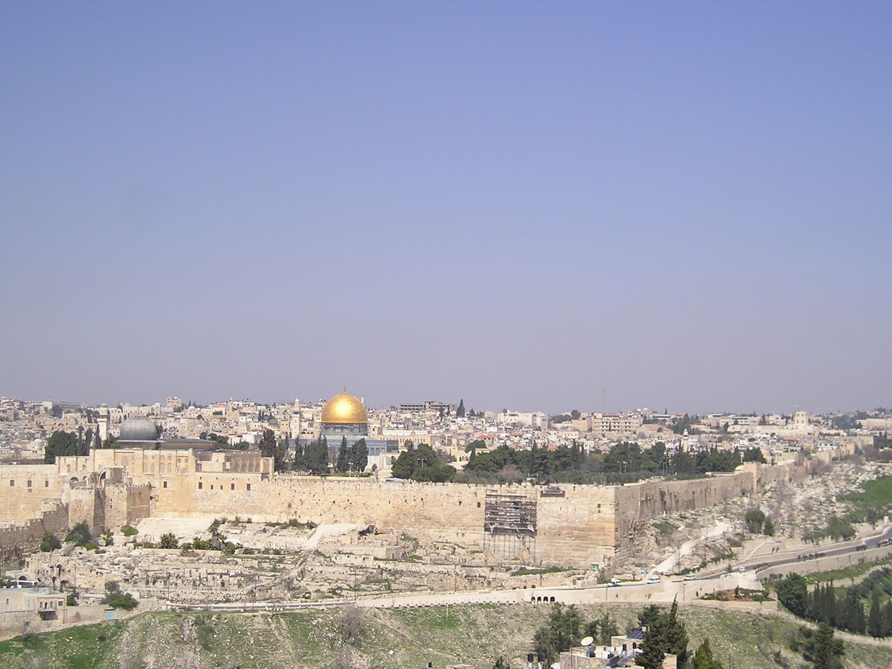
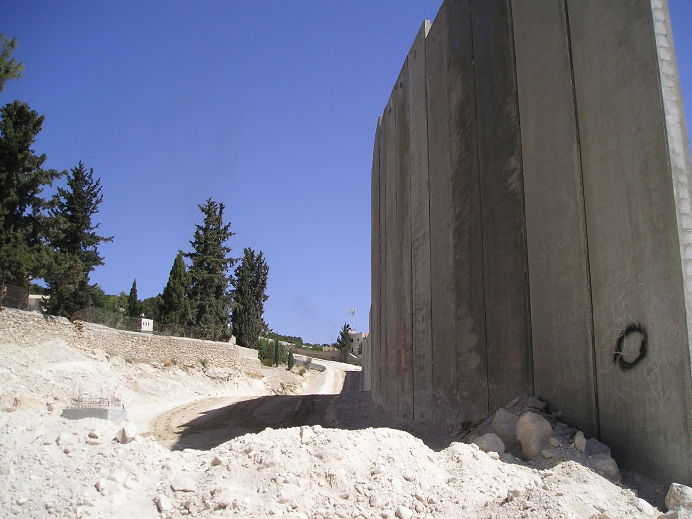
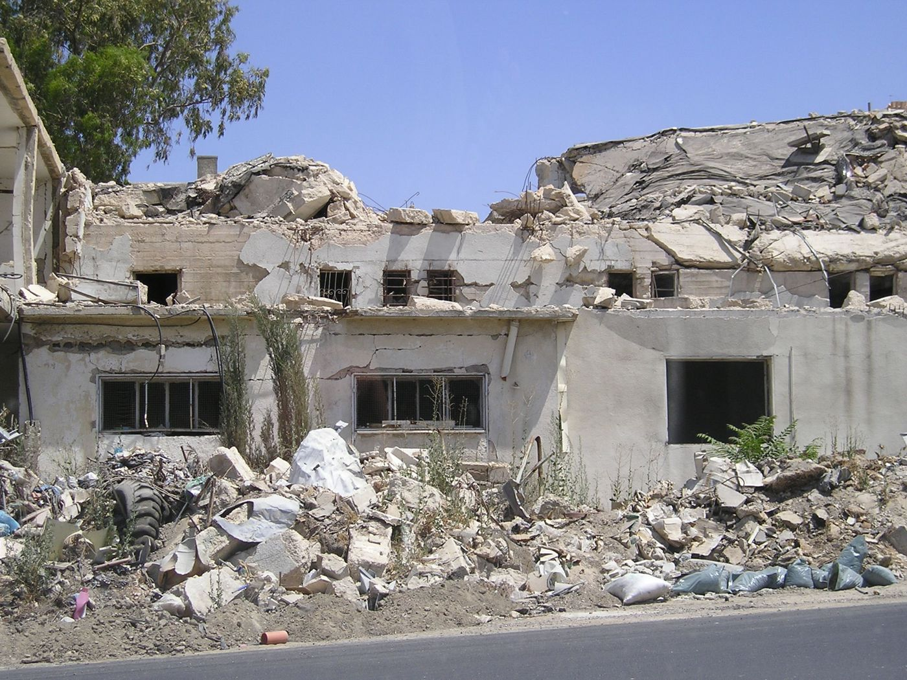

Ingegnere elettronico, Dottore di Ricerca in Ingegneria Elettronica, PMP®.
Qui raccolgo la mia attività di ricerca sui telescopi sottomarini per neutrini, il percorso professionale nell’elettronica embedded e, da un vecchio sito personale recuperato dall’archivio web, l’anno di servizio civile come Casco Bianco in Russia e i diari di viaggio scritti agli amici.
Per rispetto delle persone incontrate, i nomi sono ridotti a iniziali, alcuni passaggi sono riassunti e le foto che ritraggono persone non sono pubblicate. Gli errori di battitura dei testi originali sono stati lasciati quasi tutti com’erano.
Ricerca · 1999–2011
Attività accademica
Dalla tesi di laurea al dottorato ho lavorato all’elettronica dei telescopi sottomarini per neutrini ANTARES e NEMO, con la Sezione INFN e il Dipartimento Interateneo di Fisica di Bari.
Politecnico di Bari · Dottorato di Ricerca in Ingegneria Elettronica · XX ciclo · 2008
Timing Calibration System of the NEMO Phase 1 apparatus
Tutor
Prof. F. Corsi
Coordinatrice
Prof.ssa A. D’Orazio
Settore
ING-INF/01 – Elettronica
Voto
110/110
Lingua
Inglese, 109 pagine
Di cosa parla
Un telescopio per neutrini sottomarino ricostruisce la direzione di un neutrino dai tempi di arrivo della luce Čerenkov su centinaia di sensori distribuiti in un grande volume d’acqua. Per farlo, i tempi misurati da ogni sensore devono essere allineati tra loro e con il tempo di riferimento a terra. Secondo le simulazioni, un errore sugli offset entro 1 ns non degrada la risoluzione di puntamento: è questo il requisito del sistema di calibrazione temporale.
La tesi descrive progetto, realizzazione e test del sistema di calibrazione temporale della mini-torre di NEMO Phase 1, installata alla fine del 2006 a 2000 m di profondità al largo di Catania e entrata in funzione con tutti i suoi sistemi. Il principio è distribuire impulsi di luce, a istanti noti, da sorgenti comuni a gruppi di moduli ottici attraverso una rete di fibre: l’offset di ogni sensore è il tempo misurato meno il ritardo di propagazione nella fibra.
Il mio contributo
Progetto, realizzazione e test degli optical pulser e della rete in fibra ottica che distribuisce impulsi di luce a istanti noti ai moduli ottici della mini-torre.
Una stazione di calibrazione dei cavi per misurare i ritardi di propagazione nelle fibre, cioè le correzioni da sottrarre ai tempi misurati.
La stazione di clock a terra per tutto l’apparato: distribuzione del clock, flusso dati UTC in protocollo sincrono, aggancio al GPS, misure di andata e ritorno onshore/offshore con TDC, server NTP, gestione dei comandi di calibrazione.
Il software di analisi in MATLAB che recupera i dati di calibrazione dal sistema di acquisizione e calcola la matrice degli offset.
Test di validità: stabilità rispetto ai parametri ambientali, calibrazione a terra e test di vita dei pulser, che non derivano su un periodo paragonabile ai 14 anni di vita della mini-torre.
Oltre alla parte tecnica, dalle idee iniziali ai test finali, ho partecipato alla stesura delle specifiche, alla pianificazione e all’integrazione con gli altri sistemi e gruppi della collaborazione.
Struttura
1 · The NEMO projectAstrofisica dei neutrini, rivelatori sottomarini e sotto il ghiaccio, il progetto NEMO per un telescopio da un chilometro cubo: torri, moduli ottici, acquisizione dati, calibrazione temporale e posizionamento, sito e stazione a terra.
2 · The NEMO Phase 1 mini-towerLayout generale, cablaggio, alimentazione elettrica, sistema di acquisizione dati e front-end, sistemi di calibrazione: posizionamento acustico e requisiti di calibrazione temporale.
3 · Timing calibration systemSistema offshore (architettura, optical pulser, fibra e rete ottica), stazione di calibrazione dei cavi, sistema di clock a terra: progetto, hardware e software.
4 · Timing calibration and data analysisProcedura di calibrazione, analisi grezza e fine dei dati, risultati, test di validità: parametri ambientali della fibra, calibrazione a terra, test di vita degli optical pulser.
5 · PerspectivesIl nuovo sistema di calibrazione per la torre completa di NEMO Phase 2, con un pulser dentro ogni modulo ottico.
Timing Calibration System of the NEMO Phase 1 apparatusTesi di dottorato, Politecnico di Bari · autore unicodoi:10.5281/zenodo.23981861
2007
Timing calibration for the NEMO (NEutrino Mediterranean Observatory) prototypeIEEE Nuclear Science Symposium Conference Record, pp. 709–715 · autore unicodoi:10.1109/NSSMIC.2007.4436431
2007
Timing Calibration of the NEMO phase 1Proceedings IEEE Instrumentation and Measurement Technology Conference (IMTC), Varsavia, pp. 1–5 · autore unicodoi:10.1109/IMTC.2007.379079
2007
Timing Calibration System of the NEMO Optical SensorsAtti International Multi-Conference on Systems, Signals & Devices (SSD’07), Hammamet · M. Ruppi per la Collaborazione NEMO
2007
Timing Calibration of the NEMO Phase 1Transactions on Systems, Signals & Devices · M. Ruppi e la Collaborazione NEMO · primo autore
2006
Timing Calibration of the Optical Sensors of Undersea Neutrino Telescopes (by optical fibers)Symposium on Optical Fiber Measurements (SOFM 2006), NIST, Boulder · autore unico
2006
Clock Shore Station for Timing Calibration of the NEMO Neutrino TelescopeInternational Conference on Field Programmable Logic and Applications (FPL 2006), Madrid · autore unico
2006
Clock Shore Station for Timing Calibration of the NEMO Neutrino TelescopeIEEE Ph.D. Research in Microelectronics and Electronics (PRIME 2006), Otranto · autore unico
2006
Timing Calibration of the Optical Sensors for Undersea Neutrino TelescopesIEEE Ph.D. Research in Microelectronics and Electronics (PRIME 2006), Otranto · autore unico
2006
Timing calibration of the optical sensors for undersea neutrino telescopesNucl. Instrum. Meth. A 567, 566–568 (VLVnT II) · autore unicodoi:10.1016/j.nima.2006.05.236
2006
Timing calibration of the NEMO optical sensorsProceedings 9th ICATPP, Como 2005, pp. 292–296 · 4 autoridoi:10.1142/9789812773678_0047
2005
Timing Calibration of the NEMO Optical SensorsAtti 5th Conference on Nuclear and Particle Physics (NUPPAC’05), Il Cairo · M. Circella, C. De Marzo, R. Megna, M. Ruppi per la Collaborazione NEMO
2005
Timing Calibration of the NEMO Optical SensorsAtti IWASI 2005, Politecnico di Bari · G. Caporaletti, M. Circella, C. De Marzo, M. Ruppi per la Collaborazione NEMO
2001
Progettazione e test di un banco di prova per gli SCM dell’esperimento ANTARESTesi di laurea, Politecnico di Bari · autore unicodoi:10.5281/zenodo.23982340
Articoli delle collaborazioni NEMO e ANTARES
Articoli firmati come membro della collaborazione, con decine o centinaia di autori in ordine alfabetico.
AMADEUS – The acoustic neutrino detection test system of the ANTARES deep-sea neutrino telescopeNucl. Instrum. Meth. A 626–627, 128–143 · ANTARESdoi:10.1016/j.nima.2010.09.053
Procedures and results of the measurements on large area photomultipliers for the NEMO projectNucl. Instrum. Meth. A 614, 206–212 · NEMOdoi:10.1016/j.nima.2009.12.040
2009
Recent results and perspectives of the NEMO projectNucl. Instrum. Meth. A 602, 47–53 · NEMOdoi:10.1016/j.nima.2008.12.025
The data acquisition and transport design for NEMO Phase 1IEEE Trans. Nucl. Sci. 55(1), 233–240 · NEMOdoi:10.1109/TNS.2007.914035
2007
NEMO: A project for a km³ underwater detector for astrophysical neutrinos in the Mediterranean SeaInt. J. Mod. Phys. A 22, 3509–3520 · NEMOdoi:10.1142/S0217751X07037123
2007
Studies of a full-scale mechanical prototype line for the ANTARES neutrino telescope and tests of a prototype instrument for deep-sea acoustic measurementsNucl. Instrum. Meth. A 581, 695–708 · ANTARESdoi:10.1016/j.nima.2007.08.148
2007
Sensitivity of an underwater Čerenkov km³ telescope to TeV neutrinos from Galactic microquasarsAstropart. Phys. 28, 1–9 · NEMOdoi:10.1016/j.astropartphys.2007.03.003
First results of the Instrumentation Line for the deep-sea ANTARES neutrino telescopeAstropart. Phys. 26, 314–324 · ANTARESdoi:10.1016/j.astropartphys.2006.07.004
2005
Study of large hemispherical photomultiplier tubes for the ANTARES neutrino telescopeNucl. Instrum. Meth. A 555, 132–141 · ANTARESdoi:10.1016/j.nima.2005.09.035
2005
Transmission of light in deep sea water at the site of the ANTARES neutrino telescopeAstropart. Phys. 23, 131–155 · ANTARESdoi:10.1016/j.astropartphys.2004.11.006
Contributi presentati, tutti sulla calibrazione temporale dei sensori ottici di NEMO.
2007
Timing Calibration for the NEMO PrototypeIEEE Nuclear Science Symposium and Medical Imaging Conference, Honolulu (USA), 27 ottobre – 3 novembre
2007
Timing Calibration of the NEMO phase 1IEEE Instrumentation and Measurement Technology Conference (IMTC), Varsavia, 1–3 maggio
2007
Timing Calibration System of the NEMO phase 1 Optical SensorsInternational Multi-Conference on Systems, Signals & Devices (SSD’07), Hammamet (Tunisia), 19–22 marzo
2006
Timing Calibration of the Optical Sensors of Undersea Neutrino TelescopesSymposium on Optical Fiber Measurements (SOFM), NIST, Boulder (USA)
2006
Clock Shore Station for Timing Calibration of the NEMO Neutrino TelescopeInternational Conference on Field Programmable Logic and Applications (FPL), Madrid
2006
Timing Calibration of the Optical Sensors for Undersea Neutrino Telescopes · Clock Shore Station for Timing Calibration of the NEMO Neutrino TelescopeIEEE Ph.D. Research in Microelectronics and Electronics (PRIME), Otranto
2005
Timing Calibration of the Optical Sensors for Undersea Neutrino Telescopes5th Conference on Nuclear and Particle Physics (NUPPAC’05), Il Cairo, 19–23 novembre
2005
Timing Calibration of the Optical Sensors for Undersea Neutrino TelescopesSecond Workshop on Very Large Volume Neutrino Telescope (VLVnT II), Catania, 8–11 novembre
2005
Timing Calibration of the NEMO Optical Sensors9th International Conference on Advanced Technology and Particle Physics (ICATPP), Villa Olmo, Como, 17–21 ottobre
2005
Timing Calibration of the NEMO Optical SensorsInternational Workshop on Advances in Sensors and Interfaces (IWASI), Politecnico di Bari, 19–20 aprile
Tutorato di Informatica II (programmazione a oggetti, C++)Politecnico di Bari, lauree specialistiche in Ingegneria delle Telecomunicazioni ed Elettronica, maggio–giugno
2004
Tutorato di Informatica II (programmazione strutturata, C)Politecnico di Bari, lauree specialistiche in Ingegneria delle Telecomunicazioni ed Elettronica, marzo–aprile
2001–2005
Tutorato di Fondamenti d’Informatica per insegnanti di scuola superioreScuola di Specializzazione per la Formazione degli Insegnanti (Università di Foggia), maggio–giugno 2001, 2003 e 2005
Progettazione e test di un banco di prova per gli SCM dell’esperimento ANTARES
Corso
Laurea in Ingegneria Elettronica, indirizzo Controlli Automatici, 108/110
Relatori
Prof. F. Corsi, Prof. C. De Marzo
Dove
Sezione INFN di Bari, gruppo NEMO
Lo SCM (String Control Module) è il modulo elettronico alla base di ogni stringa del telescopio ANTARES, al largo di Tolone: gestisce clock, trigger, acquisizione dati e comunicazione su fibra con la stazione a terra. La tesi descrive il progetto del banco di prova per collaudarlo e la realizzazione in LabVIEW di alcuni moduli di test.
I · Motivazioni scientifiche alla base dei rivelatori di neutrini cosmiciTipi di neutrini · Sorgenti astrofisiche · Principi di rivelazione · Rivelatori di neutrini
II · L’apparato ANTARESStruttura dell’apparato · Acquisizione dati · Trasmissione dati · Calibrazione · Alimentazione
III · Il modulo SCMMeccanica del modulo · Trasmissione SCM – shore station · Calibrazione · Comunicazione su fibre ottiche · Clock · Trigger · DAQ/SC · Schema a blocchi dell’SCM
IV · Progetto del Test BenchProgramma e filosofia di test in ANTARES · Elenco delle funzioni da sottoporre a test · Progetto del Test Bench · Estensione al test di settore o stringa · Proposta di studio BST
V · Progettazione e realizzazione di alcuni moduli di testProgettare con LabVIEW · Comunicazione del modulo Local Interfaces · Moduli Pressure Sensor, Laser Beacon e SPM · Modulo di studio per segnali periodici
Appendice e bibliografia
Industria · dal 2008
Attività lavorativa
Oltre vent’anni di elettronica e sistemi embedded ad alta affidabilità, dalla ricerca alla produzione in serie, per clienti nei settori aerospazio e difesa, medicale, energia e industria.
Guida del reparto R&D e dei team hardware, firmware e meccanica: roadmap tecnologica, budget, intero ciclo di vita del prodotto fino all’industrializzazione (DfM, DfT). Supervisione di PCB multistrato ad alta densità con LTE, WiFi, BLE, CAN e MQTT; BSP Yocto e bring-up su NXP i.MX8M Plus (Variscite); migrazione CAD da Mentor Xpedition a KiCad; certificazioni EMC e RED.
12/2025 – 03/2026
Electronic EngineerIkaria · Bologna
Sviluppo elettrico e sistema di controllo di una turbina eolica a geometria variabile: catena di potenza con generatore a magneti permanenti, stadio DC/DC, accumulo a 48 V con gestione del surplus tramite dump load.
06/2025 – 11/2025
Lead Electronics Engineer & CTORadoff · Bologna
Sensori di gas per domotica e ambiente (radon, CO₂, CO, CH₄, PM, VOC) con tecnologie a infrarosso ed elettrochimiche, WiFi, BLE e rete cellulare. Progetti per i Campi Flegrei (segnali sismici e gas), per l’OGS e per il monitoraggio dei gas nelle stalle.
2022 – 2025
Chief Technical OfficerSens-In (gruppo Poggipolini) · San Lazzaro di Savena
Prodotti per il monitoraggio di carico assiale, taglio, accelerazione e temperatura con sensori integrati in elementi di fissaggio speciali, anche per alte temperature, ambienti ATEX e criogenici. Mercati: oil & gas, eolico, automotive, aeronautica, spazio e difesa.
2019 – 2021
Electronic Team Leader e Project ManagerBaxter – Hillrom (Mortara) · Castel Maggiore
Dispositivi per il monitoraggio di ECG e SpO₂ in ospedale secondo IEC 60601: firmware dell’elettrocardiografo ELI380, modulo wireless BLE 5, dispositivo indossabile per il progetto europeo Nightingale.
2017 – 2019
Electronic Team LeaderWaterline · Reggio Emilia
Macchine per bevande per il canale Horeca; hardware e firmware della valvola elettronica per le fontane post-mix PepsiCo, fino alla produzione di 350.000 pezzi per il mercato europeo.
Elettronica e firmware di macchine da caffè (Caffitaly) e di una rete CAN per comandi nautici (Quick).
2010 – 2016
Firmware leader e project managerTechimp · Zola Predosa
Sensori multigas DGA per l’olio dei trasformatori di potenza: modellazione, prototipi e calibrazione in spettroscopia. Firmware su DSP e ARM Cortex-M0, Linux embedded su i.MX35.
2008 – 2010
Sviluppatore software e firmwareAltran Italia, consulente · Milano
Gambro: funzioni per uso pediatrico di una macchina per dialisi (VxWorks, mercato USA). Alcatel-Lucent: software per apparati di broadcasting DVB-SH su Linux embedded e test di apparati ottici xWDM/TDM.
2004 – 2008
RicercaINFN e Università di Bari · Bari
Calibrazione temporale e distribuzione del clock per NEMO Phase 1 e Phase 2 (FPGA, CPLD, LabVIEW), backplane per l’elettronica di ANTARES, controller alta tensione del TRD per il satellite PAMELA.
Competenze
Linguaggi
C, C++, Python, VHDL, shell Unix, JavaScript, TCL
Microcontrollori
STM32 (F0, F1, F4, L0, L4, U5, H7), ESP32, Nordic nRF52, NXP i.MX35 e i.MX8M Plus, DSP Analog Devices, TI MSP430
Sistemi
Linux embedded e Yocto, RTOS, Zephyr, VxWorks
Hardware
Altium Designer, KiCad, OrCAD/Cadence, FPGA Altera e Xilinx, LabVIEW FPGA
Svolto con l’Associazione Papa Giovanni XXIII (Servizio Obiezione e Pace) e l’Operazione Colomba. Come Casco Bianco ho svolto gran parte del servizio nella Federazione Russa, nella casa famiglia dell’Associazione a Volgograd, nella Russia meridionale.
Il mio nome è Martino Ruppi, sono della classe 1973, sono ingegnere elettronico, sono stato Casco Bianco, in particolare sono stato in Russia dal 30 settembre 2001 al 15 aprile 2002 per svolgere parte del mio servizio civile. Servizio che ho svolto a Volgograd (Russia meridionale), presso la casa famiglia dell’Associazione Papa Giovanni XXIII.
Motivazioni nella scelta dei Caschi Bianchi
Innanzitutto occorre dire cosa significa per me essere obiettore. In seguito spiegherò cosa significa essere stato Casco Bianco.
Obiettore per me significa rifiuto ad un certo ragionamento, non aderire ad un modo comune di pensare, rigetto dell'idea che vuole la violenza (in tutte le sue forme) alla base comune di tutti i rapporti tra le persone, tra i paesi, tra le istituzioni. Dove quindi i rapporti sono intesi come rapporti di forza.
Ci sono un mucchio di ragioni per scegliere il servizio civile metà delle quali sono di rifiuto al servizio militare, all’esercito, alle armi a tutto quello che comporta e rappresenta. Posso anche indicare ragioni che sono religiose e sono del tutto uguali a quelle che permettono ai preti della chiesa cattolica in Italia di non svolgere il servizio militare. Poi ci sono ragioni civili e puramente pratici. Ebbene, ho constatato l'evidente inutilità del servizio militare, pertanto se proprio devo fare qualcosa, preferisco farne una utile. Credo che svolgere il servizio civile sia tra le cose più utili che si possa fare. Ma utili per chi? Utili per la società senz’altro, ma anche utili per me per i miei parenti e amici che vedono qualcuno che si spende per gli altri e non contro tal’altri. Ho ben 5 nipoti e so che loro guardano cosa faccio e le mie scelte, e voglio trasmettere loro un messaggio positivo, costruttivo, un messaggio che permette di formare una società nuova, più giusta, più solidale, più uguale, più umana.
Tuttavia la mia scelta non si è limitata solamente al rifiuto del servizio militare, ma si è rivolta al progetto Caschi Bianchi.Il motivo per cui ho scelto questo progetto sta nell'intenzione di svolgere un servizio impegnativo che desse conto del tempo 'perso' per la patria. Non volevo svolgere il servizio che ho visto svolgere da amici e conoscenti cioè un servizio dove occorre perdere del tempo, dove la cosa più impegnativa che ti poteva capitare era fare qualche fotocopia o rispondere a poche telefonate, non volevo preoccuparmi di fare il meno possibile utilizzando il più possibile licenze, permessi, festività e malattie. L’idea che ho di servizio è un po’ differente ed è più affine al concetto di formazione. Infatti dopo gli studi ho iniziato subito il servizio e qualunque attività svolgerò in futuro, terrò bene a mente il periodo trascorso in servizio all'estero e quello che farò e come lo svolgerò dipenderà un poco da quest'esperienza, in sostanza ciò che ho imparato mi accompagnerà per tutta la vita.
Mi chiederete, che cosa hai imparato? Ho imparato che esistono culture molto diverse dalla mia, ho incontrato persone che la pensano in modo differente da me, ma tutti siamo accomunati dai medesimi bisogni: amore, nutrimento, protezione. Ho imparato qualcosa sui poveri e sull'ingiustizia e come mi è stato detto da don Oreste, quello che ho visto non lo potrò dimenticare, naturalmente ho imparato anche tante altre cose su me stesso.
Tra tutte le cose buone e belle che potevo fare, però ho scelto l'Operazione Colomba, perché ritengo che la povertà nel conflitto sia oggi una delle più gravi e perché il tema del conflitto va alle radici della scelta tra violenza e nonviolenza. Stare nei conflitti è una delle cose che ritengo siano più necessarie e urgenti perché le persone che sono costrette a viverci, i civili, possono giustamente ritenere di essere dimenticati dalla comunità degli uomini, quindi stare con questi vuol dire non abbandonarli.
L'Operazione Colomba mi ha proposto di operare nell'ambito del conflitto ceceno e con degli amici dell'Operazione Colomba sono andato in Russia sperando di poter incontrare dei profughi della guerra cecena. Tuttavia non è stato possibile incontrarli un po’ perché è troppo rischioso andare in Cecenia oppure anche solo avvicinarsi, un po’ per il rischio di rapimenti è molto elevato, per cui quei pochi profughi che si era riusciti a trovare a distanza 'di sicurezza' erano degli orfani che a loro volta non siamo riusciti ad incontrare per impedimenti burocratici. Io da subito sono rimasto a Volgograd aspettando di unirmi ai miei amici che sono andati in Caucaso, ma poi loro sono tornati in Italia ed io ho deciso di terminare il servizio civile in Russia.
Dettaglio delle attività svolte
Breve descrizione della comunità in Russia
In Russia la comunità papa Giovanni XXIII ha due presenze: la casa famiglia e una comunità terapeutica per ragazzi che hanno avuto problemi con la droga. Entrambe le realtà sono a Volgograd e le due case sono a poca distanza l'una dall'altra, ma la casafamiglia a breve dovrebbe trasferirsi ad Astrakan, sulla foce del Volga. La casa famiglia ha una responsabile, che è anche responsabile della zona Russia della comunità: è un po’ la mamma per tutti gli accolti ed è il riferimento per tutte le attività. In casa vivono stabilmente quattro bambini e ragazzi tra i 10 e i 13 anni. Affiancati alla responsabile vi sono poi alcune altre persone che per periodi più o meno prolungati collaborando aiutano sostenendo l'andamento della casa famiglia. La casa famiglia poi ospita persone o piccoli nuclei familiari che sono in necessità, per periodi più o meno lunghi. Vi sono poi numerose altre attività che richiederebbe troppo approfondirle, per questo mi limito ad enumerarle: il coordinamento dell'adozione a distanza per le famiglie in difficoltà, la distribuzione di viveri agli studenti immigrati, la collaborazione alle attività con i barboni, il coordinamento del gruppo giovani, l'adempimento di attività burocratiche, le possibili attività con gli aspiranti obiettori russi, la collaborazione con gli altri soggetti interessati alle tematiche dell'handicap, le brevi attività presso un ospedale che ospita pazienti affetti da HIV e cosi via.
Attività svolte strettamente in favore della Casa famiglia
Non è facile dire cosa ho fatto, in questi 6 mesi e mezzo, anche se sono ingegnere elettronico non posso dire di aver costruito una casa o aver messo appunto un circuito elettronico, anche se qualcosa si vede (vedi dispensa, impianto elettrico e lavoretti vari). Diciamo che la cosa più appropriata da dire è che mi sono fatto fratello di queste persone accolte. Ho cucinato quando mi è stato chiesto, ho lavato, spazzato riassettato, ho fatto la spesa e accompagnato chi va a scuola, ho giocato con chi mi ha chiesto di giocare ho studiato con chi ne aveva bisogno, sono stato un po’ amico, un po’ compagno di stanza, un po’ fratello, un po’ professore, un po’ cuoco, un po’ sguattero, un po’ clown, un po’ costruttore, un po' falegname, un po’ imbianchino, un po’ elettricista ecc. Di quello che ho fatto si vede poco e forse rimarrà ancora meno però credo che era la cosa più necessaria ossia vivere con questi piccoli che non hanno una famiglia nel senso classico del termine. Io ho avuto dei genitori ed una famiglia nel senso classico del termine e credo che tutti i bambini abbiamo diritto ad averne una, non vedo perché io che non sono stato migliore di loro devo avere una cosa che loro non hanno, pertanto la cosa più importante che potevo fare è fare famiglia con chi non c’è l’ha.
Altre attività
Poi c’è stata l’attività con i barboni, due volte la settimana andavamo dai barboni in due punti della città dove chiedono l'elemosina, portavamo loro da mangiare ed orecchie per ascoltare le loro storie. Questa attività mi ha dato molto perché mi ha permesso di capire un poco la natura di quella povertà, mi ha permesso di distinguere le cose necessarie dalle cose superflue e le difficoltà che ci sono nel portare un aiuto.
Un'attività doverosa è stata lo studio della lingua russa che è un po’ difficile. Questo studio è stato aiutato da alcune lezioni presso una insegnate di Russo e Inglese ma è stato principalmente caratterizzato dallo studio personale e dall'ascolto e dialogo con le persone della casa. Questo studio è stato sia rivolto alla necessaria socialità verso l'esterno della casa famiglia (necessità di fare la spesa, accompagnare i bambini a scuola, mobilità nella città di Volgograd, socialità verso i cittadini russi) e sia in prospettiva di eventuali attività da svolgersi con gli obiettori di coscienza locali.
L'ultima attività svolta è stata proprio in favore degli obiettori di coscienza locali, le motivazioni che sono alla base dell'attività sono gli stessi che mi hanno spinto a fare obiezione di coscienza e che sono indicati in testa alla relazione. La necessità di tale attività si è subito rivelata a causa di 3 motivazioni: a) la situazione legislativa che non prevede la possibilita di svolgere un servizio alternatvo al servizio militare, b) il clima militaresco e c) la mancanza di attività sociali rivolte alle fasce più deboli della cittadinanza.
a) In tutta la Federazione Russa non è possibile svolgere il servizio alternativo al servizio militare perché non esiste una legge che regolamenti tale servizio, in realtà la possibilità di fare obiezione di coscienza sarebbe teoricamente possibile perché la recente (10 anni di anzianità) costituzione prevede…
Qui la copia conservata dall’archivio web si interrompe: il resto della relazione è andato perso.
Russi Ortodossi 80%, altri (musulmani e ebrei compresi) 20%
Governo
Repubblica multipartitica
Data di Costituzione
1991.
Parlamento
L'Assemblea Federale della Federazione Russa si compone di due camere: la Duma di Stato (camera bassa) ed il Consiglio della Federazione (camera alta).
Feste nazionali
Gennaio 1-2
Capodanno
Gennaio 7
Natale
Febbraio 23
Giorno dei Difensori della Patria
Marzo 8
Giorno internazionale della Donna
Maggio 1-2
Festa della Primavera e del Lavoro
Maggio 9
Giorno della Vittoria
Giugno 12
Giorno della Russia (Dichiarazione della Sovranita Statale della Federazione Russa)
Novembre 7
Giorno della Concordia e della Conciliazione
Dicembre 12
Giorno della Costituzione
Per i mesi freddi (che durano il 60 % dell'anno) occorrono indumenti caldi, la temperatura arriva anche ai -27°C. Non occorrono molti indumenti ma ben meditati, d'obbligo sono guanti, sciarpa e cappello inoltre giacca a vento, calzini e buone scarpe a prova di fango. In ogni caso è possibile comprare quello che occorre ai mercati locali.
L'alimentazione è poco meno proteica e vitaminica di quella italiana, ma ci sono le varianti russe come il latte e derivati. Dopo qualche tempo è possibile trovare nostalgia per le leccornie italiane, per cui è consigliabile portare dei ricordi da condividere.
Le monete più accettate sono l'euro e il dollaro che è possibile cambiare in rubli, in banca o presso piccole baracche autorizzate al cambio. Ci sono dappertutto e non dimenticate il passaporto. Avere con se il passaporto è obbligatorio ovunque in Russia, la milizia è molto presente quindi occorre esibirlo all'occorrenza, inoltre è indispensabile oltre per il cambio di moneta ed anche per fare un semplice biglietto ferroviario. La guida è permessa con patente europea solo se si è in possesso del permesso internazionale di guida che occorre richiedere alla motorizzazione di competenza.
Collegamenti telefonici: nelle grandi città è possibile telefonare in Italia tramite teleselezione (il prefisso è 8.10.39+ il prefisso della città italiana con lo “0” e il numero di telefono). Per le telefonate interurbane all’interno della Russia bisogna digitare 8+ il prefisso della città russa (p.es.095 per Mosca, 812 per S.Pietroburgo) e il numero di telefono.
Sono consigliate le seguenti vaccinazioni: Antidifterica, Epatite A-B
La scheda originale si chiudeva con indirizzi e numeri utili del 2002 (comunità, parrocchia, associazioni, ambasciata e consolati), oggi non più validi.
2003–2008
Interessi
Lettere scritte agli amici durante i viaggi, e altri scritti, dal 2003 al 2008.
Un anno e mezzo dopo il servizio civile, torno a Volgograd per pochi giorni: la responsabile della casa famiglia prende i voti. Cinque lettere, una per domenica. Le scrivevo senza accenti perché ad alcuni arrivavano illeggibili.
1 / 5
I vaskreshenie
Carissimi,
come la maggior parte di voi sapeva, avevo intenzione di tornare all’esperienza che mi aveva carattrizzato negli anni 2001/2001 ed eccomi qua di nuovo in Russia. Questa volta pero’ per poche settimane. La causa scatenante di uesta partenza e’ dato dai voti della cara A., la ricordate? La responsabile della casa famiglia, la poliglotta ecc ecc.
E’ anche vero che non tutti voi siete iniziati ai miei email fiume, le plurinumerate, ‘dom’, che solevo scrivere nei lunghi ed interessanti mesi di servizio civile, nei climi rigidi dell’inverno russo, quando servivo la patria fuori della patria nei gloriosi Caschi Bianchi.
Gli iniziati invece ricorderanno le descrizioni di quelle avventure.
Voi siete cresciuti nel frattempo ed a distanza di tempo magari qualcuno puo’ non essere interessato a questi trascorsi, in tal caso non ha che da dirmelo.
Dicevo, dunque, che ritorno sul luogo del servizio per piacere, non per servizio, la mia cara amica A. prende I voti, come non esserle accanto in un momento cosi importante? Soprattutto dopo che cosi gentilmente mi ha invitato. Naturalmente ho voglia anche di sapere come stanno gli altri, T., S., P., M., Al., I ragazzi della comunita’, le babusche, I barboni, li ricordate? Cosa avranno fatto nel frattempo? Dove sono?
Appena lo apprendo ve lo faro’ sapere.
Nel frattempo ancora due parole sul viaggio. Mi fa piacere dirlo che si e’ concluso felicemente, tuttavia qualche problemuccio lo abbiamo avuto. Alcuni di voi lo sanno I viaggi che vanno secondo le previsioni mi annoiano un po’, per questo ringrazio Dio che li movimenta. Aerei persi, notti in aereoporto, treni fermi sui binari, coincidenze saltate, nulla di questo mi e’ sconosciuto. Ma cosa e’ successo stavolta? E’ subito detto.
In realta’ nulla di realmente disagevole. L’aereo di Roma (Alitalia) e’ partito ed arrivato a Mosca in ritardo di un ora, ma questo non sarebbe nemmeno riuscito a compromettere il prosieguo, se nonche’ I miei compagni di viaggio, da Bologna, a Mosca si son ritrovati senza I loro bagagli che evidentemente non avevano compiuto la traversata. Il mio bagaglio pero’ e’ arrivato ed io lo caricato contento pensando che dopottutto I servizi di Bari tanto bistrattati in questa occasione si sono rivelati all’altezza della situazione. Naturalmente abbiamo perso la coincidenza per la nostra destinazione di Volgograd ed abbiamo dovuto cambiare I nostri biglietti per un volo successivo. Il russo che ricordavo e l’inglese si sono rivelati soddisfacenti insieme ad una modesta penale per 5 biglietti della comagnia di bandiera Aereoflot, che tralaltro serve in volo un buon salmone. Dopotutto siamo arrivati alle 2 AM ora locale appena 8 ore dopo le previsioni.
Una nota sull’oggetto, vaskreshenie sta per Domenica, tuttavia la parola deriva da vaskresh che vuol dire resurrezione quindi l’oggetto starebbe per prima Domenica o primo giorno di resurrezione, e’ da notare che questo termine e’ rimasto anche negli anni di dichiarato laicismo nonche’ illeggittimita’ e persecuzione delle religioni nello stato sovietico e nei suoi satelliti.
Una nota sul titolo: vaskreshenie sta per domenica, ma la parola deriva da vaskresh, resurrezione.
Marty
2 / 5
II vaskreshenie
Carissimi,
come vi dicevo nel precedente messaggio sono arrivato sano e salvo in terra di Volgograd seppure con qualche problemuccio. In realta’ anche don Oreste il giorno seguente ha avuto gli stessi problemi ed anche peggiori dei nostri. Infatti anche loro non hanno trovato I bagagli ed hanno conseguentemente perso il volo dell’17, pero non sono riusciti a prendere quello delle 23 che invece siamo riusciti a prendere noi il giorno precedente. In conclusione sono arrivati giusto in tempo il gran giorno della consacrazione per fare due ore di ritardo alla celebrazione con tanto di vescovo e tutti pronti ad aspettare in chiesa. La celebrazione in compenso e stata molto toccante soprattutto quando sono stati promessi I consueti tre voti. Tutti gli aspetti della celebrazione sono stati curati: canti, servizio, libretti ecc. Sull altare eravamo numerosi. Gia dimenticavo che hanno avuto bisogno di me, non mi sono fatto pregare. Anche I soliti imprevisti si sono presentati, per esempio alla fine è stato to manifestato un dubbio di canonicita’ dei testi da leggere, alla fine qualche modifica e qualche aspirazione di adesione ai principi cattolici hanno chiuso la questione, accorgersene era roba da professionisti.
Il punto di vista datomi dal servizio mi ha dato la possibilita’ di cogliere tutti gli aspetti della celebrazione e di dare una scorsa ai presenti. Ho riconosciuto molte persone, alcune della comunita’ parrocchiale ma anche tanti erano coloro che erano accolti dalla comunita’ o che erano stati aiutati per qualche necessita, barboni, nonne, persone anziane, poveri, che in qualche modo avevano stretto legami con la comunita’ o con A. in particolare in dieci anni di presenza (si festeggiava anche questo anniversario) e riconoscenti rendevano grazie a Dio per questi doni e questa conferma della presenza della comunita’ papa Giovanni tra loro.
Per coloro che non hanno seguito le vicende passate e per qualche distratto. Vi riassumo la situazione della presenza in Russia della Comunita papa Giovanni XXIII. Ci sono due case famiglia 1 a Volgograd ed 1 ad Astrakan e una comunita’ teraperutica (che si occupa di ragazzi usciti dal problema della droga) a Volgograd poco distante la casa famiglia. In realta’ la situazione si e evoluta da quando stavo qui perche’ allora stava solo 1 casa famiglia e la comunita’ terapeutica entrambi a Volgograd. Due parole ancora sulla casa famiglia qui a Volgograd. La comunita’ terapeutica e la casa famiglia ad Astrakan saranno oggetto dei successive messaggi per coloro che avranno la pazienza di leggerli.
La casa famiglia ha sede nella stessa casa di prima, ma accoglie persone diverse e anche il responsabile è cambiato: A., che era la responsabile, si è trasferita ad Astrakan. Ora il responsabile è M., un ragazzo che da tre anni è in Russia (ne ho parlato in passato). Tra gli accolti ci sono ragazzi che hanno concluso il programma della comunità terapeutica, due ragazze adolescenti, un giovane ministrante della chiesa cattolica di Volgograd e una signora senza casa accolta da molti mesi, che gironzola cantando di qua e di là. Altre persone poi si alternano dall’Italia, però per brevi periodi.
Marty
3 / 5
III vaskreshenie
Carissimi,
vorrei raccontarvi piu’ dettagliatamente le vicende di quassu’ ma non posso perche’ ho poco tempo per scrivere questo messaggio, infatti e approssimativamente l una della notte tra sabato e domenica (16-17 agosto). Dopo una giornata piena dove ho fatto quasi tutto un impianto elettrico alla russa di una piccola casa a due piani, fatto 40 panzerotti (occorre diffondere le buone tradizioni di provenienza), giocato, scherzato ecc.
Comincio dall ultimo messaggio dove descrivevo la celebrazione. Dopo che tutta quella gente e andata via, sono rimasto a Volgograd qualche giorno, in questo modo ho potuto salutare tanti che avevo conosciuto nei passati trascorsi, quelli della chiesa, i barboni. Ho rivisto con piacere una signora che chiede l elemosina davanti alla chiesa russa, gli ho chiesto di suo figlio che stava ricoverato all ospedale dei tubercolitici e mi ha detto che sta bene, ricordo che le ultime volte che l ho vista chiedeva farmaci speciali. Mi ha fatto piacere che si e ricordata subito di me e anche gli altri. L impressione e quella di non essere mai andato via come se un anno e mezzo non fosse passato, eppure delle differenze ci sono per esempio ora fa caldo mentre io li ricordo con il problema del freddo, inoltre sono diminuiti, neppure una ventina, infatti mi hanno detto che sono morti in tanti in quest ultimo inverno particolarmente rigido.
Come vi dicevo devo correre avanti, martedi sera sono partito col treno per Astrakan e sono arrivato mercoledi mattina. Un viaggio particolarmente lento 400 km in 11 ore e mezzo, bah almeno ho dormito!
Qui siamo stati accolti dalla casa famiglia di A. che ci aveva preceduti giorni addietro.
Questa casa famiglia accoglie tre bambini fissi, e spesso viene a trovarci anche qualche altro ragazzino del quartiere, praticamente da mattina a sera. Il sabato poi c’è la giornata dei bambini di strada: in pratica 7-8 ragazzini e ragazzine di strada dai 6 ai 13 anni sanno che possono passare una giornata giocando, disegnando, colorando e mangiando in un posto stabile.
Nel messaggio originale seguiva un testo di un operatore della comunità, «Le patate di Mikail, il funerale di Nina», pubblicato su Missioni Consolata n. 46, giugno 2003. Non è riportato qui perché non è mio.
Marty
4 / 5
IV vaskreshenie
Carissimi,
continuo ad assillarvi finche posso raccontandovi di questi lidi. La parola capita a proposito in questa giornata, mercoledi, dove con i ragazzini del lagher siamo andati al bagno.
E meglio cominciare con ordine. Da circa una settimana i nostri ragazzi della casa, ogni giorno vanno al Lagher, dalle 9 alle 3-4 del pomeriggio. A differenza dei tristemente noti lagher-campi questi sono divertenti sono come dei campi scuola. Qui tutti i ragazzi solitamente ci vanno per 2-3 settimane in attesa dell’imminente rispesa delle scuole (primo settembre), di solito si fa in campagna o qualche bosco, un po come i boy scout, il lager organizzato dalla chiesa cattolica qui invece si tiene nei locali della chiesa e dopo le 4 si torna a casa. Oggi ci toccava animare ed abbiamo fatto dapprima dei giochi, poi hanno prevalso le pressioni dei ragazzi che insistevano per il bagno, sinceramente non abbiamo resistito anche perche’ l’alternativa era continuare a vedersela con 25 scalmanati. L esperienza del bagno e da ricordare, si tratta di 5 o 6 vasche di poche decine di metri quadri tenute insieme con assi di legno e spessi fogli di plastica. Questi sono posizionati accanto al fiume (il volga naturalmente) e riempiti della stessa verde acqua stanca, un po torbida, che ha gia percorso piu di 2000 km a zonzo per la Russia. Questi scalmanati insieme agli altri scalmanati che c erano gia non facevano altro che entrare ed uscire dalle vasche tuffandosi dal tavolaccio. Naturalmente non ho resistito alla tentazione, ma vi assicuro non e un granche’.
Io e V. dopo il bagno abbiamo lasciato gli scalmanati con gli altri a pranzo e siamo andati al museo. Non temete non mi troverete deperito, per la strada abbiamo preso un panino dal nome originale chiamato gamburgher. Il palazzo del museo contiene tre piani al terzo c e una specie di museo maturalistico e un po di storia, al secondo un museo di storia della chiesa ortodossa ed al primo un museo di storia delle lavatrici. Concordi abbiamo optato per quello naturalistico, gli altri non convicevano troppo. Debbo dire che mi sono ricreduto sui musei russi, questo era abbastanza gradevole a parte gli insetti,scorpioni,biscie c erano tantissimi tipi di animali, alcuni anche sconosciuti, tutti un po’ rigidi dall impagliatura. Il pezzo forte naturalmente e il settore dei pesci del volga, uno dall aspetto particolarmente minaccioso e piu grande di una balena. Domani mi tocchera’ trovare un programma alternativo al bagno. I primi giorni e stato il mio aiutante come elettricista poi sono stato io il suo come spaccatore. C e qualcosa di appagante quando sei libero di sferrare colpi a destra e manca cercando anche di togliere tutte le piastrelle di una parete. Questa casetta che stiamo cercando di ristrutturare dovrebbe essere pronta il piu’ presto possibile perche’ dovrebbe servire per L. (la cuoca ufficiale della casa famiglia, noi altri possiamo considerarci al massimo aiutanti, di cui vi ho parlato tempo fa) per accogliere altri ragazzi.
Il primo sarà un bambino che oggi vive in un istituto e che ha alle spalle una storia familiare molto difficile. Mi è stato chiesto se conoscevo qualcuno disposto ad adottarlo a distanza, e giro questa domanda a voi. Ormai a prestissimo.
Marty
5 / 5
V ed ultima vaskreshenie
Carissimi,
anche questa esperienza russa e finita, oramai sono arrivato in Italia da diverse ore e tutto dovrebbe tornare alla normalità.
Il condizionale non è casuale perche’ in questo mondo di spostamenti rapidi occorrerebbe che il corpo ed il cuore si muovano alla stessa velocita’, ma non e cosi non so se per fortuna o sfortuna, di certo credo di avere lasciato qualcosa di me la e qualcos’altro me lo sono portato dietro.
Devo confessarvi che prima di partire per la Russia non ero completamente sicuro di voler fare questa esperienza, temevo di fare una scelta sbagliata: il costo del biglietto, una vacanza poco rilassante e non evasiva, un po’ di scomodita’. Tuttavia e stato solo per un momento, e bastato rivederli la in aeroporto a Volgograd, rivedere S. e T. per scaldare il cuore che evidentemente nel frattempo si era un po’ irrigidito. Quando ho rivisto i ragazzi della comunita’ terapeutica che ci hanno accolti entusiasti e si ricordavano le cose vissute insieme come se questo periodo non fosse trascorso, mi son chiesto, come ho potuto dubitare? Quanto mi sarei rimproverato se mi fossi perso questa esperienza? A voi sembrera che mi sia speso chissa quanto, che abbia fatto chissa’ quante e quali cose ma la verita’ e che ho fatto pochissimo. Nel bilancio dei ringraziamenti, benedizioni, auguri e preghiere sono certamente in attivo.
Non posso fare a meno di pensare a quanto poco si adatta al mio caso, l invocazione del santo di cui porto il nome. E una invocazione che mi piace tantissimo, la chiesa russa dice: “San Martino amico dei poveri” per la faccenda del mantello. La parte che mi son riservato e troppo preponderante, non vorranno la mia amicizia, occorrera’ ripartire da zero, imparare a fare le divisioni. Tante sono le cose che occorrera’ ancora imparare e capire pero sono sereno non disperato e un clima che non e facile da descrivere, quando ci penso mi viene in mente il testo con cui vi lascio ai vostri impegni ed occupazioni e un testo che ultimamente ho letteralmente davanti e che alcuni di voi conoscono ma lo spirito e unico e vi propongo di rileggerlo, chissa’ forse non ci sentiremo piu’ o forse ancora in ogni caso, tanti auguri di gioia. Marty
Il messaggio si chiudeva con il testo «Ragazzi, vi faccio anch’io tanti auguri» di don Tonino Bello (aprile 1993), che non riporto per intero.
Con l’Operazione Colomba a Yanoun, Aboud e nelle colline a sud di Hebron. Sette lettere, ognuna aperta da un versetto del Salmo 120, il primo dei canti delle ascensioni. In fondo, l’articolo per il giornalino di San Marcello e una lettera aggiunta dopo il ritorno.
1 / 7
I versetto · Salmo 120
1 v. Canto delle ascensioni. Nella mia angoscia ho gridato al Signore ed egli mi ha risposto.
Carissimi,
rieccomi a distanza di un anno a scrivervi dei posti, delle persone dei loro problemi, delle sofferenze e delle loro gioie. L’anno scorso vi ho portato con me in Russia, a Volgograd, ad Astrakan e a Mosca, vi ho parlato delle case famiglia, degli operatori, dei ragazzi accolti e del loro essere ragazzi comuni come ne conosciamo nelle nostre città.
Desidero salutare ciascuno di voi e scusarmi dell’intromissione con cui vi vengo a visitare nelle vostre caselle di posta. Ad alcuni di voi, quelli che son riuscito ad incontrare, ho chiesto se potevo inserirli nella lista di quest’anno ma siete per fortuna tanti (molti nuovi) e non ho potuto contattare tutti. Tuttavia se qualcuno di voi ha le e-mail congestionate o non ha voglia di ricevere questo “diario di viaggio” non deve fare altro che avvisarmi.
Dopo questa introduzione passo finalmente a svelare il luogo dove mi trovo. In effetti molti di voi ignorano dove mi trovi in questo momento e perché sia qui.
Quindi andiamo per ordine prima è meglio mettere qualche coordinata spazio-temporale. Sono esattamente a Yanoun anzi più esattamente a Yanoun di sopra, Yanoun è un villaggio costituito da una dozzina di case che si trova a pochi km a nord di Aqraba (il paese più vicino). Aqraba è nella regione di Nablus, che è a nord di Gerusalemme, in particolare tra la regione di Jenin e quella di Ramallah. In pratica mi trovo in territorio palestinese, anche se non so se è corretto parlare di Palestina visto che tuttora questo territorio è occupato militarmente dall’esercito israeliano. Sono nel pieno di un solleone, è sabato 14 agosto. Fuori dalla finestra ci sono delle colline che sono più secche della Maiella, non si vede un albero ma solo terra e roccia, non è un vero e proprio deserto, ma ci si avvicina abbastanza. Immagino che mi possiate chiedere cosa ci faccio qua. A questo risponderò nel messaggio seguente, invece risponderò alla domanda: perché oggi mi trovo in Medioriente?
Una serie di combinazioni mi ha portato qui e come sempre accade le vere origini non sono del tutto chiare. Il primo che mi ha parlato di questo posto si chiama F. e ha svolto parte del suo servizio civile da queste parti, un casco bianco come me. Ci siamo incontrati casualmente ad una manifestazione vicino Bari l’anno scorso. L’associazione che mi permette di essere qui si chiama Operazione Colomba ed io ne faccio parte da quando ho svolto il servizio civile (lo ricorderete, in Russia) per cui ero in casa quando sono salito a Rimini agli inizi di luglio per avere informazioni su questa presenza (grazie ad A., L., K. e naturalmente ad An.). Tuttavia queste che ho raccolto sono solo informazioni ma un importante casualità ha voluto che partecipassi pochi mesi fa ad alcuni esercizi spirituali con tema: i salmi delle ascensioni (grazie a padre Giovanni).
Per farla breve i canti delle ascensioni sono i canti che gli israeliti pregavano quando si recavano in pellegrinaggio verso Gerusalemme e sono detti delle ascensioni perché essendo Gerusalemme su un monte si eseguivano durante la salita. Ho scelto pertanto come motivo ricorrente, i versetti del primo salmo delle ascensioni, il salmo 120. Questo è il motivo dell’oggetto del messaggio e del titolo. Alcuni lo ricorderanno, è mia abitudine scegliere un motivo ricorrente in questo tipo cronache, l’ho fatto nel caso delle dom (che significa casa in russo) o delle vaskreshenie (domenica, sempre in russo).
Per finire due parole sul viaggio fisico che mi ha portato in data 11 di agosto in questa terra. In realtà il viaggio è andato abbastanza bene, neanche troppo lungo, solo un piccolo contrattempo (la perfezione non esiste). Solo alla dogana italiana di Fiumicino quando stavo per imbarcarmi sul diretto Alitalia Roma-Tel Aviv mi hanno detto che il mio fido passaporto necessitava di un’altra marca da bollo. Questo normalmente non è un problema quando si ha tempo a sufficienza ma considerando che non ne avevo e che l’ufficio postale è fuori dall’aeroporto ed anche le dimensioni del Leonardo da Vinci, allora può essere un problema. Immagino cosa possano aver capito le persone che si trovavano ad osservare 1 macchia blu sopra ed una beige sotto che potevano assomigliare rispettivamente ad una camicia ed 1 paio di pantaloni che si muovevano a una folle velocità attraversando corridoi immensi, controlli ai metal detector con gran sorrisi, passando sotto i nastri e superare code chilometriche. Ce l’hanno messa tutta ad ostacolarmi ma come vi ho detto eccomi qua.
Marty
2 / 7
II versetto · Salmo 120
2 v. Signore, libera la mia vita dalle labbra di menzogna, dalla lingua ingannatrice.
L’arrivo del pomeriggio dell’11 agosto è apparso tranquillo, troppo tranquillo. Sono rimasto un po’ deluso mi hanno fatto giusto due domande e poi mi hanno lasciato andare, non mi hanno nemmeno controllato il bagaglio, in effetti la mimetizzazione deve aver funzionato. In men che non si dica sono arrivato alla Porta Nuova della città vecchia di Gerusalemme. Là da ore mi aspettavano due dei nostri. U. della comunità, 31 anni, da tre mesi in questa terra e M. 25 anni, arrivato da una settimana. Mi dicono che sono fortunati ad essere arrivati prima perché alle 14.30 circa, ora locale, nel percorso che li portava a Gerusalemme è scoppiata una bomba. Penso: cominciamo bene! La conseguenza di questo evento è, a detta di tutti, la chiusura del checkpoint di Kalandia (luogo dell’attentato) e forse anche di quello prima. Poiché ci sono delle cose in programma per il giorno seguente decidiamo di provare ad arrivare alla base.
Il primo checkpoint si rivela una passeggiata, nel senso che il pullman ci lascia per attraversarlo a piedi. Per arrivare al secondo utilizziamo un mezzo locale chiamato service, consiste in qualche tipo di mezzo a 4 ruote (auto o furgone) solitamente bianco o giallo che si fa pagare tot sheikel (moneta israeliana e quindi anche palestinese del valore di circa 0.20 euro) a passeggero per portarti in posti noti, nel nostro caso dal primo checkpoint al secondo. Il secondo è tutt’altra storia si passa ad uno alla volta ma i militari controllano tutti i bagagli, borse, borsoni, zaini, buste e perquisiscono. Questo normalmente non è un problema (a meno che uno abbia problemi con la privacy, oramai i palestinesi non ne hanno più da tempo) ma questo controllo fa perdere un mucchio di tempo.
Il risultato di questo che risulta essere una ritorsione degli israeliani per l’attentato è che non è più possibile attraversare il secondo checkpoint per due motivi: il primo, non ci sono più pullman per la base dopo le 19.30; il secondo, almeno duemila persone vogliono oltrepassare il checkpoint e come succede qui la fila è un utopia per cui passa solo chi riesce a spintonarsi con forza sufficiente, il risultato è che dopo 40 min di ressa ci troviamo dove eravamo partiti invece sulla sinistra duecento donne sperano che arrivi prima o poi la fine del blocco perché in quelle condizioni non potranno mai passare. Si decide di tornare a Gerusalemme per passare la notte in ostello ma al ritorno il primo checkpoint è bloccato. Come noi altre 500 persone sono bloccate tra i due checkpoint.
Poiché siamo di meno ce la caviamo in solo due ore, pur di lasciarmi andare ho pensato pure di lasciare un barattolo di nutella al soldato che controllava i bagagli, ma poi ho considerato le priorità e l’ho tenuta. Il Palm hostel sembrava il paradiso anche perché davanti ci sono diverse decine di alte palme ed in certi casi sembra di stare ai caraibi. Il giorno dopo, prima dell’appuntamento con il resto dei nostri, io e M. sgattaioliamo per una breve vista al Santo Sepolcro, nella città vecchia. Molte delle botteghe dei mercati della città vecchia sono chiuse perché le persone non riescono a superare i checkpoint a causa della bomba del giorno prima. E’ ancora più evidente la ritorsione degli israeliani, il concetto dovrebbe essere quello di creare disagio agli acquirenti ed ai commercianti in modo che questi vadano ai terroristi e dicano: “per favore non mettete più bombe perché questo ci crea un po’ di fastidi”, sempreché sappiano a chi rivolgersi.
Le informazioni definitive sulle vittime dell’attentato dovrebbero essere: 2 morti palestinesi e 6 feriti tra i soldati, il numero dei feriti palestinesi è imprecisato. Finalmente faccio la conoscenza del resto dei nostri: A. 25 anni, arrivato a giugno ed il responsabile del progetto dell’Operazione Colomba in Palestina P., sicuramente il più scafato tra noi perché sta qui da aprile, dovrebbe essere un tipo a posto dato che ha fatto la mia stessa esperienza al G8 di Genova. L’Operazione Colomba in Palestina, finalmente riunita, si muove con E. e un taciturno conducente per il sud andiamo esattamente nella provincia di Yatta nella regione di Hebron quasi alle porte del deserto del Negev. Vi chiederete chi è E., in effetti neanche io ne so tantissimo, so che fa parte di un associazione israelo-palestinese chiamata Ta’aiush (insieme) che promuove il dialogo e la convivenza tra questi due popoli, quasi un movimento politico.
Ci fermiamo praticamente in mezzo al nulla, a guardare bene ci sono due tende e un asino legato vicino ad un insediamento israeliano chiamato Suseya. A guardare meglio si vede un anziano sotto la tenda più grande e bimbi sparsi. È un accampamento di beduini. Entriamo nella tenda aperta su tre lati e troviamo una dozzina di persone, tutti maschi, chissà da dov’erano! E. comincia a parlare con l’anziano vestito con il caratteristico lenzuolo bianco fermato sulla testa, per me è arabo ed anche per gli altri, stanno parlando in arabo. E. deve essere un tipo molto a posto perché si trova a suo agio e sembra conoscere bene la situazione, si occupa per Ta’aiush delle popolazioni a sud di Hebron.
Ci spiega la situazione di questi beduini, in pratica prima si trovavano in un altro posto, poi in quel posto i soldati li hanno cacciati per far posto ad un insediamento israeliano (Suseya), loro si sono trasferiti in un altro posto sulla collina di fronte anche di la sono stati cacciati per degli scavi archeologici ed ora si sono fermati in quella postazione. L’idea è che alcuni volontari internazionali (alcuni di noi, la settimana prossima) rimangano per un periodo di tempo presso di loro perché spesso militari vanno da questi beduini di notte, svegliano tutti li portano fuori e requisiscono quello che vogliono. La presenza internazionale dovrebbe garantire un miglioramento della situazione. Ci offrono un loro tipico pasto costituito da alcuni intingoli a base di formaggio salato, uova, pomodori, olio, spezie e ortaggi con il tipico pane arabo. Noi arrivati mangiamo con le mani e loro guardano (questa e la tradizione) poi probabilmente toccherà a loro, stiamo attenti a non finire tutto.
Il te bollente e dolce conclude il pasto, è impossibile tenere il bicchiere vuoto perché lo riempiono in continuazione. Dopo un bel po’ chiacchiere tradotte in arabo da E. ce ne andiamo salutando, si intravedono i visi di due donne velate nell’altra tenda. Ci spostiamo in un'altra località che in confronto sembra una metropoli, si chiama Jimba. Ci sono circa 20 tra tende e grotte dove vivono circa 150 persone. Questi come i precedenti e molti altri ancora vivono nei territori occupati, quindi in Palestina da generazioni ma al di la della linea dove Israele ha previsto la costruzione del muro, si calcola che sono 90.000 i palestinesi che attualmente vivono oltre il muro in parte in costruzione e in parte previsto. Sulla sommità della collina si è insediato un colono, un sudamericano che si chiama I. che reclama quella terra, come tutti i coloni, in nome biblico.
È difficile dire in poche righe le angherie subite da queste persone (lanci di pietre ai bambini nell’andare a scuola, chiusura delle strade per le città vicine, raccolti ripetutamente bruciati, minacce, invettive). L’obiettivo dovrebbe essere quello di annettere la terra per abbandono dei residenti. La lasciamo PG. e Ad., staranno una settimana come ospiti. Sulla strada del ritorno ci fermiamo un paio di volte in posti a noi sconosciuti ma conosciuti a Elzra. Sono case o gruppi di case isolate, ogni volta si ripete la cerimonia del te. In una di queste sappiamo che una donna anziana sta morendo e ci sono parenti al di la della strada statale che non possono arrivare perché la strada taglia in due il territorio.
Ai lati della strada ci sono guard rail, alti cumuli di terra e grosse pietre, essendo sprovvisti di attrezzatura adeguata cerchiamo il punto senza guard rail più facile da appianare e in poco diventa basso a sufficienza perché un trattore guidato da un uomo con due donne lo possano attraversare seguito da una vecchia auto. Soddisfatti ci ritiriamo. In men che non si dica, rieccoci al Palm hostel, questa giornata termina percorrendo la “via dolorosa” verso una pizza appena commestibile nei paraggi dell’hotel francescano Casa Nova con annessa la tradizionale chiusura del Santo Sepolcro.
Seguiva un commento al salmo tratto da I passi di un pellegrino di Pino Stancari, che non riporto.
L’invio delle e-mail potrebbe non coincidere con la loro scrittura poiché l’utilizzo della posta qui non è sempre agevole, potrebbe anche accadere di inviare più e-mail contemporaneamente ma ovviamente scritte in tempi differenti. Marty
Marty
3 / 7
III versetto · Salmo 120
3 v. Che ti posso dare, come ripagarli, lingua ingannatrice?
Carissimi,
è giunto finalmente il momento di spiegare la nostra presenza (mia, di U. e di M.) qui a Yanoun ma non prima di un intermezzo festoso e dell’arrivo qui. Vi avevo lasciati con la notizia che stavamo a Gerusalemme. Il giorno seguente siamo andati finalmente alla base (nel frattempo il secondo checkpoint era stato riaperto, evidentemente gli israeliani devo sono sufficientemente soddisfatti della ritorsione). Il paese dove c’è la base si chiama Nalin (scritto Ni’lin), per arrivarci si passa da Ramallah mi fanno notare la residenza di Arafat dove ci dovrebbe essere anche la sede del governo (Muhata) ed anche il parlamento, in realtà si tratta di 3 o 4 edifici di 5 o 6 piani. Come sapete Arafat è stato minacciato dagli israeliani, non può uscire altrimenti lo uccidono.
A Nalin si arriva in un ora con un opportuno service, la casa è in prestito da un signore (J.) che sta facendo soldi con le assicurazioni sulla vita che qui hanno avuto improvvisamente un bum e non stento a crederlo. Lui lavora a Ramallah e li vive in un'altra casa con la sua famiglia, la seconda casa, quindi, fino ad esso l’ha prestata a noi, fino ad esso perché i nostri piani prevedono un trasferimento con armi (modo di dire) e bagagli ad Abud. Ma non precorriamo i tempi. Dunque arriviamo a Nalin e troviamo la moglie di J. con i figli e una nonnina di 86 anni nel salotto ci offrono caffè turco, acqua si parla, si scherza è evidente lo stile di vita e di cultura di questo nucleo familiare paragonato ad altri, le donne sono senza velo, leggono, studiano e discorrono di tutti gli argomenti, mi dicono possono essere considerati dei progressisti. Siamo invitati al matrimonio di un parente stretto di J..
Il matrimonio dura due giorni, nel primo c’è la festa degli uomini, alla sera c’è una sorta di scatenamento collettivo con musica popolare araba, danze tradizionali e beveraggi (rigorosamente non alcolici, una volta tanto mi trovo bene!) vari fino al mattino. Essendo un po’ provati dalla giornata decidiamo di levare le tende un pio d’ora dopo l’arrivo. Il mattino dopo di buon ora dobbiamo partire per Yanoun. Naturalmente ci perdiamo a festa del secondo giorno che ci interessa relativamente visto che in sostanza lo sposo festeggia con la sposa e tutte le donne. Da Ramallah prendiamo un pullman per Huwwara un crocevia con annesso checkpoint dei soliti noti. Siamo molto fortunati perché dopo un quarto d’ora il checkpoint, prima chiuso, apre. Prendiamo un service che ci porta a Aqrabat e di li finalmente a Yanoun. Arriviamo alla casa degli internazionali, qui due signore occidentali con binocolo ci accolgono. Qui esiste una presenza ininterrotta di internazionali da quasi due anni.
Le signore fanno parte dell’associazione EAPPI (Ecumenical Accompaiers Programme in Palestine and Israel) che è responsabile di questa presenza ma altre associazioni si sono alternate: Ta’aiush, IWPS (International Women’s Peace Service), ISM (International), CCIPPP, GIPP (Grassroots International for Protection of Palestinians). Poiché loro devono fare un corso di formazione hanno chiesto di sostituirli per 5 giorni. La storia delle vicende è ben documentata in due raccoglitori. Ve ne risparmio la lettura. Il problema principale di questi 150 abitanti sono i coloni che 5 anni fa si sono insediati sulla cima delle colline costruendo case e fattorie su un preesistente insediamento chiamato Itamar. Da allora la loro vita è diventata invivibile fino alla costante presenza degli internazionali. Tutte le famiglie hanno avuto qualche “visita” dei coloni a volte mascherati con armi in pugno hanno sparato in aria, alle finestre, alle case. Ci sono stati percosse, è stato bruciato l’unico generatore elettrico donato dall’ONU, rotta la pompa che tira l’acqua dai pozzi e innumerevoli vessazioni.
Due anni fa a seguito di vessazioni particolarmente dure molte famiglie hanno abbandonato le loro case per trovare rifugio in abitazione di parenti ad Aqraba e la popolazione è scesa ad un ottantina di persone molte associazioni hanno denunciato il fatto e hanno deciso di realizzare una presenza stabile. Il sindaco ha messo a disposizione una casa (quella dove attualmente viviamo) chiedendo una copertura totale degli internazionali. Le signore prima di andarsene ci avvertono di non lasciare la casa che permette una buona visuale perché è capitato che i coloni facciano incursioni rapide. Di stare attenti soprattutto il sabato perché i coloni non lavorano ma possono combinare qualcosa e nei momenti di poca visibilità. Raccontano che una donna una volta gli ha detto che se gli internazionali dovessero decidere di lasciare Yanoun lei minaccerebbe di lasciare il marito se non andassero via anche loro, dice: “se voi una mattina andrete via, noi partiremmo nel pomeriggio”.
Infatti questo insediamento è munito di 3 o 4 torrette si avvistamento situati in posti strategici, sono dotati di telecamere a circuito chiuso e visori notturni. Sappiamo che c’è sempre qualcuno che con un qualche tipo di telescopio controlla la situazione e la presenza o l’assenza di internazionali e per non dispiacerli quando usciamo facciamo sempre la manina, non vogliamo che ci prendano per maleducati. Se qualcuno ha voglia può leggere qualcosa su questo sito:
Articolo di Haaretz su Yanoun (link d’epoca, probabilmente non più attivo): taayush.tripod.com/new/yanun_haaretz_english5.htm
I coloni di Itamar credono (insieme a molti altri) che la terra è stata promessa loro da Dio secondo gli insegnamenti del Rabbi Meir Kahane appartenente al partito politico Kach che è stato bandito nel 1998 da Israele per incitamento al razzismo. Questi sono convinti che avranno la pace solo quando tutti gli arabi saranno fuori dalla Palestina (indicata in inglese come West Bank). Nei due raccoglitori ci sono informazioni anche su Itamar, esiste un loro sito dove si invitano ebrei a trasferirsi in questo posto definito come bucolico e perfetto per la crescita religiosa dei figli, se non ci si si vuole trasferire si può fare una donazione per progetti indicati (acquisto di giubbotti e veicoli antiproiettile, visori notturni, circuiti di sorveglianza ecc) il tutto rigorosamente deducibile dalle tasse (USA, naturalmente). Il sito è: www.shechem.org/itamar
Questo messaggio sta volgendo al termine come anche la nostra presenza qui infatti domani alle 12-13 circa verranno le due signore e riprenderanno la rocca. In effetti in questi giorni ci siamo un po’ riposati abbiamo camminato un po’ per Yanoun di sopra e di sotto, in un sole impietoso. Io ho approfittato per tormentarvi con questi scritti, ho provato anche ad andare ad Aqrabat a piedi un paio di volte perché avevano promesso la presenza di una postazione internet ma la prima volta qualcuno mi ha detto che mancava la corrente la seconda che la postazione aveva chiuso. Se lo dicevano prima mi sarei risparmiato 5-6 ore di scarpinate. Visto che c’eravamo abbiamo partecipato alla festa della quasi-ultimazione dei lavori della moschea. La festa consisteva in un succulento pranzo che abbiamo consumato con il consiglio degli anziani del paese discutendo delle rispettive politiche.
Il giorno prima U. e M. sono andati a vedere i lavori e hanno offerto il loro aiuto, ma forse gli uomini al lavoro li hanno visti gracilini e hanno cortesemente rifiutato. Il giorno dopo mentre andavo fischiettando verso Aqrabat sperando in un colpo di fortuna, son passato davanti ai lavoratori, che come forsennati sfornavano 10 m cubi di cemento all’ora (stavano costruendo il tetto) mi hanno guardato bene, poi si son guardati tra loro e mi hanno fatto cenno di andare da loro, mi hanno quindi messo a riempire i secchi di sabbia fine, dopo pochi minuti stupiti dalla classe e dallo stile mi hanno detto che potevo smettere, proprio allora che ci avevo preso gusto. Della scarpinata però è valsa la pena perché lungo la strada si gode di un panorama fantastico, in fondo si vedono i monti della Giordania, prima le dune del deserto e verso il basso la valle scavata dal fiume, il Giordano che divide i due stati.
Domani faremo il trasloco da Nalin a Abud, ma è meglio non anticipare troppe cose. Bye.
Marty
4 / 7
IV versetto · Salmo 120
4 v. Frecce acute di un prode, con carboni di ginepro.
Carissimi,
scusate la lunga interruzione, come avrete capito la possibilità di utilizzare un terminale è saltuaria. In realtà questo messaggio è stato scritto diversi giorni fa. Ero sotto una tenda di beduini ed aspettavo l'ora del pranzo. Prima di raccontarvi questa esperienza di quasi una settimana, continuo con la cronaca degli eventi cosi come sono avvenuti. Visto che ci sono mi scuso con le persone che ho citato nelle email precedenti, perché ho messo i loro nomi in chiaro, infatti alcuni potrebbero avere esigenze di privacy, per questo motivo in seguito troverete solo le iniziali.
Giovedi (19) da casa di E. siamo partiti per dare il cambio ai due reduci che avevano lasciato Jimba. PG. e A. ci hanno raccontato in breve i fatti della settimana. Ogni giorno sono andati con i pastori che pascolavano le pecore nei campi vicini alle case che hanno dovuto abbandonare 6 anni fa, scacciati dall'esercito, perché un insediamento ha deciso di installarsi sulla sommità della collina. I pastori si aspettavano che sarebbero stati scacciati dai coloni o dal DCO (l'esercito) come è avvenuto ogni volta che vi sono andati fino ad allora, però evidentemente la presenza dei nostri li ha fatto desistere. In seguito a questo, il capo del villaggio ha detto che se ci fosse un nutrito gruppo di internazionali, il villaggio avrebbe provato a ripopolare le case abbandonate. Con questa informazione siamo andati a Suseya e vi abbiamo lasciato U e M.
In serata siamo stati invitati, insieme a don N di Pax Christi veneto, a parlare delle nostre attività di internazionali in questa terra ad un gruppo di pellegrini sardi all'hotel francescano CasaNova. Il venerdi seguente abbiamo cominciato ad incontrare le associazioni che hanno una presenza di volontari internazionali per vedere se è possibile dare seguito alla proposta del capo villaggio di Jimba. La prima associazione che abbiamo incontrato è stata l'EAPPI che ha sede sul monte degli ulivi a Gerusalemme. Abbiamo parlato con L. un americano che parla italiano perché di origini calabresi. Dopo aver spiegato il progetto che avevamo in mente ci ha portato su un alto promontorio, dove si gode di una vista straordinaria di Gerusalemme, dei dintorni e fin'anche dei monti della Giordania. Ci ha mostrato l'enorme barriera costituita dal muro non ancora completato e di come la linea che esso costituisce non coincide con la linea di separazione (la Green Line) definita dal trattato di Oslo.
La corte dell'Aia quasi due mesi fa si è pronunciata sulla costruzione del muro condannandolo e definendolo come muro di annessione perché annette terre dei territori occupati nei confini dello stato di Israele. Il muro è molto tortuoso perché prende tutti gli insediamenti israeliani e le basi militari fatti sui territori occupati, che sono disposti a macchia di leopardo. Questo causa come è evidente problemi enormi di circolazione ai palestinesi perché ogni insediamento è protetto da una base militare che controlla strade e territorio. Come se non bastasse sia per esigenze di sicurezza da parte dei coloni, sia per brama di terra, il muro si allarga notevolmente fino a circondare gli abitati palestinesi, spogliando cosi i residenti dalle loro terre che di norma costituiscono la fonte di sussistenza economica degli abitanti, attraverso le coltivazioni agricole (in primo luogo la produzione di olio di oliva) e l'allevamento di pecore e capre.
Dopo aver lasciato L al monte degli ulivi, abbiamo saputo dai nostri in missione che un elicotterone dell'esercito si era presentato tra le tende beduine dove'erano ospitati e ne erano usciti qualche decina di rambo, armati di tutto punto perché in quel giorno avevano in programma un esercitazione militare precisamente in quel posto, tra le pecore che pascolavano, le donne che cucinavano, i bambini che dormivano e gli uomini che facevano sicuramente qualcosa di importante. Hanno quindi fatto evacuare tutti questi e li hanno radunati in un angolino. Dopo circa un ora di gioco alla guerra sono andati via come erano arrivati. Qualche anno fa il DCO ha dichiarato la zona intorno alla località di Jimba, già parco naturale, luogo di esercitazione militare, infatti non è raro trovare in giro auto tutte sforacchiate, usate come bersaglio o poligoni veri e propri.
In questo caso la presenza dei nostri è stata utile per almeno due motivi: primo ha evitato un possibile maltrattamento degli abitanti e secondo perché allarmati i contatti istituzionali si è venuto a sapere che tale esercitazione non era stata autorizzata ed era da considerarsi illegale per i modi e il luogo in cui si è svolta.
A questo punto la domanda sorge spontanea: come è possibile?
Una delle cause, a detta di molti, può essere attribuita alla modalità del servizio militare in Israele. All'età di circa 18 anni tutti (uomini e donne) sono tenuti a 3 anni di servizio armato alla patria (non esiste servizio civile), in più vi sono i militari di professione. I locali ci dicono che i problemi e con i coloni variano con il battaglione di stanza. Fino ad alcuni mesi fa c'era una sorta di tolleranza, poi però l'unità è cambiata e sono cominciati i problemi. La maggior parte dei militari di stanza sono di leva e quindi giovanissimi e molti di loro sono coloni e figli di coloni. Non ho difficoltà a crederci, infatti tutti i militari che ho incontrato finora sono giovanissimi e fanno servizio ai check point e controlli sulle strade. Sono ragazzi a cui viene dato un potere immenso, fanno perquisizioni a giovani, vecchi e bambini, possono decidere chi far passare e chi no, possono far aspettare ore sotto al sole. Abbiamo sentito storie di veri e propri soprusi, persino ad alti prelati.
Tornando alla giornata di venerdi, visti gli eventi, abbiamo deciso di aumentare il numero dei nostri in missione e anche senza fare il gioco del bastoncino più corto sono stato scelto io. Visto che secondo il programma dovevamo andare ad Hebron ci siamo allungati fino a Yatta (città che dista pochi km dai beduini). Ad Hebron il programma prevedeva una riunione con una organizzazione abbastanza corposa di volontari, il CPT (Christian Peacemaker Team). Ci siamo divisi infatti PG. e A. hanno fatto la riunione con i capi del CPT, in sostanza hanno fatto la stessa proposta fatta alle EAPPI. Io invece sono stato messo nelle mani di un gruppetto di tre di loro che mi hanno messo a parte delle loro operazioni li ad Hebron e della situazione contingente, nel pacchetto era compresa anche una visita guidata per la città vecchia (potete immaginare il gruppo con età media di circa 60 anni, compreso il sottoscritto, che si addentra in un labirinto di vicoli salutando a destra e a manca). Poiché non sono geloso delle cose che mi hanno detto, spendo un po' di parole per raccontarvi.
Nel 1979 alcuni ebrei statunitensi andarono a stare in alcune stanze di un hotel nella città vecchia di Hebron. Dopo qualche settimana, essi proclamarono che quella era la loro terra, data loro da Dio (la solita storia) e volevano diventare cittadini israeliani, si barricarono dentro e dissero che non sarebbero usciti perché quella era la loro terra. Prima del 1979 ad Hebron non c'erano insediamenti. Il DCO difese questi coloni e questi comprarono l'hotel. Ovviamente ci furono aspri scontri e molti morti, in maggioranza da parte Palestinese. Sull'esempio di questi primi coloni di Hebron altri vennero nella città vecchia oggi si contano 400 coloni contro diverse decine di migliaia palestinesi sempre nella città vecchia. Oggi il DCO presidia tutta la città vecchia, diverse strade principali sono ad uso esclusivo dei militari e dei coloni. Negli ultimi anni i militari hanno operato una strategia di allontanamento, cioè con le intimidazioni sono riusciti a far chiudere molti esercizi commerciali del borgo antico.
A causa della difficile situazione in Hebron, la città è stata esclusa dalla suddivisione in zone A, B e C nel trattato di Oslo ma è stato fatto un trattato a parte che prevede 2 zone, denominate H1 e H2, la prima H1 a controllo amministrativo palestinese (la parte più ampia e più recente costituita da palestinesi, molti dei quali estromessi dalla parte antica) e la seconda H2 a controllo amministrativo israeliano (la parte più antica). Il centro religioso della città è costituito da una fortezza, un unico sito diviso in due parti: una moschea da un lato e una sinagoga dall'altro, divise da un muro interno. Secondo la tradizione al di sotto vi sono conservate, ed è questa la cosa importate, le tombe dei patriarchi: Abramo, Isacco, Giacobbe, le loro mogli ed altri. Dal 1995 il CPT è presente ad Hebron ed è riuscito con la presenza internazionale a diminuire il livello di violenza.
Particolarmente violenti sono i coloni della città vecchia, a detta dei membri del CPT, che girano armati e più volte hanno minacciato di morte gli internazionali, anche con lettere anonime. Questi coloni della città vecchia spesso lanciavano pietre dai palazzi che si affacciavano sulle strade del mercato, ferendo diverse persone. Dopo sono state sistemate delle resistenti reti metalliche a protezione lungo le strade. Si vedono, infatti, le reti abbassate da grosse pietre e gran quantità di immondizia lanciata. Il CPT inoltre fa un servizio di accompagnamento agli studenti palestinesi quando si recano a scuola perché spesso sono oggetto di lancio di pietre da parte dei coloni. Anche a detta dei militari questi coloni di Hebron sono considerati come spostati, eccessivamente violenti e pericolosi. Ovviamente ci sarebbe altro da raccontare, spero di avervi dato un piccolo quadro.
Mi scuso per la lunghezza di questo messaggio, vi chiedo ancora un momento di pazienza perché forse qualcuno di voi sarà interessato al commento dei versetti 3 e 4 del salmo delle ascensioni 120. Tengo a ribadire che i commenti non sono miei ma bensى del gesuita Stancari, per chi di voi volesse potrei trasmetterli per intero.
Seguiva un commento al salmo tratto da I passi di un pellegrino di Pino Stancari, che non riporto.
Marty
5 / 7
V versetto · Salmo 120
5 v. Me infelice: abito straniero in Mosoch, dimoro fra le tende di Chedar!
Carissimi,
dopo una settimana passata dai beduini e dopo aver visto altre realtà di qui non posso non sentire le differenze che ci sono tra questi luoghi e quelli in cui vivete, da cui anch’io provengo e faccio parte. Le differenze sono nelle informazioni che i media vi trasmettono a proposito di qui; esse non hanno nulla a che fare con questa terra, come se si trattasse di un'altra. Differenze di cultura, con le importanti relazioni uomo-donna. Differenze di trattamento e nel sentire i diritti. Differenze climatiche e geografiche, un caldo che non vi dico e una terra per lo più pietrosa dove vi cresce a malpena l’ulivo. Questa è la terra che molti israeliani vogliono tutta per se, un fazzoletto grande quanto il Lazio dove le più grandi distanze non superano i 100 km e qualcosa.
I palestinesi in poche decine d’anni si sono dimezzati di numero perché emigrati o deceduti e i più informati dicono che negli accordi di pace hanno messo tutto quello che potevano mettere, chiedere ancora sarebbe argomento di sopravvivenza. Gli accordi di Oslo definivano 3 tipi di zone: A con controllo amministrativo e di polizia palestinese, B con controllo amministrativo palestinese e di polizia israeliano e C con controllo amministrativo e di polizia israeliano. Tuttavia dalla nuova intifada (circa 6 anni fa) l’esercito israeliano fa da polizia interna per le zone B e C ma anche le zone A non gli sono escluse. Normalmente le zone A sono costituite dai grossi centri, vere e proprie città come Ramallah, le zone B dai piccoli centri e zone limitrofe e le zone C dalle campagne. La politica di Israele ovviamente non permette che i centri si espandano cosi in tutte le zone C è vietato fare ogni tipo di costruzione.
Questo è il caso di Yanoun, questo è il caso di Jimba e dei beduini Suseya. Chi ha la terra in zona C non può viverci, in molti casi chi ha la terra nella zona C con case o bagni li ha avuti distrutti ora perché troppo vicini a insediamenti o zone militari ora per nessun motivo apparente. L’ONU anni addietro aveva costruito 8 bagni per la gente di Jimba che sono stati impietosamente abbattuti dai buldozer. N. vive sempre nelle tende tutto l’anno, è giovane poco più di vent’anni e nel suo incerto inglese ci mostra la caverna dove viveva, decisamente più comoda della tenda attuale, distrutta dai buldozer. Gli altri parenti, fratelli, sorelle, cugini, zii, si alternano nell’anno facendo da spola a Yatta dove hanno casa, scuola e qualcuno il lavoro. Ci deve essere sempre qualcuno per le pecore, per gli olivi ed anche perché sanno che non appena vanno via, gli israeliani prenderanno per loro la terra rimasta.
I buldozer hanno distrutto decine di edifici, caverne, cisterne della zona persino impianti con pannelli fotovoltaici. Qui la vita è dura, non c’è elettricità, ne acqua corrente, l’acqua piovana è raccolta in pozzi ed è una risorsa preziosa più che altrove. In questa vita dura ci siamo trovati a vivere per circa una settimana, un po’ campeggio ed un po’ di agriturismo. La durezza è stata mitigata da una ospitalità commovente ed anche un po’ asfissiante. L’unico bagno che ho visto era a nostro uso esclusivo, il capo clan per farci posto dormiva sul trattore. Pur nella tragicità scene divertenti si alternavano, come quella in cui cercavo di strappare la mia biancheria alla signora che voleva a tutti costi lavarla per me, come in un tiro alla fune. O quando siamo andati alle 5 di mattina al mercato degli animali per vendere una decina di giovani pecore. Oppure dove una malsana idea che è venuto ad uno di noi ci ha messo alla prova nel cucinare una sera per loro.
La loro cucina invece era genuina perché tutto fatto in casa (pane, carne, formaggio, uova, olio, ecc) e buonissima. La tenda che ci ospitava era una sorta di soggiorno per tutta la famiglia e per le famiglie vicine, spesso eravamo in compagnia di beduini per i quali dovevamo essere una attrazione vera e propria. Occorre molto adattamento per riuscire a stare tutto quel tempo con poco più dei vestiti addosso visto che la mia permanenza non era prevista, oramai posso tenere corsi di sopravvivenza a prezzi modici. Nonostante il solleone paralizzante uscivamo per accompagnare N. con le pecore, per guardarci in giro o visitare gli altri clan e non ci ritiravamo prima di aver preso almeno 8 te e 2 caffè arabi dai gentilissimi rispettivi padroni si casa e poco importava se al ritorno avevamo gli occhi spalancati. Un proverbio arabo dettoci da un prete recita a questo proposito: “un ospite è un prigioniero nelle mani di chi lo ospita”.
In uno di questi giri abbiamo appreso che pochi giorni prima in un clan distante più di 1 km in linea d’aria o 1 litro di sudore dalla nostra postazione sono arrivati dei soldati all’una di notte e hanno fatto un casino, buttando tutto per aria, rovesciando il serbatoio dell’acqua e spaventando donne e i numerosi bambini. Segno che l’apparente tranquillità dovuta alla nostra presenza non escludeva possibili “azioni” dei simpaticoni dirimpettai della collina. La volontà di proteggere con la nostra presenza questi esotici abitanti è quindi venuta fuori ma si scontra con la disponibilità di volontari disposti a farlo. Il problema e anche aggravato dalla costruzione dell’onnipresente muro ma su questo non aggiungo altro perché dovrei ripetere le stesse cose valide per tutte le 90.000 persone che vivono oltre la sua costruzione prevista.
Nonostante la squisita ospitalità, il ritorno alla civiltà è stato gradito più di quanto ci aspettavamo, grati per i semplici e troppo sottintesi oggetti come le sedie, lampadine e rubinetti. Nel salire verso Al Quds (il nome arabo di Gerusalemme che significa La Santa ) ci siamo imbattuti in una jeep militare antiproiettile (hummer) che aveva fermato alcune auto e furgoni, ci siamo quindi fermati per monitorare. Infatti avevano diviso gli uomini dalle donne e bambini e stavano facendo delle perquisizioni. Il mitico E. ed un altro ragazzo pacifista israeliano, che erano con noi, si sono avvicinati e sono stati minacciati e spintonati con le armi dai militari che gli hanno intimato di andare via. Per tutta risposta siamo rimasti filmando e facendo foto a tutti spiano, visti in difficoltà hanno lasciato perdere le perquisizioni e sono andati via.
Prima di andare alla nuova base (in Aboud) con PG. e A. (il nostro grande capo) abbiamo speso alcuni giorni per curare le “public relations” e visto che c’eravamo per fare un po’ i turisti a Gerusalemme. Siamo stati ricevuti da mons. Sammi il nunzio apostolico (rappresentante del vaticano in Israele) e il patriarca latino Sabbath (l’arcivescovo cattolico), abbiamo raccontato loro le nostre iniziative e progetti e ci hanno dato il loro sostegno e appoggio ad andare avanti nel lavoro intrapreso. Arrivando ad Aboud siamo passati per salutare alcuni conoscenti di associazioni in favore dei diritti umani a Ramallah, in particolare Palestine Monitor (www.palestinemonitor.org) e Medical Relief che fanno un importantissimo lavoro di monitoraggio e protezione della popolazione civile.
Un'altra realtà che ho avuto l’onore di conoscere riguarda il paese di Taibe, un paese totalmente cristiano con 3 parrocchie: una cattolica, una ortodossa, ed una melchita. Abbiamo conosciuto Abuna Reed il parroco, una persona vulcanica. Conosce 5 lingue, è un giornalista che scrive settimanalmente sul giornale più diffuso in Palestina, un nonviolento. Dopo la messa ci ha mostrato quella che chiama “la casa delle parabole” una casa adiacente alla chiesa che mostra la vita di una tipica famiglia ebrea al tempo di Gesù, lo stile di vita mostrato dagli oggetti spiegherebbe molti degli esempi fatti da Gesù presi dalla vita quotidiana. Il maggior problema di Taibe è l’emigrazione. Infatti a causa della difficoltà nella vita quotidiana creata dalla nuova intifada, le difficoltà economiche e l’oppressione degli israeliani molti del villaggio sono emigrati portando la demografia da 5000 alle attuali 1500 anime e contribuendo a decrescere il numero dei cristiani (già esigui) in Palestina agli attuali 50-60.000.
Ci dice che la chiesa ha il dovere di contribuire allo sviluppo economico del villaggio perché c’è una situazione di bisogno, la parrocchia ha dunque comprato una serie di macchinari per la produzione dell’olio di oliva, sostituendo il vecchio frantoio, ci dice che ha prodotto e venduto l’anno scorso 10 tonnellate di olio di oliva. Il mese prossimo ci sarà la raccolta delle olive e lui ha intenzione di comprare tutto il raccolto del paese dando lavoro a chi raccoglie e a chi lavorerà nel nuovo frantoio. Il suo progetto quest’anno a proposito dell’olio è quello di venderlo alle parrocchie che ne fanno richiesta insieme ad una lampada: la lampada della pace. Questa lampada dovrebbe essere accesa nella comunità nei momenti di preghiera in favore della pace (in Terra Santa e non solo), però la preghiera da sola non basta, occorre anche l’olio, cioè un impegno a sostenere l’economia di questa terra perché tutte le minoranze siano rispettate e vivano in pace.
Il laboratorio di lavorazione della ceramica dovrebbe essere una realtà a mesi, mentre la creazione di lavori artigianali (in legno, vestiti, cera) da vendere nel mercato equo è già una realtà assodata ed anche con una bella sede rinnovata. La parrocchia ha un asilo, una dispensa di medicine e un pronto soccorso che potrà essere utilizzato anche come sala parto. Ci sono 3 ordini di suore che provvedono alla necessità della parrocchia e possono ospitare fino a 40 persone alla volta. L’ultima sua iniziativa è la costruzione di una casa per anziani, infatti l’emigrazione ha lasciato una ventina di anziani, alcuni non autonomi, in stato di solitudine e necessità. Allora lui ha comprato la terra ed ha cominciato a far costruire una struttura (da lui ideata) dove accoglierli. Molti gruppi di pellegrini (la maggior parte francesi) che vendono in Terra Santa passano di qui per conoscere questa realtà è i problemi dei palestinesi sconosciuti agli occidentali.
Lui li accoglie tutti nella tenda dei beduini, una sala parrocchiale trasformata con tappeti, tendaggi, oggetti antichi, foto a tipico uso beduino. Le sue parole sul problema israelo-palestinese ci confortano, dice che non è un conflitto religioso ma solo una questione di opportunità tra chi vuole la terra e chi vi è nato. Ripete in continuazione che l’unica soluzione che lui e molti altri come lui vedono è quella di vivere insieme in un solo stato (il cui nome non è importante) con tre religioni (Ebraica, Islamica e Cristiana), dice: questa terra non è grande, ma c’è posto per tutti.
Con le parole di Abuna Reed vi do appuntamento al prossimo penultimo messaggio e auguro a voi e a me le sue stesse aspirazioni.
Marty
6 / 7
VI versetto · Salmo 120
6 v. Troppo ho dimorato con chi detesta la pace.
Carissimi,
dopo tanti giorni frenetici, questi pochi ultimi giorni sono decisamente più tranquilli ma non scevri di cose nuove da scoprire, imparare e sorprese. Come ho già detto la nostra base è ad Aboud. Aboud è un paese per metà cristiano e per l’altra metà musulmano. È piccolo, solo 2200 persone. La parte cristiana a sua volta comprende una parrocchia cattolica, una greco-ortodossa ed una non meglio precisata “Church of God” che a detta dei meglio informati è meglio perderla che trovarla. La parrocchia cattolica, manco a dirlo è la più grande, comprende una scuola (non necessariamente per cattolici) e un oratorio con un campo sportivo. Il parroco si chiama Abuna Feras ed è anche il direttore della scuola. I problemi principali non sono dovuti alla convivenza tra musulmani e cristiani come da nessuna parte qui in West Bank ma dalla presenza dei troppo presenti coloni. Nei paraggi ci sono ben due insediamenti: Ofarim e Bet Arye.
Come al solito quando sono arrivati dagli States o dal Sud America o dalla Russia hanno detto che quella terra era loro perché gliela aveva data Dio, poi è venuto il DCO a difenderli, poi si sono espansi, regolarmente scacciano i legittimi proprietari quando vanno a lavorare nei campi vicini o a fare il raccolto, ecc. Una particolarità rispetto alle altre situazioni è la strada che da Aboud va a Tel Aviv e nel passato l’aveva reso un ricco centro abitato. Infatti diverse centinaia di anni fa il nome assomigliava a stazione di posta. Un po’ di anni fa il DCO ha chiuso questa strada con blocchi di cemento e cumuli di terra e pietre in più punti ed attualmente serve solo gli insediamenti. L’occupazione, l’impossibilità di circolazione e la chiusura di questa strada ha determinato il declino di Aboud, le difficoltà economiche hanno spinto moltissimi ad emigrare con conseguente calo demografico.
Molta della popolazione attuale lavora nell’edilizia ma non per se stessi ma per i coloni visto che appena si passa la soglia del paese diventa zona C quindi inedificabile. L’altro giorno D. ci ha accompagnato a fare una camminata intorno alla zona che comprende gli insediamenti fino ad un paese vicino. D. è un greco-ortodosso, fa l’elettricista e lavora, quando riesce, per i coloni di Bet Arye, mi mostra un foglio con il quale ha il permesso di andarvi a lavorare, quando ci va deve passare una perquisizione all’ingresso principale e poi è scortato dal colono fino alla zona del lavoro. Gli chiediamo da quale zona del mondo provengono questi coloni ma lui dice che è permesso parlare solo del lavoro in questione. La paga è magra e non può prendersi un aiutante perché non potrebbe pagarlo. Attraversiamo a piedi la strada bloccata e ci chiede di non fare fotografie perché potrebbe avere problemi in seguito.
Le case coloniali sono monofamigliari e tutte uguali, gli chiedo se si rende conto che lui e gli altri di Aboud che lavorano nell’impiantistica e costruzioni hanno costruito le case di chi ha preso la loro terra e che man mano li sta scacciando via definitivamente. Risponde che lo sa ma ha una famiglia da mantenere. Visto che siamo quasi colleghi mi dice che negli anni 70 è andato ad una scuola specializzata dei salesiani a Betlemme dove ha imparato le materie di elettrotecnica ed elettronica, dopo una serie di vicissitudini del tipo che gli israeliani non gli davano il permesso di lavorare e nemmeno di proseguire gli studi, poiché aveva bimbi piccoli ha incominciato a fare l’elettricista. Mi dice che ci sono un mucchio di casi dove chi studiava troppo veniva fatto emigrare o doveva accettare lavori più modesti ed in questo modo hanno frenato lo sviluppo.
Il problema dei soldati che spesso e volentieri entrano nel villaggio e a volte fanno vere scorribande, lanciando lacrimogeni, bombe sonore, arrestando e poche volte sparando qualcuno, è legato alla presenza dei coloni e rivendicazioni di attentati suicidi che si susseguono nella West Bank e nella striscia di Gaza. Abbiamo avuto qualche contatto con loro, quindi ora sanno che ad Aboud ci sono gli italiani che sono pronti a intervenire, armati di telecamera e macchina fotografica, se dovessero ripetersi quelle azioni.
Il problema più urgente, invece, è quello della costruzione del muro che vedrà, secondo i progetti, espropriati numerosi proprietari con i preziosi alberi di ulivo. Il nostro compito finora è stato di collegamento tra l’agenzia dell’ONU, l’OCHA che si occupa di monitorare la situazione umanitaria (ma non ha alcun potere di azione) e di preparare cartine dettagliate in merito alle strade, i checkpoint, le barriere e soprattutto la costruzione del muro. In futuro, abbiamo dato la disponibilità di aiuto anche grazie alla esperienza che abbiamo acquisito in altre situazioni come Nalin dove la popolazione insieme si adoperata con petizioni e manifestazioni non violente ed infine il muro è stato spostato un poco in favore della popolazione. Nei pochi giorni che siamo qui si è verificata una serie impressionante di inviti. Facendo per la strada pochi metri si incontrano ragazzi e adulti che ci invitano ad andare nella loro casa per un te, un caffè, un succo o anche un pranzo.
Ogni passeggiata è un susseguirsi di “welcome” e strette di mano. La cosa stupefacente è che accade anche se ci spostiamo nei paesi limitrofi. Accettando alcuni di questi inviti ci siamo imbattuti in due veri monumenti del villaggio: Santa Barbara e la Mahata. Santa Barbara è una località sulla cima di una collina adiacente ad Aboud. Ci sono dei ruderi di muri e una caverna sventrata, la tradizione vuole che la santa sia stata seppellita proprio in quel punto. I locali ci dicono che prima c’era una chiesa nella caverna con una costruzione ma circa due anni fa il DCO alle 9 della sera ha fatto saltare in aria il sito. Ogni anno il 17 di dicembre c’è un pellegrinaggio per la festa della santa che continua nonostante l’avvenuto (si possono vedere ancora i lumini spenti) e la comunità greca-ortodossa con il patriarcato hanno manifestato l’intenzione di ricostruire la chiesa. L’altra località si chiama “mahata”. È una sorta di necropoli.
Ci sono un centinaio di tombe scavate nella roccia in piccole stanze probabilmente molto antiche. La chiamano mahata a causa della grandezza, dicono che prima dovesse essere una casa romana a motivo dei fregi scolpiti e degli affreschi. In realtà quasi in ogni villaggio ci sono reperti archeologici più o meno importanti, tombe antiche, grotte abitate probabilmente dai tempi di Abramo. Potrebbe essere la felicità di un archeologo o anche di uno speologo.
Concludo questo messaggio con le poche informazioni a proposito delle carceri qui, in una parola: terribili. Si stima che il 40% della popolazione maschile abbia provato questa esperienza. Le accuse di maltrattamento, tortura e assassinio sono armai storiche, anche l’ONU si è pronunciato spesso. In allegato potete leggere quello che è successo a due internazionali. I palestinesi, invece, non godono delle protezioni di alcun governo. Molti di loro per circa due settimane hanno fatto lo sciopero della fame, qui era notizia ogni giorno. È stato detto anche ai telegiornali italiani, no? (ovviamente scherzo). Una statistica dice che a motivo della occupazione muoiono ogni giorno 3 palestinesi, ma neppure questo apparirà mai nei telegiornali italiani e non solo.
Mi scuso se appaio un po’ di parte in questo conflitto, vi scrivo solo quello che ho visto e sentito. Probabilmente ho passato la maggior parte del tempo con i palestinesi. Avrei potuto condividere un po’ della loro paura salendo su qualche autobus israeliano, ma non ve n’è stato il tempo. Gli israeliani che ho conosciuto erano tutti pacifisti e contro l’occupazione. Una I palestinesi invece che ho incontrato li ho visti sempre sbracciarsi in saluti e inviti ed ai miei occhi li mostra come improbabili terroristi. È pur vero che i veri terroristi ci sono ed è difficile dare torti e ragioni. È diventato un vortice inarrestabile. Occorrerebbero dei gesti distensivi. Ma a volte questi non si voglio fare anzi. Qualche anno fa Sharon ha comprato, tramite un intermediario, una casa nel pieno del quartiere musulmano della città vecchia di Gerusalemme. È una casa centrale dove al di sotto scorre il mercato. Ha lasciato questa casa vuota ma ha messo una bandiera israeliana in bella vista.
Questa è una provocazione immotivata e gratuita che giorno per giorno si consuma per tutti coloro che passano, dice: “posso fare quello che voglio”. Questa arroganza (di cui ve n’è sono molti altri esempi) non fa ben sperare e suggerisce un futuro di palestinesi confinati in riserve sempre più piccole. Alcuni di loro sono disperati. Qualche sera fa una signora, con un inglese fin troppo buono (emigrata a Cicago), ci ha detto chiaramente: “voi perdete il vostro tempo qui, non avete nessun potere, ci vuol altro che ostacolare Bush e Sharon”. Francamente siamo rimasti un po’ sconvolti, ma ci siamo ripresi in fretta perché tutti e 3 vaccinati anche contro le disperazioni più nere. Dopo esserci confrontati siamo andati a letto con la consapevolezza di fare la cosa giusta.
Marty
7 / 7
VII versetto · Salmo 120
7 v. Io sono per la pace, ma quando ne parlo essi vogliono la guerra.
Carissimi,
come promesso questo è l’ultimo messaggio dopo il quale non verrò più ad importunarvi. Si respira aria di cambiamento, i ragazzi cominciano ad andare a scuola anche il clima è sta cambiando con nuvole che si affacciano al mattino. Il grande capo, M. e U. sono andati via quasi una settimana fa, io sono sull’aereo per l’Italia, per Bari, per casa e anche A. lo farà subito dopo. Per fortuna fra non molti giorni verranno nuove forze che continueranno il lavoro, come noi abbiamo continuato un lavoro che altri hanno iniziato. Sempre mi stupisce questa considerazione, che trovo spesso nelle situazioni più svariate: l’eredità. Ci affanniamo come se dovessimo portare il peso di questa storia da soli e pensiamo di poterlo portare per sempre, invece capita sempre che il nostro lavoro dura un tempo limitato, lo abbiamo ereditato da qualcuno e lo lasceremo a qualcun altro. Come nel gioco della staffetta, il nostro contributo consiste in una piccola corsa.
Ci auguriamo che i nostri “testimoni” siano cose buone e utili per tanti. Scusate l’arroganza se affermo che questo lavoro fatto dall’Operazione Colomba qui in Terra Santa è un lavoro che merita di continuare, merita gli forzi di tanti (si spera) che verranno a stare con queste persone senza pace, a denunciare le ingiustizie, a informare noi che saremo in altre situazioni e logiche. Questo complesso meccanismo fatto di denuncia, presa di coscienza, democrazia, azione e movimento dal basso ha il fondamento sulla capacità delle società cosiddette “civili” di indignarsi di fronte alle situazioni in cui la dignità umana viene calpestata. Pertanto esorto me per primo, voi e tutti coloro che incontrerete ad indignarci di fronte a comportamenti disumanizzanti. Non accettiamoli, adoperiamoci perché finiscano ovunque e per chiunque, vigiliamo perché non si ripetano.
Dicevo che questo lavoro che l’Operazione Colomba fa merita di continuare, altri riteniamo di no, come quello dei kamikaze. Anche quella è una staffetta ma sarebbe meglio che non proseguisse. Gli ultimi 16 morti a Ber Sheeva non porteranno nessun beneficio alla popolazione occupata, anzi serviranno a chi il muro lo voleva dal principio, servirà a strappare la terra a quei 90.000, a chi diceva: “lo avevo detto, sono tutti terroristi!”
Andare via pesa un poco soprattutto quando i ragazzi, i padri di famiglia, le madri anche incontrati da poche ore ti dicono “in questa casa sarai sempre ospite gradito”, “mi raccomando passa di qua se ritorni in Palestina”oppure “qui sarai sempre il benvenuto”. Il peso, nonostante la squisita ospitalità, non si allevia pensando che finalmente per me non ci saranno più perquisizioni, lunghe code, disagi, pericoli perché io parto ma questi volti, persone, storie restano. Loro devono vedersela con la povertà, i soldati, gli insediamenti, il muro, la continua umiliazione.
Non voglio abusare della vostra pazienza per cui passo a descrivere l’ultima strofa del salmo 120, qui forse la mia scelta sarà più chiara.
1 Canto delle ascensioni. Nella mia angoscia ho gridato al Signore ed egli mi ha risposto. 2 Signore, libera la mia vita dalle labbra di menzogna, dalla lingua ingannatrice. 3 Che ti posso dare, come ripagarli, lingua ingannatrice? 4 Frecce acute di un prode, con carboni di ginepro. 5 Me infelice: abito straniero in Mosoch, dimoro fra le tende di Chedar! 6 Troppo io ho dimorato con chi detesta la pace. 7 lo sono per la pace, ma quando ne parlo, essi vogliono la guerra.
Seguiva un commento al salmo tratto da I passi di un pellegrino di Pino Stancari, che non riporto.
Quando mi son trovato a scegliere questa esperienza mi sono domandato che tipo di viaggio avevo scelto, quanto “turista” volevo essere. La risposta l’ho appresa in questo salmo, le vicissitudini del personaggio sono le mie vicissitudini, i suoi conflitti sono i miei e la sua scelta finale, è anche la mia: “Io sono per la pace”.
Prima di salutarvi vi propongo un compito: l’associazionismo nonviolento israeliano e palestinese si è mobilitato per promuovere una petizione. L’8 settembre (mercoledì) l’Alta Corte di Israele affronterà la seguente questione: possono gli abitanti delle colline a sud di Hebron (tra cui gli abitanti di Suseya e Jimba) rimanere a vivere dove hanno sempre vissuto oppure dare ragione all’esercito che chiede di spostarli a forza per fare sul luogo in cui sono un campo di addestramento militare? Quanti di voi vogliono firmare la petizione possono farlo ciccando su questo link:http://www.petitiononline.com/SafeCave/petition.html Davvero ora saluto tutti voi, vi auguro ancora come don Tonino: “la pace della sera”, ed una vita piena. Marty
Marty
Articolo
Ne restano tre milioni
Scritto per il giornale della parrocchia di San Marcello.
Carissimi lettori, sono il vostro corrispondente preferito dai luoghi esotici, quest’anno l’ho combinata davvero grossa! Per poco più di 3 settimane ho viaggiato in lungo e in largo per la cosiddetta Terra Santa che comprende: Israele e Palestina (Cisgiordania, internazionalmente indicata come West Bank). In queste poche righe è mia intenzione raccontarvi ciò che il telegiornale non dice a proposito della “questione palestinese”. Ma prima di fare ciò voglio esaudire le vostre domande del tipo: “Come ti è venuto in mente di andare li?” oppure “sei andato da solo, conoscevi qualcuno?”. Ebbene in Italia esiste un gruppo di valorosi, associati insieme con il nome di Operazione Colomba (parte dell’Associazione Papa Giovanni XXIII di don Benzi) che hanno istituito il primo corpo civile di pace in Italia. L’ultimo progetto dell’Operazione Colomba è una presenza (da più di due anni) in Israele/Palestina. L’intento di questi temerari è quello di frapporsi nelle situazioni di conflitto per creare ponti tra le persone di opposte rivalità, creare il dialogo, garantire una vicinanza con le vittime, denunciare situazioni di mancato rispetto dei diritti umani. La scelta della nonviolenza oltre ad essere una modalità operativa è un vero e proprio modo di pensare, uno stile di vita. Anch’io faccio parte di questi sconsiderati, ma solo per brevi o lunghi periodi, è quindi risolto l’arcano.
A parte le notizie storiche sul conflitto Israelo/Palestinese su cui esiste un’abbondante letteratura, il dato di fatto è che tutta la Palestina è occupata militarmente da Israele da più di 40 anni. Lo strumento di occupazione è ovviamente l’esercito che ha un nome bizzarro: Israel Defence Forces. Purtroppo la parola occupazione non rende molto l’idea di cosa in realtà avviene, una parola più chiarificatrice potrebbe essere: colonizzazione. Possiamo fare cosi, vi descrivo un esempio che ho personalmente conosciuto e può essere quasi generalizzato per tutti i villaggi della Palestina e voi sceglierete la parola più adeguata.
Il villaggio si chiama Yanoun ed ha il suo sostentamento primario dalla pastorizia e agricoltura. Si trova nella provincia di Nablus a nord di Gerusalemme. Fino a 17 anni fa vi vivevano diverse centinaia di persone ma dopo arrivarono alcuni personaggi dagli Stati Uniti, dall’America Latina o dalla Russia ed occuparono la sommità della collina sopra Yanoun, togliendo la terra ai proprietari che la usavano per coltivare l’ulivo e per pascolare le pecore. La giustificazione data e che tuttora si danno è che quella terra è stata loro da Dio dall’inizio dei tempi secondo la Sacra Scrittura. Dopo diversi anni questo insediamento si è ampliato (anche sotto l’incentivo di soldi, casa e auto che il governo elargisce) e nuovi coloni si sono aggregati. Hanno costruito fattorie, serre e torrette di avvistamento. Da un po’ di anni l’obiettivo dei coloni è quello si scacciare gli abitanti di Yanoun e di prendere tutta la terra, con intimidazioni, minacce, distruzione di raccolti, generatori e anche sparatorie e pestaggi.
Infatti 2 anni fa molti pacifisti israeliani diedero l’allarme perché l’ultima ondata di emigrazioni rendeva a rischio l’esistenza del villaggio. La dipendenza dalla terra (a causa del tipo di economia: pastorizia e agricoltura) ha causato un progressivo impoverimento del villaggio. Da due anni la presenza di volontari che controllano, testimoniano (con filmati e foto) e denunciano, ha ridotto gli episodi di violenza, mettendo fine all’emigrazione. I volontari però non sono presenti in tutti i villaggi e vi sono state molte vittime. La statistica dice che ogni giorno 3 palestinesi muoiono a causa dell’occupazione e che dal ’48 la popolazione palestinese si è più che dimezzata anche a causa della grossa emigrazione. Purtroppo la risposta di alcuni palestinesi come il fenomeno dei kamikaze è deprecabile per cui la violenza continua. L’interpretazione più sbagliata di questo conflitto sarebbe quella di associarla ad una guerra di religione o civiltà. I palestinesi infatti sono cattolici, protestanti, greco-ortodossi e armeni oltre che musulmani.
Per esempio si contano nella West Bank 50-60.000 cattolici (anche questi in calo). Io ho visitato villaggi solo cristiani o cristiani e musulmani che vivono insieme. Chi volesse maggiori informazioni o chiarimenti può rivolgersi a me attraverso la segreteria o i parroci. Mi scuso per la durezza delle parole e visto che ci sono concludo con le parole non meno dure dell’arcivescovo latino di Israele, Palestina, Giordania e Cipro.
"In Palestina c'e' un popolo oppresso. E quando un popolo e' oppresso bisogna restituirgli la sua libertà. E' Israele l'aggressore e l'occupante. E finché avrà al suo fianco un popolo oppresso non riusciranno a dormire. (...) Chi opprime vivrà sempre sotto minaccia... Non san più cosa fare. Hanno ucciso tremila palestinesi? Ma ne restano tre milioni da eliminare e che continueranno a gridare la loro libertà!"
(Mons. Michel Sabbah, agosto 2004)
Martino Ruppi
Dopo il ritorno
Is 2,4: bastoni e catene
Carissimi,
vi avevo promesso di non più importunarvi (almeno per qualche tempo) ma l'eccezionalità della cosa mi ha fatto venire meno a questo impegno,
spero mi perdoniate lo stesso.
Più in avanti sarà chiara la natura dell'eccezionalità. Intanto permettetemi di inviarvi calorosi saluti a tutti voi e di ringraziare quelli che per un motivo o per l'altro hanno manifestato apprezzamenti per i miei ultimi scritti. Vi ringrazio perchè il dubbio di fare cosa buona è sempre in agguato.
Vorrei, per quanto posso, spostare la nostra attenzione sulle persone e le vicende che sono alla base di questi scritti, rispetto a quel tipo curioso ed un po' pienotto che costituisce il narratore. Attualmente l'oggetto di questo email riguarda quei "poveracci" che vivono in Palestina, West Bank o Cisgiordania, potete chiamarla come vi pare. Altri potranno dire che il mondo è pieno di tragedie e che i palestinesi sono alcuni tra i tanti.
Altri, non voi, gente selezionata!
In effetti questi altri potrebbero avere anche ragione... in prima istanza. Tuttavia ciò che rende questi palestinesi un po' speciali è il fatto che questi sono carne e sangue, li potete vedere (poi vi spiegherò come), hanno una voce che si trasmette attraverso le mie parole e quelle dei volontari che gli sono accanto. Alcuni di voi mi attestano la capacità di tratteggiare persone e situazioni con particolare efficacia, per cui provo ad utilizzare questa donata abilità nel descrivere una vicenda non vista ma raccontata. Dovete immaginarvi 5 uomini, probabilmente appartenenti all'insediamento di Susya (o Suseya) a sud della citta di Yatta nella provincia di Hebron. Una mattina costoro si svegliano all'alba e si radunano con l'intento di dare una sonora lezione a qualcuno. Prendono mazze di legno e pesanti catene di ferro si infilano dei cappucci che li rendono irriconoscibili e si accucciano nascosti dalla strada dove a breve passerà qualcuno. Alle 7.15 5 o 6 tra bambini e bambine si intravedono.
I libri ed i quaderni manifestano la chiara intenzione di andare a scuola. Sono scortati da uno spilungone nero e una donna bianca. Gli uomini si alzano e correndo vanno incontro ai malcapitati. I bambini gridano e scappano. Una bambina ha un istante di indecisione di troppo e viene raggiunta da un colpo di catena dietro l'orecchio che gli lascerà un taglio profondo. I due adulti invece ingenuamente restano e vengono per un po di tempo pestati. Il lungo e non esautivo elenco delle ferite riportate dice: costole rotte e perforazione
del pormone per C. (il nome dello spilungone), ferita al ginocchio e braccio fratturato per K. (il nome della donna), entrambi statunitensi ed entrambi volontari del "Cristian Peacemaker Team" che fanno accompagnamento volontario di palestinesi in condizioni "difficili".
Dopo un poco gli incappucciati se ne vanno e qualcuno chiama un ambulanza. C. e K. sono ancora ricoverati in un'ospedale israeliano.
Naturalmente avete sentito tutto al telegiornale oppure alla radio? Non lo avete letto sui giornali (ovviamente scherzo)? Se fossero morti, forse
qualcuno gli avrebbe dedicato un paio di righe. C. lo conosco, gli ho fatto mangiare un'ottima pasta con peperoni (nonostante le avversità della cucina), con lui ed altri 3 abbiamo dormito in una stanzetta di 3 metri per 4. In quel tempo in cui abbiamo dialogato assieme mi son accorto che è una persona squisita, di rara bontà e mi è divenuta cara. Anche la giovane deve essere un tipetto non comune. I bambini sicuramente li conosco, vi avrò trascorso qualche ora in casa a discorrere con i grandi e bere te. Proprio nel momento in cui vi scrivo son venuto a sapere di ulteriori fatti che ora brevemente vi descrivo. Il 30 settembre alcuni membri dell'esercito sono andati dagli altri internazionali rimasti nella zona e hanno fatto gravi minacce di possibili percosse più pesanti nel prossimo futuro se insistevano su questa storia dell'accompagnamento.
Invece sabato 8 ottobre è avvenuto ancora un altro fatto di percosse con bastoni a danno di A., un amico dell'operazione colomba che ora è in ospedale. Ebbene ora vi è nota la motivazione di questo messaggio, nel quale manifesto la mia profonda indignazione, accresciuta dalla complice inattività della polizia israeliana che non vuole trovare e punire questi individui. Una sorta di ku klux klan che rimanda a tempi, purtroppo, non troppo lontani. Le colline di Susya vedono quindi una situazione peggiore di quando l'avevo lasciata e di cui conservo commovente memoria di grande ospitalità. L'alta corte israeliana (ricorderete la petizione) ha deciso di non decidere. Pertanto al momento i beduini non possono essere costretti ad evacuare. I cattivoni, come nei film, pensavano (forse a ragione) di potervi riuscire lo stesso. Terence Hill e Bud Spencer non appariranno in questa storia con i loro innocui cazzotti.
Se volete compromettere ancora un po' la vostra privacy potete firmare la petizione contro queste aggressioni. I comunicati stampa e l'accesso alla petizione li trovate sul sito dell'Operazione Colomba www.operazionecolomba.org (e trovate anche tante cose interessanti). Visto che ci sono vi annuncio che a giorni troverete i vecchi email (anche degli altri viaggi) ed anche foto e notizie su questa pagina internet.
Scusate come al solito la lungaggine, voglio pero' concludere con una nota di speranza che possiamo trovare in una tra le nostre piu' belle tradizioni:
il sogno di Isaia. Molti hanno scritto a su questa profezia, tra tutti cito quella che preferisco: "Sui sentieri di Isaia" di don Tonino Bello.
Egli sarà giudice fra le genti e sarà arbitro fra molti popoli. Forgeranno le loro spade in vomeri, le loro lance in falci; un popolo non alzerà più la spada contro un altro popolo, non si eserciteranno più nell'arte della guerra.
che potremmo parafrasarla in: "... forgeranno i loro bastoni in vomeri e le loro catene in falci..."
Chi dovrebbe avverare questa millenaria parola?
Non dobbiamo cercare tanto lontano. C., K. e A. innazitutto e poi noi. Ci sono tante persone buone nel mondo. con tutti loro realizzeremo la profezia di Isaia. Ci riusciremo, ve lo garantisco.
Marty
Luoghi

Gerusalemme, la città vecchia

Il muro, accanto al convento dei Passionisti

Caserma della polizia palestinese bombardata nel 2003
Il secondo viaggio con l’Operazione Colomba, tra Aboud, At-Tuwani e le tende di Susiya. Cinque lettere, scandite dai salmi 121 e 122 dei canti delle ascensioni.
1 / 5
Salmo 121 (1)
Alzo gli occhi verso i monti: da dove mi verrà l’aiuto? Il mio aiuto viene dal Signore, che ha fatto cielo e terra.
Carissimi amici,
come e' accaduto nelle estati precedenti anche questa volta torno a tediarvi con racconti da alcuni posti "difficili" del pianeta.
Innanzitutto mi sembra doveroso scusarmi per l'introduzione nelle vostre caselle di posta elettronica ed in particolare per coloro che a buon diritto non sono interessati a questi racconti. Come potete immaginare, infatti, questo messaggio viene inviato a piu' destinatari allo stesso modo. Inoltre, la lista dei destinatari l'ho costruita a partire dai precedenti invii, dalle nuove conoscenze e da coloro che ritenevo potessero essere interessati a questi resoconti, tuttavia potrebbe non essere cosi, in tal caso basterebbe che mi comunichiate di cancellare il vostro indirizzo dalla lista.
Quest'anno sono stato molto vicino a rinunciare ad un esperienza di questo tipo (e voi a liberarvi di me), infatti, in principio avevo desiderato di partire per la Russia e "vicinanze" ma un problema di visti mi ha fermato. Dunque, c'e' stato un periodo (breve) dove ho immaginato di fare una vacanza "normale", magari andando a trovare qualche amico che al momento e' lontano da casa.
Invece no, ho deciso che non potevo escludere, seppur molto piccola, una partecipazione alle sofferenze di questa umanita'. Gli attacchi terroristici a Londra, senza dimenticare quelli nel resto dell'Europa e non, cio' che e' successo e continua a succedere in Iraq, le guerre dimenticate, suggeriscono un mondo tormentato, che odia. Di fronte a questo io e voi siamo impotenti, altri invece potrebbero, se volessero, alleviare questo odio, porre fine alle guerre.
Giustamente voi mi chiederete: cosa credi di fare? Martino, cosa speri di ottenere con i tuoi viaggi in posti tormentati?
La risposta e' semplice, e' contenuta nella parola "dialogo".
Il dialogo porta alla condivisione. L'obiettivo e' quello di ascoltare i problemi e le tragedie di chi vive nella necessita', e di raccontarle ad altri. A voi per esempio. Secondo il vecchio adagio che vuole che i mali condivisi fanno soffrire di meno.
Un giorno, dunque, mi son levato ed ho chiesto ospitalita' presso le attivita' in Palestina dell'Operazione Colomba. Loro, poiche' sanno che non sono troppo casinista, me l'hanno offerta. Per cui eccomi qui sul volo Malpensa - Tel Aviv che scrivo a voi questo primo email introduttivo.
Questa e' la seconda volta che vado nella Terra di Gesu' collaborando con questi amici di antica data. Nel primo viaggio (l'anno scorso) ho scritto dei resoconti che molti di voi, molto benevolmente, indicano come i miei meglio riusciti. Chi non si annoia facilmente potrebbe provare a leggerli presso questo indirizzo internet:
Anche quest'anno ho scelto un filo conduttore che ci accompagnera' in questo viaggio. La scelta e' stata facile, mi son limitato a continuare il cammino percorso lo scorso anno. Forse alcuni ricorderanno che mi ero messo in cammino con un "pellegrino" che ha composto alcuni versi. I versi costituiscono dei salmi che sono contenuti nella Bibbia, nel libro dei Salmi, e vanno dal numero 120 al 134. Si tratta di 15 salmi detti "salmi delle Ascensioni" perche' solitamente venivano recitati durante la salita in pellegrinaggio verso Gerusalemme. Essi vengono detti anche salmi graduali perche' fanno riferimento ai 15 gradini che occorreva salire per accedere al cortile del Tempio. Il cammino di questo pellegrino (salmo 120) inizia dalla coscienza di un malessere che vive nel suo paese lontano o con se stesso e realizza la decisione di partire per la citta' della Pace ossia Gerusalemme come una liberazione, una decisione battesimale. Il cammino e' dunque iniziato, i primi passi sono per il salmo 121 abbiamo visto all'inizio di questo email ma che esamineremo meglio nel prossimo.
Nel frattempo vi auguro buon cammino!
Marty
2 / 5
Salmo 121 (2)
Non lascerà vacillare il tuo piede, non si addormenterà il tuo custode.
Cari amici,
e' inevitabile che uno degli esercizi piu' frequenti di chi ritorna in un posto cosi lontano, sotto tutti i punti di vista, sia quello di marcare le differenze.
Differenze dopo un anno ne ho trovate, in questa terra che evolve in fretta, basti pensare che solo nel 2000 ci fu la famosa passeggiata di Sharon alla spianata delle moschee, da tutti indicata come l'inizio della seconda intifada. Da allora c'e' stato un susseguirsi di episodi di violenza, molti dei quali molto gravi. E' difficile dire se la fase calante e' iniziata, sopratutto alla luce degli ultimissimi episodi, pero' alcuni vedono un senso di rassegnazione che potrebbe andare in questo senso. Piu' avanti posso farne un esempio. Le differenze possono anche essere piu' evidenti come il nuovo e bellissimo aeroporto di Tel Aviv o il progetto della linea ferroviaria che colleghera' Gerusalemme con altre citta' israeliane con annessa metro'.
Le differenze continuano se prendiamo in considerazione il gruppo che l'Operazione Colomba in questo periodo mette in campo. 6 volontari suddivisi in 3 ragazzi e 3 ragazze quasi tutti del profondo nord ma con un picco sulla provincia di Bari (c'e' di cui andar fieri!) che porta i pugliesi impiegati a livelli mai raggiunti. I miei cinque amici C. F. L. M. e V. saranno nel seguito indicati nel seguito indicati con l'iniziale per motivi di sicurezza. Dopo aver descritto un po' la situazione d'arrivo passo velocemente alla descrizione del viaggio. A parte il tranquillo viaggio notturno verso Gerusalemme, i nostri eroi sono giunti ad Aboud dove hanno casa, attraversando i soliti posti di blocco (lasciati un anno fa) e passando per Ramallah. La muhata (ex residenza di Arafat) ha ora un nuovo inquilino e le elezioni amministrative di maggio hanno messo in evidenza i rapporti di forza tra i partiti: Al Fatah (partito di Arafat e Abu Mazen nuovo presidente) e' maggioranza, Hamas ha poco piu' del 30%.
Giunti ad Aboud, abbiamo fatto base per alcuni giorni e ci siamo dedicati alle pubbliche relazioni visitando alcune famiglie e cercando di sensibilizzarle alla questione del muro ormai imminente che portera' via molta terra coltivata e ricorderete anche il sito di Santa Barbara e delle tombe di epoca romana. In effetti e' molto scoraggiante il clima di rassegnazione che pervade questi propietari che perderanno queste terre, infatti alle sollecitazioni di attivarsi per possibili azioni legali rispondono con inerzia che rasenta la sottomissione. In realta' loro temono molto l'esercito e la polizia visto che molti di loro sono stati incarcerati. Maggiori informazioni magari
Mi sembra di aver gia' detto tante cose quindi non abuso della vostra pazienza, pero' se qualcuno vuole puo' trovare maggiori dettagli su Aboud piu' in fondo all'email. Io invece concludo con qualche commento sul salmo 121 riprendendo anche i versetti del precedente email.
Seguiva un commento al salmo tratto da I passi di un pellegrino di Pino Stancari, che non riporto.
Al messaggio era allegata una scheda dell’Operazione Colomba sulla presenza ad Aboud e sui cristiani palestinesi.
Marty
3 / 5
Salmo 122 (1)
Quale gioia quando mi dissero: «Andremo alla casa del Signore». E ora i nostri piedi si fermano alle tue porte, Gerusalemme.
Amici,
vi scrivo all’ombra di un grande albero mentre sono di guardia al villaggio Tuwani che e’ situato vicino all’estremo sud della West Bank. Da Aboud sono partito sabato 20 agosto per dare il cambio a M. Sono particolarmente orgoglioso di essere riuscito ad arrivare da solo in un posto dove si arriva percorrendo gli ultimi 20 minuti a piedi. Il viaggio dura in media 5 ore e prevede il cambio di 7 mezzi tra pullman e service (taxi collettivi) ed il passaggio di 3 checkpoint con controllo di bagaglio e documenti. Il tutto con una ignoranza di arabo da far sorridere bimbi di pochi anni. Se aggiungiamo che ho fatto da guida ad una coppia di italiani raccolti a Gerusalemme, direi che me la sono cavata abbastanza bene, merito di informazioni corrette e dettagliate.
La vita qui a Tuwani e’ un po’ priva delle moderne comodita’: non ci sono lavapiatti ne lavatrici automatiche, non ci sono doppi infissi, ne ascensori, in realta’ non c’e’ corrente elettrica ne acqua corrente e neppure tutti gli infissi singoli, non ci sono tavoli, ne letti, pero’ ci sono 2 sedie, tappeti di paglia e materassini. Il mio contributo per rendere il mobilio piu’ proprio e’ stato rivolto soprattutto verso l’angolo cottura (costituito da un fornellino da campo) con l’apporto di due mensole ricavate da cassette per la frutta e un piccolo scolapiatti. La casa e’ di circa 15 mq ed e’ abitata da un anno da una media di 4-5 persone. Il gruppo e’ costituito da una join venture tra Operazione Colomba e Christian Peacemaker Team (un altro corpo civile di pace). Poiche’ manca la doccia si fanno i turni per passare una settimana a Tuwani purche’ non si superi il numero di 5 persone.
Molti eventi sono accaduti in quest’anno in questo villaggio e nei dintorni e cio’ giustifica l’allarme e la presenza cospicua nella zona. Qualcosa l’ho anticipato nel messaggio “bastoni e catene” che inviai all’epoca dei primi accadimenti (anch’esso lo trovate sul sito: http://oldserver.ba.infn.it/~ruppi/interessi/palestina04.htm). Di seguito invece inserisco un resoconto ordinato e sintetico delle vicende piu’ importanti. Nel prossimo email tornero’ a narrarvi di cio’ che e’ accaduto duramente il mio lungo turno. Prima pero’ di lasciarvi, un piccolo commento sui primi due versetti del salmo 122. Questo salmo e’ costituito da 3 parti di cui i primi due versetti costituiscono una introduzione. È un salmo abbastanza famoso anche perche’ testimoni raccontano che sia stato recitato dal Beato Papa Giovanni XXIII in punto di morte e leggendo i versi se ne intuisce il motivo. Fra i 15 salmi delle ascensioni questo costituisce una tappa fondamentale infatti e’ il salmo del primo avvistamento di Gerusalemme.
I pellegrini che venivano da occidente, o dal nord recitavano questo salmo dal mons gaudii (il monte della gioia) non appena la scorgevano da lontano. Il nostro pellegrino, alla vista della citta’ santa, ha una commozione profondissima, una gioia esplosiva, che fa memoria anche del passato infatti il primo versetto si riferisce alla decisione di partire presa nel salmo 120 e ricorderete che il sentimento dominante all’epoca era l’angoscia. La vista della citta’ ha il potere di cambiare il passato, di interpretarlo benevolmente e quindi anche l’approccio verso il futuro. Questo futuro e’ ora promettente: «E ora i nostri piedi si fermano alle tue porte Gerusalemme». Dopo tutto il viaggio, di cui non conosciamo la durata e le difficolta’, dopo l’ascolto ora e’ il tempo della visione.
Seguivano una scheda sul contesto delle colline a sud di Hebron, su Masafer Yatta e At-Tuwani, e un comunicato stampa del 16 febbraio 2005 sull’aggressione a un volontario.
Marty
4 / 5
Salmo 122 (2)
Gerusalemme è costruita come città salda e compatta.
Carissimi,
innanzittutto mi scuso per la variabilita’ con cui invio questi resoconti. Infatti, so di aver lasciato un grossa pausa tra il secondo (salmo 121-2) ed il terzo (salmo 122-1) email, molti di voi mi hanno segnalato cio’, temendo chissa’ cosa. Mi preme percio’ di rassicurarvi che tutto e’ andato liscio. Questa discontinutà temporale e’ stata causata dalla inaccessibilita’ della rete a Tuwani e dagli spostamenti.
Come dicevo nel precedente email il mio turno e’ durato circa 8 giorni (compresi gli spostamenti). Vi ho descritto qualcosa a proposito della localita’ e delle “comodita’” della presenza nel precedente messaggio. Inoltre in questi 8 giorni c’e’ stata anche una piccola e graditissima trasferta a Susiya cui faccio cenno in seguito. Dicevo che durante questi giorni passati a Tuwani sono stati molto tranquilli, scanditi dal quotidiano “andare al pozzo per prendere l’acqua”, una sorta di stranezza, visto che questa attivita’ e’ solitamente prerogativa delle donne. Gli episodi degni di nota sono essenzialmente due: un avvistamento di bacche di veleno del tipo azzurro e un breve lancio di pietre con fionda, da parte dei temibili coloni dell’outpost, in direzione di un pastorello che guidava un gregge di pecore. Il secondo e’ stato piu’ animato perche’ e’ intervenuto un hammer dell’esercito e il responsabile della sicurezza del vicino insediamento di coloni Ma’on. Mi fa un po’ sorridere questo episodio per l’utilizzo della biblica arma della fionda. Ricorderete che il grande re Davide quand’era ancora pastorello la uso’ per mettere ko il gigante Golia. Chissa’, questi coloni, cosa pensavano di fronteggiare, magari nella mente il ricordo del loro antico avo, pastori giganti e pecore enormi…
Come dicevo prima, ho fatto una piccola trasferta presso gli abitanti delle tende di Susiya. E’ stato molto bello salutare gli amici di quel posto. Ricorderete forse nei resoconti dell’anno scorso, la loro squisita ospitalita’, vi passai una settimana intera. Ricorderete N. con la telecamera, Abu J., Abu S., le donne un po’ nascoste di cui non ho mai saputo il nome. E’stato bello anche vedere che anche loro si ricordavano di me e delle mie vedette per scrutare bellissimi tramonti. Anche in questo resoconto di seguito inserisco un piccolo (piu’ piccolo dei precedenti) e ordinato aggiornamento dello stato dell’arte in questo territorio. Ospite insieme a me in questa giornata (e notte) c’e’ stata una visita per me inaspettata. Un signore che ha qualcosa in comune con me, un ingegnere elettronico, di nome J.. Pero’ israeliano che vive al nord di Israele.
Alcune differenze sono saltate subito agli occhi, io col mio fido zaino blu dove spunta un sacco a pelo e lui con una affusolata auto con aria condizionata (in effetti non ho ancora espresso chiaramente come puo’ essere caldo questo stato, soprattutto in questa stagione). Dall’auto lui tira fuori due grosse borse termiche, stile frigo bar, con dentro un ben di dio di gelati, bibite ghiacciate e cioccolate che prontamente distribuisce ai presenti. Subito incominciamo a raccontarci le rispettive attivita’, io non mi faccio pregare e gli vomito tutto su neutrini, fibre ottiche e calibrazioni. Dopo un po’, e’ tempo di visite, andiamo al di la della strada (transitabile sono da coloni e non dai palestinesi) a trovare Abu S., che fa approntare per noi acqua fresca e te. Condurre un discorso e’ un po’ elaborato perche’ J. conosce l’ebraico e l’inglese, N. l’arabo e l’ebraico ed io l’italiano e l’inglese.
E’ interessante vedere che J. ascolta come da pochi anni a questa parte i suoi connazionali hanno reso la vita di questi beduini un inferno e se ne rammarichi, ed e’ altrettanto bello vedere che questi beduini accolgono questo ebreo senza tirargli nemmeno una pietra. Certo non e’ questa una situazione comune che israeliani e palestinesi bevano il te insieme ma e’ bello che almeno da qualche parte cio’ accada. Durante la notte ci dividiamo, J. dorme in auto perche’ l’altra volta dice che e’ stato morsicato da un certo numero di insetti. Non sono d’accordo, poiche’ c’e’ vento e le zanzare non ci sono, ci sono solo le formiche rosse. In ogni caso e’ molto meglio di Tuwani dove ci sono anche le pulci e delle mosche pungigliose. N. dice che sono un vero palestinese.
Mi sembra giusto non abusare della vostra pazienza quindi prima di congedarmi vi scrivo poche righe a proposito della seconda parte del salmo 122. In questi 3 versetti, lo sguardo e’ calamitato su Gerusalmme. Il pellegrino la guarda, la ammira in 3 battute. La prima e’ rivolta alla struttura, alla solidita’ ed alla robustezza. Nel linguaggio bibilico (non piu’ nel nostro, purtroppo) cio’ serve a sottolineare la bellezza. Imponenza e robustezza si associano, Gerusalemme e’ bella perche’ poderosa, radicata, indistruttibile. Nel secondo verso si evidenzia il senso di comunione. Pellegrini di tutte le provenienze e di tutti i tempi hanno avuto il medesimo percorso. Solo ora si accorge degli altri, ora che guarda la citta’. Nel terzo versetto ancora la visione e spettacolosa con la considerazione che guardare Gerusalemme e’ guardare la citta’ conquistata da Davide, da lui trasformata in capitale del regno. In Gerusalemme e’ la reggia, il tribunale ed il governo. E’ la citta’ del Messia. Si sale a Gerusalmme per imparare a contemplare il volto del Messia.
Seguivano una scheda sul villaggio di Susiya e la traduzione di un articolo di Ha’aretz del 9 settembre 2004.
Marty
5 / 5
Salmo 122 (3)
Domandate pace per Gerusalemme: sia pace a coloro che ti amano.
Carissimi amici,
anche questo viaggio volge al termine e come avete intuito, questo messaggio conclude questo breve percorso fatto insieme sulle strade della Palestina. E' stato un piccolo viaggio, pero' non ci ha privato di sorprese, delusioni, dolore ed anche speranze. Abbiamo seguito i passi di un pellegrino che prima di noi ha fatto questo percorso, forse mosso dai nostri stessi sentimenti. Prima di lasciare spazio alla nostalgia della partenza, permettetemi di fare alcune considerazioni che derivano dalle strade percorse in questi ultimissimi giorni.
Dopo il lungo turno di Tuwani ci sono stati alcuni giorni di viaggio che mi hanno permesso di fare alcune "visite" mai fatte prima. A Gerusalemme ho visitato lo Yad Vashem detto anche piu' famigliarmente: museo dell'olocausto, che raccoglie tantissimi reperti, testi e testimonianze della catastrofe che ha colpito il popolo ebraico e cioe' la sistematica eliminazione di persone di discendenza israelitica (per completezza occorre ricordare, che oltre agli ebrei anche omosessuali e comunisti, anche se in misura minore) nei campi di concentramento e nei ghetti. Il nome Yad Vashem (in ebraico: “un posto e un nome, Is 56,5) deriva dal versetto quinto del capitolo 56 del libro di Isaia che recita: «5io concederò nella mia casa e dentro le mie mura un posto e un nome migliore che ai figli e alle figlie; darò loro un nome eterno che non sarà mai cancellato».
Non credo che parole umane possano esprimere tutto il dolore e le sofferenze provate dalle persone che hanno vissuto tutto cio', per questo lo Yad Vashem e’ importante e personalmente ne faccio visita (insieme ai campi di concentramento di Auschwitz e Birkenau) quando posso. E’ importante perche’ occorre capire quali sono i limiti dell’umanita’ dell’uomo e mettersi dalla parte dei resistenti. Attualizzare questa visita mi permette di capire chi sono gli “sterminati” di oggi e chi gli sterminatori. E’ bello sapere che anche in quel tempo c’erano un mucchio di persone che si facevano in quattro per aiutare gli ultimi di allora anche a costo della vita. Oggi molti di questi sono ricordati con un albero nel “giardino dei giusti” dello Yad Vashem, come il nostro connazionale Perlasca. Loro possono a buon diritto dire che non erano come tutti gli altri, che erano come le bibliche sentinelle sveglie e che hanno contribuito a rovesciare la struttura di peccato che li circondava.
Rispetto a questo io mi sento di dire che L’OCCUPAZIONE ANCORA ESISTE. I palestinesi sono ancora ogni giorno umiliati dai controlli, dai checkpoint, dalle chiusure, dalle leggi contro di loro. Ogni giorno soldati entrano nelle case, ogni giorno ci sono violenze su un popolo senza difesa, ogni giorno si costruisce un muro a spese del piu’ povero. Ogni giorno da quasi 40 anni la colonizzazione della West Bank va avanti a scapito dei residenti che stanno arretrando. Agli insediamenti si aggregano gli outpost che poi diventano nuovi insediamenti. La carta geografica sembra una groviera dove l’autonomia dell’AP (Autorita’ Palestinese) e’ confinata in cerchietti. Alcuni di voi mi direte che c’e’ stato il ritiro da Gaza (per la cronaca anche da alcuni posti nella regione di Nablus) e che qualcosa si sta muovendo. A Gaza la situazione era da tempo insostenibile, ci sarebbero da dire tante cose sui bombardamenti, sulle distruzioni delle case e sulle azioni per colpire i terroristi.
Quando abbiamo sentito della proposta del nobel per la pace a Sharon ci si sono rizzati i capelli a tutti quanti. Dove credete che verranno sistemati gli sfollati? Nella West Bank ovviamente! Ariel, l’insediamento piu’ grosso, ne ospitera’ un gran numero. Il 23 agosto siamo andati in vista di una famiglia che vive in tende (perche’ L’IDF non da’ il permesso per costruire case) nelle vicinanze di Tuwani. Il capofamiglia ci ha detto di essere stato cacciato diversi mesi fa da un villaggio vicino Jerico e ha dovuto lasciare casa e terreno dove viveva da 12 anni per far posto agli sfollati di Gaza.
E’ vero che vi sono anche palestinesi deprecabili, che usano violenza sia contro l’occupante che contro i piu’ deboli. Tuttavia, questo, non sminuisce la mia simpatia verso questo popolo. Ricorderete che il mio primo messaggio auspicava un dialogo. E’ evidente che il dialogo tra questi due stati e’ compromesso, la situazione e’ ancora troppo sbilanciata. Tuttavia il dialogo DEVE esserci, perche’ l’alternativa e’ la guerra, nuova sofferenza, nuovo dolore. Allora il dialogo puo’ cominciare tra le persone, come tra N. e J. e puo’ partire da parole come quelle di J.: “noi (israeliani) abbiamo fatto agli altri tutto cio’ che abbiamo subito”. Occorre dare fiducia, appoggiare questi resistenti. In Israele ce ne sono tanti: ci sono gli amici di Taayush, quelli di B'tselem, i Rabbini per i diritti umani, i piloti che si sono rifiutati di colpire i civili, gli obiettori di coscienza che hanno rifiutato di prestare il servizio di leva, ecc.
Da parte nostra invece dovremmo essere come le sentinelle sveglie, non accontentarci di quello che la TV vuole che sappiamo, c’e’ un mondo la’ fuori colmo di cose brutte ed anche di cose belle che non ci vengono raccontate dai comuni mezzi di informazione. Per conoscerle dovremmo sentire il disagio del pellegrino che nel salmo 120 (dove tutto e’ incominciato) grida: «Signore, libera la mia vita dalle labbra di menzogna, dalla lingua ingannatrice». (Salmo 120,2) ed intraprendere un viaggio. Il nostro viaggio invece si conclude con gli ultimi versetti (vv. 6-9) del salmo 122 che riprendo brevemente.
Seguiva un commento al salmo tratto da I passi di un pellegrino di Pino Stancari, che non riporto.
Faccio mio questo augurio per voi che avete avuto la pazienza di fare con me questo cammino: Per i miei fratelli e i miei amici io dirò: «Su di te sia pace!».
In coda c’era un articolo del Corriere della Sera del 19 agosto 2005 sul ritiro da Gaza, che non riporto.
Dopo un anno di pausa, il cammino riprende tra i pastori delle colline a sud di Hebron, ai margini del deserto. Quattro lettere sui salmi 123, 124 e 125.
1 / 4
Salmo 123
A te levo i miei occhi, a te che abiti nei cieli.
Carissimi,
torno a scrivere dopo tempo, approfittando della vostra indulgenza di lettori. Tuttavia, come sempre, vi pregherei di mettermi a parte qualora questa missiva o le altre che seguiranno (se ve ne saranno), vi importuna in qualche modo.
Dicevo che è tempo che non metto mano alla penna, due anni, l’anno scorso non ho potuto/voluto cimentarmi in uno di quei miei viaggi “strani” per cui il cammino si è interrotto.
Permettete, prima che mi metta a dare spiegazioni, che vi descriva la scena che si presenta davanti al momento in cui scrivo. Un alto muretto a secco circolare, del diametro di 20 metri mi circonda, più distante sta un asino legato completamente bianco che rumina biada. B. un ragazzino di 10 anni munge una capra in un piccolo ovile tra altre capre e pecore. La scena è un po’ comica, B. alza una gamba posteriore dell’animale e munge in un bidone da 3 litri pieno a metà. L’espressione della capra non è cambiata, dritta, palpebre a metà, rumina qualcosa. La capra ondeggia, B. grida e la batte sul dorso, ma registro che l’espressione della capra è identica.
Giusto per dare qualche coordinata, sono ai margini dei Territori Occupati o West Bank, più famigliarmente Palestina. Hebron è a qualche decina di km a nord, a sinistra con un modesto binocolo si vedrebbe il mar Morto, in dietro le dune della Giordania, è la terra dei beduini.
B. potrebbe essere figlio o nipote del pastore K.. Il pastore potrebbe avere molti meno anni di quanto ne dimostri. Ora è affaccendato, il mangime agli animali, tira l’acqua col secchio dal pozzo, sistema le lamiere che fanno l’ovile. In poco tempo la cena è servita da R. e dalla moglie di K., a noi uomini, le donne mangeranno dopo. Pane appena cotto a forma di focacce, pomodori tagliati, uova sode, una specie di jocca ma molto più buona, l’immancabile ciotola con l’olio d’oliva. Poco prima K. mi ha invitato a cena, in realtà stavo tornando da Abu K., il pastore che mi ha ospitato l’altra notte. Un ragazzino viene a chiamarmi per la cena, alzati – dice – vieni con me. K. invece fa: no, sta seduto. A rafforzare il primo fronte si avvicina la seconda moglie di Abu K., infine interviene anche la moglie di K.. Seguono pochi minuti di arabo concitato, ma il senso è chiaro.
Sono indeciso sul da farsi, chiedere il menù alternativo mi pare troppo complicato. Con qualche gesto faccio segno che resterò da K., dopo un po’ torna tutto come prima. Capisco K., che ha insistito perché restassi a cena da lui. Siamo stati tutto il pomeriggio vicini un tiro di sasso, lui con il gregge, io con un giallo trascinante in cerca di pietre da usare come sedili, con me la borsa dell’internazionale, acqua, macchina fotografica e videocamera pronti all’uso. Alcune ore prima J. (un internazionale dell’EAPPI) ed io sotto il solleone abbiamo scorto K. e un altro pastore ai pendici di una collina, ci siamo divisi, a me è toccato K.. K. era vicinissimo alla strada che porta alla stazione militare, una posizione rischiosa. Naturalmente in altri tempi non sarebbe mai andati li, i soldati sicuramente li avrebbero fatti sgomberare puntandogli i fucili contro, ma da ieri i militari ci hanno visti per cui questa volta hanno lasciato stare, infatti oggi non si sono neppure affacciati.
Chissà da quanto K. meditava questa sortita. In realtà, la stazione militare è tre colline più avanti ma loro si sono allargati un poco e cacciano i pastori per kilometri tutt’intorno, riducendo di molto i pascoli disponibili. La terra è dei pastori da generazioni, ma questa è l’occupazione. K. si sente obbligato verso me e mi offre i prodotti del suo lavoro, devo dire molto buoni. Mi domando chi mi ha dato tanto potere, il potere di possedere un passaporto occidentale. I soldati mi possono chiedere i documenti, ma non possono fermarmi né arrestarmi. Invece a K., si. Il mio passaporto batte la carta d’identità di K. 10 a 1. Ieri c’è stato un primo contato con i soldati, tre internazionali armati di videocamere contro tre soldati con i fucili spianati. Li abbiamo fatti arretrare. Da allora, i pastori si sentono più forti, la cena ha saldato il debito.
Sono nel posto giusto, la mia permanenza in Palestina ha ragione d’essere, il cammino è ripreso, i dubbi iniziali sono evaporati.
Apprezzo il tè bollente e dolce che segna la fine del pasto, ora che il sole è dietro le colline più lontane coinvolgendo una miriadi di colori, comincia a rinfrescare. Devo tornare da Abu K., dovrei spiegare di essere stato invitato e raccontare del pomeriggio ma probabilmente non farò nulla di tutto questo, la lingua è ancora una barriera.
Vedo che le parole scritte stanno diventando assai numerose, corro il rischio di stancare i miei fedeli lettori. Per cui rimanderò le doverose introduzioni al messaggio che seguirà, più avanti trovate il salmo 123 con qualche commento. È il titolo di questo scritto.
Buona notte a K., ad Abu K., B. e a tutti gli altri. Buona notte a tutti voi. Una buona notte anche ai soldati… domani si ricomincia.
Seguiva un commento al salmo tratto da I passi di un pellegrino di Pino Stancari, che non riporto.
Marty
2 / 4
Salmo 124
Se il Signore non fosse stato con noi, lo dica Israele.
Carissimi amici,
permettete che io saluti i nuovi pellegrini che ho coinvolto in questo viaggio. Si son visti catapultati in questo cammino a tappe senza spiegazioni.
Questa impresa è cominciata nell’estate del 2004, quando non avendo trovato niente di meglio da fare, decisi di passare le mie (poche) vacanze come volontario presso l’Operazione Colomba di stanza in Israele/Palestina.
L’Operazione Colomba è un corpo civile di pace presso cui ho svolto il servizio civile in Russia. Maggiori dettagli a proposito di quell’esperienza potete trovarli in questa pagina web:
Allora, avevo una vaghissima idea di quella che si definisce “questione palestinese”. Quasi per caso, all’inizio di quel cammino mi sono imbattuto in un antico pellegrino. Non potevo trovare compagno di viaggio più adatto! Mi è parso che avessimo le stesse intenzioni e mi sono messo alla sua scuola, egli che ha percorso innumerevoli volte questa via. Il suo nome è quello di tanti che hanno intrapreso la strada del ritorno verso la loro identità. Ho condiviso i suoi moti e le sue preghiere sono divenute le mie. Il suo cammino è descritto nel libro dei salmi dal numero 120 al 134.
Nelle tappe precedenti ho cercato di condividere con voi sia il cammino del nostro pellegrino, sia il viaggio dentro la questione palestinese, prendendo le parti di coloro che hanno ricevuto la parte peggiore. Ne è divenuto un unico percorso.
Permettetemi un breve richiamo su questi salmi.
I salmi dal 120 al 134 sono detti salmi delle ascensioni o salmi graduali perché venivano recitati dai pellegrini durante la salita verso Gerusalemme sono 15 come i gradini che raggiungevano il santuario e si recitavano uno alla volta. Il salmo 120 ci ha fatto conoscere il nostro amico ed i moti che lo hanno spinto ad intraprendere questo pellegrinaggio. Via via abbiamo percorso con lui le prime tappe, chi volesse ripercorrerle potrebbe farlo ricorrendo a questi indirizzi web:
Seguiva un commento al salmo tratto da I passi di un pellegrino di Pino Stancari, che non riporto.
Amici, vi devo confidare che mesi fa avevo praticamente deciso che quest’anno non avrei fatto il volontario come in passato, mi sarei riposato da tanto lavoro fatto, mi sarei svagato e possibilmente divertito. Chi mi avrebbe biasimato per questo? La cosa che all’inizio mi aveva confermato nella decisione è stato l’apprendere degli scontri tra gli stessi palestinesi. Tanti morti in un conflitto per un misero potere, tutti comunque soggetti in qualche modo alla pluridecennale occupazione, tra loro stessi! Botta e risposta, assassino e vendetta. Com’era lontana la causa che avevo fatto mia e per cui avevo faticato, sia qui che in Italia. Che credibilità dare a questa gente?
Come reazione a questo mi sono domandato se fosse giusto sindacare l’appoggio, giudicare un popolo per le azioni di pochi, assimilare capi e pastori. La loro colpa è certo quella di aver scelto a rappresentanza corrotti e violenti, ma non è forse capitato a noi lo stesso? Mi son detto dunque che occorre ancora camminare anche se i segnali non sono quelli aspettati, qualche villaggio ha bisogno ancora di un internazionale pronto con la videocamera a riprendere violazioni ai diritti umani, quelli che mi hanno preceduto e che mi seguiranno in una staffetta senza fine apparente, non sono più ingenui di me. Per cui eccomi qui, apparentemente solo ma sempre sostenuto dal vostro appoggio.
Marty
3 / 4
Salmo 125 (1)
Chi confida nel Signore è come il monte Sion: non vacilla, è stabile per sempre.
Cari tutti,
l’80% della mia molto limitata disponibilità quest’anno l’ho passata a Twani per cui non posso più rimandare una breve descrizione della situazione e delle attività. Twani è un paesello di 150 anime posto sui versanti di due colline che dista una decina di km dalla città più vicina, Yatta. I servizi di Twani comprendono: una scuola fino alla V classe, una infermeria aperta un giorno la settimana, un negozietto con pochi generi alimentari. Tali servizi, però sono di riferimento anche per tutta una serie di agglomerati (come quello descritto nel I email) compresi nel raggio di parecchi km. La vita a Twani è estremamente semplice e scomoda, non c’è luce elettrica, acqua corrente e la fogna è raccolta localmente. Un generatore a scoppio fornisce energia per qualche ora alla sera e l’acqua è raccolta con i secchi dal pozzo. Le 4 strade che si incrociano sono impervie e sterrate. Gli animali fanno parte del villaggio quanto le persone, per cui si contano pecore, capre, asini, galline, tacchini.
Gli internazionali vivono in una casetta di 10mq abbastanza diroccata e quando fa abbastanza caldo subito fuori in un edificio in costruzione che fa da portico. Gli internazionali non ospitano animali (tranne un cucciolo di cane che si presenta per la notte e di solito mi dorme accanto) ma non sentono complessi di inferiorità per questo, perché v’è ampia disponibilità dai vicini. Per finire il quadro della sistemazione, il tetto è di lamiera e fuori dall’unica stanza sono presenti un bagno (alla turca) e una zona per cucinare dove è sistemato un fornello da campeggio, entrambi coperti dalla lamiera. All’arrivo mi è piaciuto rilevare che le mensole ricavate dalle cassette della frutta che avevo installato due anni fa le ho trovate al loro posto. Nonostante questo non ho resistito ad un impulso di creatività ed ho voluto risistemare completamente la zona cucina ergonomizzando le operazioni di cucina, lavaggio piatti e dispensa (grazie alla collaborazione di M. e A.).
Inoltre ho tenuto al ricordo dei posteri con un sostanzioso ritocco all’impianto elettrico e l’aggiunta di tavolini sospesi e mensole. C’è chi ha spedito immagini della sistemazione a esperti in USA, per cui se ad un tratto emigro tenete conto dell’origine. La mia modestia a quel punto non mi ha consentito una piccola nota d’autore: Martino was here.
A parte qualche ora di bricolage, con scarsissimi mezzi, la maggior parte delle attività consistevano nell’accompagnamento, ora dei ragazzi che venivano per il campo estivo dagli agglomerati vicini, ora ai pastori in zone a rischio di contatto con militari o coloni.
Qualche parola a questo punto bisogna spendere su questi benedetti (ma non per tutti) coloni. La colonia di israeliani che incombe su At-Twani si chiama Ma’on. Più di una decina d’anni fa si è insediata e da allora la vita a Twani e nei dintorni ha avuto pesanti ripercussioni. I coloni hanno occupato la sommità della collina piantando un boschetto di conifere tutt’attorno alle case. Come sempre l’esercito è intervenuto a protezione di questi cittadini israeliani che hanno voluto provare il brivido della natura nei territori occupati e hanno sfollato tutt’attorno parecchie famiglie con pecore, capre, asini e galline. La motivazione è sempre la stessa l’esercito deve proteggere i cittadini israeliani là dove si trovano da possibili terroristi in agguato. Più recentemente altri naturalisti israeliani hanno voluto provare il brivido dei loro predecessori creando un avamposto chiamato appunto Avat Ma’on. Questo avamposto è illegale persino per la legge israeliana ed entrambi (con Ma’on) lo sono per la legge internazionale perché interni alla linea verde dagli accordi di Oslo.
Questi fuori cerchia si son sistemati nel boschetto antistante la colonia in sistemazioni provvisorie come roulotte e tende, non si sa quanti sono e neppure che faccia hanno, tantoché usano il passamontagna indipendentemente dalle condizioni meteorologiche. Da quando questi dell’avamposto sono arrivati le condizioni di vita sono precipitate: scorribande, pestaggi, minacce, sono raccontati dagli abitanti in numero rilevante. Per cui più di 2 anni fa una join venture fra Operazione Colomba e l’associazione americana CPT (Christian Peacemaker Team), attiva nella città di Hebron, ha garantito una presenza ininterrotta di minimo 4 internazionali. Da allora gli episodi di violenza non si sono fermati ma quantomeno sono stati ben documentati e non hanno risparmiato gli internazionali. Particolarmente odiosi sono stati gli attacchi ai bambini che dagli altri villaggi venivano alla scuola di Twani dovendo passare dal vicino boschetto. Diversi attacchi hanno portato bambini e internazionali all’ospedale con danni anche seri.
Dopo questi fatti le autorità hanno deciso di fornire un servizio di scorta militare per gli scolari, ma nonostante la scorta altri attacchi sono stato registrati. L’intento è abbastanza chiaro, assoldare dei picchiatori che scoraggino la sopravvivenza nel luogo. Un altro episodio eclatante che i pastori del circondario hanno dovuto subire è stato il tentativo di avvelenamento degli animali, con pillole di veleno distribuite nei pascoli. (un quadro completo degli episodi è possibile ottenere dai siti: http://www.operazionecolomba.com/ e www.cpt.org/) La gente di Twani però non si è fatta intimidire ed in modo non violento ha resistito agli attacchi senza rispondere. Il monitoraggio internazionale poi ha fatto il resto, infatti Twani è diventato un caso nazionale, più volte sono comparsi articoli sul maggiore quotidiano nazionale che deprecavano la violenza dei coloni. In questo breve periodo ho potuto riscontrare una processione di delegazioni internazionali in visita al villaggio.
Di tanti altri fatti e persone incontrate occorrerebbe narrare ma non vorrei abusare della pazienza dei miei lettori per cui passo velocemente al commento dei primi due versetti del salmo 125, tanto ricco da necessitare un po' di respiro.
Seguiva un commento al salmo tratto da I passi di un pellegrino di Pino Stancari, che non riporto.
Marty
4 / 4
Salmo 125 (2)
Pace su Israele!
Carissimi,
questo messaggio, che segna la fine dell’esperienza 2007, l’ho scritto in Italia, come avete notato le tempistiche sono state un poco bizzarre, il motivo è stato quello di non riuscire a disporre di un collegamento internet in modo continuo, per cui i precedenti messaggi sono stati scritti dapprima in formato cartaceo e poi inviati. Tuttavia questo non è l’unico motivo. All’inizio ho fatto fatica a scrivere, ogni cosa mi sembrava banale e scontata, non certo per lettori attenti come voi. Il bandolo l’ho trovato con l’immagine molto concreta di B. che mungeva la capra, una scena cosi semplice da riuscire a parlare a personalità complicate come siamo diventati, me per primo. Il seguito è stato un avvicendarsi continuo di incontri, storie e paesaggi che ancora adesso si pongono davanti agli occhi.
Seguiva un commento al salmo tratto da I passi di un pellegrino di Pino Stancari, che non riporto.
Come sempre il nostro pellegrino si fa voce diversa da ciò che noi pensiamo e cerchiamo, una voce che supera le nostre intenzioni. Chi, come me, sperava di mettere una pezza su questa guerra, se ne va deluso, l’occupazione c’è ancora. Chi pensava che una socialità giusta fosse il paradiso sulla terra, pure. Il nostro pellegrino non si lascia spaventare dal male, lo riconosce, lo addita e lo denuncia. Gli operatori di iniquità saranno allontanati dalla felicità. Ma a noi sta trattenerci dalla violenza, dal rispondere al male con altrettanto male.
Una iniziativa mi ha molto colpito durante la presenza a Twani. Gli ultimi giorni del campo estivo hanno avuto la presenza di altrettanti piccoli ospiti. Alcune classi di scuole israeliane sono andati in visita alla scuola di Twani e i ragazzini hanno colorato, giocato, e passato del tempo fianco a fianco. Mi è stato spiegato che questi piccoli israeliani, venivano da programmi scolastici attenti all’integrazione dove veniva insegnato anche l’arabo. L’ultimo giorno, poi, entrambi i gruppi (con genitori, parenti ecc. in pratica tutto il villaggio) sono andati in piscina a Bethlemme. Non vi so dire l’eccitazione di bambini e adulti in attesa degli autobus in partenza. Uno degli organizzatori ha raccontato di come l’idea sia venuta come attenzione ai propri figli che non vivessero l’odio provato dai genitori. Questi pastori musulmani e paesani sono molto più aperti di quanto potessi immaginare o forse essere.
Non voglio trarre conclusioni o moralismi cosi come il nostro pellegrino non lancia anatemi o comandi. Permettetemi di salutarvi con sincerità: Pace a voi!
Dieci giorni con l’Operazione Colomba in un villaggio serbo vicino a Peć, tra convivenza tra etnie e ricostruzione della società civile.
Il racconto si apriva con una citazione di père de Foucauld tratta da Il viaggiatore notturno di Maurizio Maggiani.
Cari amici,
permettete che nell’unico racconto di questa stagione inizi con la descrizione di un immagine simile a quella che tanti di voi hanno gradito nel primo racconto dell’anno scorso. Alcuni forse lo ricorderanno, il ragazzino che mungeva una capra un po’ recalcitrante. Chi vuole, può trovarlo al collegamento seguente: http://digilander.libero.it/mruppi/interessi/interessi.htm, in particolare nel primo racconto di Palestina 2007.
Innanzitutto alcune coordinate. Siamo a Gorazdevac un paese di circa 1000 anime di etnia serba a sud est del Kossovo, la città più vicina si chiama Pec oppure Peja in lingua albanese. Si adopera l’uno o l’altro nome a seconda dell’interlocutore. Siamo a casa del fratello di I., c’è tutta la famiglia composta da marito, moglie, una bambina di 4 anni ed un bambino di 2. Con S., Massimo e So., volontari dell’Operazione Colomba come me, ci stiamo godendo lo spettacolo offerto dai bambini. Come tutti i bambini di quell’età: giocano, corrono, cadono, si sporcano. Sono abituati a scorrazzare nel giardino incolto, raccolgono fiori di campo e con i petali ne fanno coriandoli. Noi ospiti siamo serviti con araciata, caffè arabo e rakija. La rakija è una grappa locale. Tra le moine e i discorsi intrecciati, i livelli dei liquidi offerti calano, ma di frequente vengono rabboccati. C’è il rischio di andare via un po’ provati da questa esperienza liquida. Può capitare di fare 3 o 4 visite al giorno, tutte con gli stessi rituali per cui alla fine della giornata le bevande accumulate diventano un fardello piuttosto pesante.
Il bambino ha imparato un termine nuovo, su invito dei genitori gli viene chiesto “salutalo!”. In serbo-croato questa espressione assomiglia un po’ a “massimo”. Per cui ogni volta che chiamiamo Massimo o ci rivolgiamo a lui indirettamente, il bimbo agita la manina aperta. Scoppi di ilarità avvengono improvvisi nel corso del pomeriggio, il piccolo corre affaccendato per il giardino e ad ogni evocazione di Massimo, si ferma e compito corrisponde saluti frettolosi. Lo sguardo verso gli adulti ridenti conferma la riuscita di un incarico ben fatto.
Ma cosa stiamo facendo qui?
Una risposta concisa potrebbe essere quella di favorire l’integrazione e la convivenza tra le etnie che abitano questa regione. Il Kossovo è da molti anni flagellato dalla piaga dell’odio razziale. I protagonisti principali di questa situazione sono i già detti serbi e albanesi. I primi l’odio l’hanno praticato nel decennio passato con grandi sofferenze per i secondi. Ci sono state esperienze importanti di nonviolenza tra gli albanesi durante quegli anni (vedi Rugova) ma sono stati ignorati dalla comunità internazionale che invece nel 1999 ha preferito stendere una coperta di bombe e militarizzare il territorio. Ora ci sono circa 2 milioni di abitanti e 500 mila militari divisi tra i vari contingenti NATO. L’etnia albanese oggi forte dell’intervento NATO e della esplosione demografica ha preso il sopravvento e i serbi sono ridotti al 5%. Durante la guerra chiunque poteva è partito profugo per cui sono rimasti tanti anziani e molti serbi non sono più tornati.
Questi vivono spesso assieme in villaggi di soli serbi, la maggioranza al nord nella città di Mitroviza che è vicina al confine serbo perché cosi si sentono più protetti. Vivono come assediati in una regione che fino a pochi anni fa sentivano di appartenere. I timori sono giustificati perché gli episodi di violenza da parte degli albanesi sono stati significativi. Diverse stragi negli anni vicini al conflitto, molti hanno avuto le loro case bruciate 2, 3 o 4 volte, sono state distrutte circa 110 chiese ortodosse, un patrimonio storico, artistico, culturale inestimabile. Chi di voi ha visto il documentario televisivo di venerdì 19 settembre scorso su rai3 dal titolo “la guerra infinita”, ha potuto notare nelle scene di distruzione delle chiese che tali devastazioni erano compiute a furor di popolo e come l’odio evidentemente seminato per anni fosse improvvisamente esploso in quegli ed altri episodi alcuni dei quali ben documentati dal programma.
Il programma, il cui tempismo ha degli aspetti miracolistici, aveva l’intento di fare un bilancio a 9 anni dalla guerra e di presenza militare internazionale proprio nel Kossovo, la prossima puntata sarà dedicata all’Afganistan. Mi piacerebbe accennare ad alcune scoperte messe il luce dal programma sulla mafiosità degli emergenti politici locali e sulle loro relazioni con i militari, ma non voglio stancare i miei affezionati lettori per cui volgo rapidamente alla conclusione.
Prima di farlo però, permettetemi di abbozzare una risposta alla domanda che ho espresso prima: perché sono andato lì? Impiegando 10 giorni delle mie preziose ferie e perché volontari, obiettori, curiosi si alternano oramai da quasi 10 anni? Una cosa è sicura: questa gente non è del tutto sana di mente! Ci vuole, per essere buoni, un poco di incoscienza e soprattutto molta utopia. Lo riconosco, me e questi colleghi di ventura siamo decisamente dei trasognati, con la testa fra le nuvole, poco realistici. Noi pensiamo che il mondo possa cambiare facendo queste cose, che la guerra possa sparire e con essa il desiderio della violenza. Evidentemente ci sbagliamo, ma poiché oltre a tutti gli altri difetti siamo anche dei testardi, ci proviamo lo stesso. Contro ogni logica, alcuni come dei treni vi dedicano tutta la vita.
Fino a poco tempo fa molta parte dell’attività dell’Operazione Colomba (www.operazionecolomba.com) era quella di proteggere queste minoranze vivendoci insieme, scortandole in posti verso i quali non avrebbero potuto accedervi per paura. Tuttavia per fortuna gli episodi di violenza ultimamente sono diminuiti per cui abbiamo man mano incoraggiato la società civile kossovara (senza riguardo all’etnia) a farsi carico di tale integrazione. Questo vuol dire insegnare a sminare l’odio inculcato da anni di pratica. Per cui sono stati fondati centri di documentazione, gruppi di studio, attività giovanili per educare le nuove generazioni alla convivenza. Costruire una nuova classe di persone che possano fare da motore per l’intera società kossovara. Il progetto è decisamente ambizioso e vi posso garantire che è anche altrettanto faticoso, come tutti i lavori educativi. Questa è la colomba II, dice F., il coordinatore del progetto. Dopo quella che solitamente fa quando è immersa nel conflitto, come accade per la Palestina, dove vi ho portato gli anni passati (vedi precedenti resoconti).
Davvero ora vi lascio, scusandomi per avervi distolto per tutto questo tempo dalle vostre incombenze. Come è tradizione vi lascio con un breve stimolo alla riflessione, ora insolitamente laico. È il testo della canzone «’A guerra» di Beppe Barra, che qui non riporto.
Ventidue messaggi scritti agli amici quasi ogni settimana durante il servizio civile. Li chiamavo «dom», che in russo vuol dire casa.
1 / 22
Prima dom
Carissimi
Metteveti comodi perchè stavolta temo di essere più lungo del solito. Comincio subito con il comunicare che vivo sotto un tetto, la casa e’ riscaldata c’e’ la corrente elettrica e l’acqua calda, ho un letto, con materasso, rete, lenzuola e coperte. Il letto e’ in una stanza al piano superiore dove vi solo altri 2 letti e altre stanze da letto. Ci sono libri, tv, computer, telefono, internet. Purtroppo c’e’ un unico bagno dove c’e’ la doccia e la lavatrice, però e’ sufficiente, già non vi ho parlato degli abitanti...
Seguiva la presentazione delle persone della casa: la responsabile, tre volontarie, una mamma con le sue due figlie, alcuni bambini e ragazzi accolti e noi quattro dell’Operazione Colomba.
Vi domanderete certo cosa fai tu?
I primi giorni ho aiutato un po’ in cucina, siamo stati una giornata in centro a (a Volgograd) per chiedere dei documenti all’unica parrocchia che c’e’ (ci sono dei dettagli se li volete), telefonare a casa alla posta e mangiare specialità locali (ho provato il pollo ripieno e qualche dolcino) non sono particolarmente entusiasmanti ma si lasciano mangiare. Negli ultimi giorni c’e’ stato un po’ di trambusto perchè è venuto don Oreste a trovare la comunità. Appena e’ arrivato il telefono della casa non ha fatto che squillare e anche I suoi due cellulari (ne ha due come un tale che conosco, i confronti sono d’obbligo). Poi c’e’ il mio fiore all’occhiello. Si tratta di un indovinello che ho risolto impiegandoci circa 5 ore distribuite in 3 giorni. Se. e Pa. (ciao! Come state oppure как дла) me lo hanno passato qualche tempo fa, ma solo ora mi sono cimentato devo dire con soddisfazione. Eccolo
Seguiva un indovinello attribuito ad Albert Einstein.
Un altra attività a cui mi devo dedicare con più impegno e’ lo studio della lingua. La difficoltà maggiore e’ ricordare le parole, ci son voluti almeno due giorni per associare la parola a salve, spero di non scoraggiarmi troppo presto. Non so quale giorno di questa nuova settimana gli altri tre compari (An., responsabile della missione che dorme in stanza con me, F. che e’ stato con An. molto dell’anno passato in Russia e Fr.) partiranno per Vladikavkaz (22 ore di treno più 5 di auto), io quindi dovrò assumere altri compiti, come quello spero di prendere qualche lezione di russo, so già sarà demoralizzante, ma siamo solo all’inizio.
2 / 22
Seconda dom
Carissimi
Anche se sono in questa città da solo poco meno di due settimane, provo a descriververla sommariamente. Vogograd città con una breve storia che si raccoglie in una cinquantina d’anni, prima della seconda guerra mondiale aveva un nome che non ricordo dove abitavano molti tedeschi poi fu presa dai nazisti e liberata dai comunisti con a capo Stalin in una epica battaglia da li il nome di Stalingrado. Il nome poi fu abbandonato alla morte di Stalin quando furono note le sue operazioni. Ai contorni della città infatti troneggia una enorme statua chiamata madre patria che e’ intenta a chiamare i russi alla lotta contro i tedeschi invasori e in una mano brandisce una spada. La statua e’ veramente enorme, dicono che più grande della statua della libertà e posta in pendenza sulla collina con attigua una specie di sacrario in memoria dei militari defunti in questa guerra dove arde una fiamma perenne con tanto di militi ai lati e di coreografica cambio della guardia.
Quando si arriva non si vede la statua e ci sono molte scale da fare per arrivarci volutamente per lasciare all’ultimo gradino la sorpresa e lo stupore di questa grandissima rappresentazione di donna armata. L’impressione di questa russia a distanza di due settimane e’ di un paese immenso, vi attraversano 11 fusi orari anche se l’orario ufficiale e’ sempre quello di Mosca cioè il mio (due ore dopo quello di Roma). Volgograd e’ abitata da più di un milione e mezzo di abitanti e distribuita lungo il volga per circa 100km, ma e’ solo la periferia dell’impero. In realtà rispetto alle altre città non e’ importante ne per popolazione ne per economia, ne per storia. Vi sono molti palazzi, pochi grattacieli di poche decine di piani e molte case singole, tipo villette a due piani fatte di mattoni, tetto in lamiera e legno, con un giardino come quella dove ora abito.
Queste sono lontane dal centro e soprattutto in periferia infatti io per arrivare in centro impiego 1 ora e un quarto di tram. Negozi propriamente detti non ce ne sono, vi sono magazzini con più esercizi dove vendono il pane, dove vendono il latte, detersivi, il macellaio ecc. Solitamente sono al piano terra di alcuni palazzi. Rispetto alla nostra valuta il rublo e’ molto svalutato vale poco piu’ di 80 lire e un kilo di pane costa circa 5-6 rubli, un litro di latte fresco 11, una corsa del tram o della metropolitana costa solo 2 rubli. Gli altri generi non indispensabili come la carne o le fotografie costano molto per esempio sviluppare delle foto costa circa 200 rubli cioè la metà di una pensione minima. Una scheda telefonica (ammesso che si riesca a trovarla e che si riesca a trovare il telefono giusto per usare quella scheda) da 30 min (solo urbane, tanto interurbane non se ne possono fare e occorre andare alla posta) costa 40 rubli.
Anche se i generi di prima necessità sono relativamente economici (rispetto ai nostri) la svalutazione e’ stata notevole si pensi che per biglietti del tram e metro danno ancora quelli del 1988 che costavano 3 copechi cioè 3 centesimi di rublo. Una delle tre cose che gli stranieri giudicano buone in russia sono i treni (compresi tram e metro) passano al massimo ogni 5 min e ti portano quasi ovunque, la seconda e’ la birra (mi sono perso già un terzo), la terza non la ricordo. Per me una cosa buona e’ il ciai (si legge cosi, ma in cirillico e’ tutt’altro) cioè il te caldo che bevono molto spesso e i dolcini (molto dolci) con una marmellata gialla, in realtà a dispetto del diminuitivo sono delle grosse fette di torta dura che a volte può essere un po’ pesante.
Il quartiere dove vivo e’ un po’ in periferia, dalle parti della madre patria dove ci sono queste casette che ho descritto, ogni tanto però vedi degli autentici mini castelli, sono dei mafiosetti locali, gente arricchita non si sa come, uno dei più caratteristici e’ il soprannominato ‘barone’ di cui fa ridere il fatto che il figlio che avrà 14-15 anni e’ vestito sempre come il padre, ma per il resto ognuno si fa i fatti propri. Gli amici dell’operazione colomba sono partiti proprio ieri con il treno dove li aspettano 27 ore di viaggio, viaggio che anche io devo fare, spero non fra molto.
Alla prossima. Marty
3 / 22
Terza dom
Carissimi
continuo a scrivervi dalla ormai fredda Russia. Questo messaggio si preannuncia interessante perche’ sto per descrivervi alcuni ‘contorni’ della vita qui in casa famiglia. Innanzitutto occorre dire сhe nel descrivere le persone che vivono nella casa ho omesso una persona non perche’ me ne sono dimenticato ma perche’ al momento non sta a casa, parlo di G., un ragazzo di 13 anni che e’ nano, ebbene da una settimana prima che arrivassimo e’ ricoverato in ospedale perche’ ha fatto una operazione che gli permette di allungare le gambe di 5-8 cm (dal ginocchio in giu’) infatti, sembra che qui in Russia la medicina a livello di ortopedia sia abbastanza avanzata (nonstante le condizioni degli ospedali). L’allungamento avviene un po’ alla volta ci sono una sorta di delle gabbie metalliche (grate) che circondano le gambe e gli infermieri con delle chiavi per bulloni allungano un tot di volte al giorno. Tuttavia sembra che la cosa sia abbastanza lunga e dolorosa.
G. e’ uno dei piu anziani della casa famiglia, infatti sta con A. (la responsabile) da ben 8 anni e parla abbastanza bene l’italiano. Ogni giorno occorre quindi che qualcuno passi a trovarlo e se possibile portargli qualcosa da mangiare. L’altro giorno sono andato a trovarlo insieme ad A. ed era fondamentale che ci andassi perche’ occorreva fare i raggi e nell’ospedale non c’e’ l’ascensore... per fortuna che e’ abbastanza leggero. Sembra il colmo per un ospedale di ortopedia. Ecco in Russia ci sono di queste contraddizioni che sono dovute secondo me al basso redito procapite.
La seconda realta’ (oltre alla casa famiglia) della Associazione Papa Giovanni XXIII qui in Russia e’ la Comunita’ Terapeutica Madonna della Provvidenza. La comunita’ terapeutica e’ formata da due chiamiamoli educatori M. (il responsabile) e Zo. (vice). Il primo italiano della comunita’, il secondo croato sempre della comunita’ ma in pvv, cioe’ periodo di verifica (una sorta di periodo di prova). Gli accolti sono al momento 4 ragazzi che hanno avuto problemi con l’alcol o droghe leggere (piu’ che la droga, il problema di molti disagiati e’ l’alcolismo, l’alcol permette infatti dimenticare una vita di miserie). A dir la verita’ a me sembrano dei bravi ragazzi, infatti quando mi hanno spiegato ho fatto fatica a crederci. Loro 6 vivono tutti insieme in una casa a 300 metri dalla casa famiglia, infatti quando c’e’ da festeggiare qualcosa o anche solamente la Domenica ci troviamo insieme in questa o quell’altra casa.
M. inoltre ha un altro incarico quello di andare a trovare i barboni, infatti il martedi e il venerdi pressappoco all’ora di pranzo si va a portare da mangiare (menu fisso: pane, wuster, uova sode e te caldo), io quando posso vado e con M. vanno sempre almeno 2 dei ragazzi che si preoccupano anche di preparare il cibo. Questo e’ un appuntamento costante ed e’ anche l’occasione per conoscerli e parlare con loro e portare eventualmente dei vestiti (sempre troppo pochi) utilissimi per difendersi da questo freddo che sta aumentando sempre di piu’. Magari sull’argomento vi diro’ qualcos’altro in seguito.
Vi sono poi altre persone che ruotano intorno a questa casa, ad esempio Z. e sua moglie che da poco hanno avuto una bambina (che ha battezzato don Oreste quando e’ venuto), lui e’ del Benin, cattolico e nero nero, si e’ sposato la sua insegnante di russo (russa naturalmente) e la bimba e’ uscita bianca come la madre. Anni fa, infatti, c’era un progetto in Russia, che consisteva nel dare dei contributi a dei ragazzi di alcuni paesi africani per farli venire in Russia a studiare, poi questi dovevano tornare nel loro paese e diffondere la filosofia comunista. Ora questo programma non c’e’ piu’ ma comunque continuano a venire persone senza finanziamenti perche’ le scuole sono migliori che nei rispettivi paesi. Z. e’ molto simpatico, e’ oculista (altra materia dove i russi sono bravi) e appartiene alla comunita’ pero’ non e’ molto contento di stare qui infatti dovrebbe tornare al suo paese con la famiglia.
I motivi sono almeno due e legati, innanzitutto non riesce a esercitare e poi la tolleranza verso le persone di colore qua lascia un po’ a desiderare, una volta e’ stato pur picchiato. Un altra famiglia mista e’ costituita da V. (italiano e della comunita’) sua moglie e i suoi due bambini, credo che anche lui si e’ sposato la sua insegnante di russo. Per me non temete la nostra insegnante di russo e’ abbastanza anziana, in realta’ avrebbe una figlia che nessuno qui ha mai visto, un po’ di cautela visti i precedenti! Vi sono altre persone come una certa T., italiana,. Poi vi sono altri conoscenti come alcuni barboni o anziani che ci vengono a trovare.
L’altro giorno e’ venuta una signora anziana che conoscevano ha raccontato che la sua pensione e’ di 470 rubli (meno di 35.000 lire) al mese dove deve pagare l’affitto, dovrebbe andare in ospedale ma non puo’, comprare medicine (che gli ospedali non danno, non danno neanche le siringhe) e mangiare, diceva -l’altro mese dopo 20 giorni avevo finito i soldi e dopo cosa devo fare mettermi a gridare?-. In realta’, lei deve considerarsi fortunata i barboni che ho visto stanno molto peggio, una signora stava con il figlio e raccontava che gli si era bruciata la casa ma la cosa peggiore e che si erano bruciati i documenti, per inciso essere fermati dalla polizia e non avere i documenti vuol dire essere arrestati (l’anticamera del barbonismo), naturalmente per gli stranieri e’ diverso.
Un altra piu’ giovane raccontava che viveva in uno di quegli stati della federazine dove c’e’ la guerra e la sua casa e’ stata colpita da qualche tipo di proiettile o bomba e lei e’ fuggita, raccontava ancora che quando poteva lavorare stava meglio ma una volta e’ caduta e ora non puo’ moversi agevolmente con le gambe e non puo’ piu’ fare il muratore, o il lavavetri o l’imbianchino tutti lavori che ha fatto. Le. la mamma di So. e K. che vive con noi una volta ha detto se non c’eravate voi non so che fine avremmo fatto, posso crederlo.
Marty.
Una piccola nota sull’oggetto, ‘dom’ in russo vuol dire casa.
4 / 22
Quarta dom
Carissimi
continuo a scrivervi dalla sempre piu’ fredda Russia, proprio ieri ha cominciato a nevicare e sembra proprio non dover finire, un vantaggio pero’ c’e’, almeno la strada della casa non e’ infangata! Curioso come ci si adatta a tante cose e come si trovano alternative alle vecchie! Da qualche giorno stiamo sperimentando una insperata abbondanza, dovete sapere che qualche tempo fa la casa famiglia possedeva un auto grande e russa la ‘volga’, ebbene questa estate ha preso inspiegabilmente fuoco (i sospetti sono aime’ caduti su alcuni maneggiamenti fatti dai miei precedenti colleghi, tuttavia mancano le prove…) per fortuna tutti bene. Allora A. (la responsabile) non so come, ha trovato qualcuno che ha comprato la carrozzeria, il cambio ed altri pezzi che nell’incendio non sono inceneriti e ne avuto in cambio 15000 rubli piu’ numerosi generi alimentari (casse di pomodori, patate, peperoni, tante angurie ecc.). E’ davvero curioso mangiare fette di angurie (vi assicuro non ne ho mai mangiato di cosi dolci) e guardare fuori fioccare.
L’altro giorno e’ venuto Zr. per fare delle mensole per la cappellina, ed io l’ho aiutato naturalmente … ebbene in un oretta abbiamo sgrossato una tavola da muratori, tagliato, creato sostegni, chiodi, sistemato e laccato, ne e’ venuta una cosa abbastanza gradevole. Tuttavia alcune cose proprio non vanno giu’ … l’altro giorno come ogni lunedi sono andato con M. dai barboni, stavamo per andarcene quando la polizia ferma tutti i barboni maschi abbastanza giovani e con loro uno dei ragazzi della comunita terapeutica, tutti senza documenti e li ha portati al mercato a fare un lavoro di trasporto, naturalmente poi ne hanno intascato i soldi. E’ da un po’ di tempo che diffido delle uniformi e credo che continuero’ a farlo almeno per il momento. Sembra che qui la polizia abbia davvero poteri enormi. Tuttavia mi diceva M. ‘se ti scontri hanno il potere di farti chiudere i battenti e chi ne paga le conseguenze sono quelli che aiutiamo’. Gia’ chi ne paga le conseguenze sono sempre loro, i poveri.
A questo proposito vi invio una ipotesi interessante perche’ abbastanza verosimile vi ricordate il rapporto pellican? oppure quelle storie dove i promotori del proibizionismo americano sono quelli hanno in mano il mercato nero dell’alcool? Il brano e’ un po’ lungo ma chi arriva fino in fondo sara’ gratificato da un ‘bravo!’
A presto Marty.
Seguiva un lungo articolo, non mio, sulle riforme economiche in Russia negli anni Novanta.
Proprio bravo! Marty
5 / 22
Quinta dom
Carissimi
vi ho lasciato un po' in pace in questi ultimi giorni, ma ora ho pensato che puo' bastare, dunque mi intrufolo nelle vostre caselle con un nuovo messaggio. Prima voglio descivervi ancora qualcosa della russia e della vita qui in casa famiglia. Innanzitutto le feste, qui ne hanno di diverse, per esempio non hanno la festa di tutti i santi, infatti siamo andati a messa la sera perche' si lavora, pero' i bambini della casa hanno fatto festa lo stesso e non sono andati a scuola, a tal proposito Auguri a tutti voi. Le giornate passano lente o veloci a seconda di come va, si passano ore nei tram e filobus, infatti se devi andare in centro devi calcolare 3 ore in piu' se poi ci devi andare due o piu' volte volte... Io comuque sono quasi sempre munito di libro quando esco, non si sa mai. Le lezioni di russo si fanno piu' impegative ed occorre ritagliarsi uno spazio per studiare, di solito accade la sera tra le 11 e le 12, quando molti dormono. Anche la preghiera ha il suo spazio, la mattina vi sono sempre le lodi, tuttavia non disdegnamo, quando capita, qualche rosario o adorazione, per chi vuole naturalmente. L'altra sera dopo 3 settimane di inseguimenti siamo riusciti a fare un'incontro con
gli obiettori locali. La situazione qui per questi e' tutt'altro che piacevole, infatti nonostante la costitusione russa preveda l'obiezione, non esiste ancora una legge che la regolamenta. Dunque per obiettare occorre rifiutare la visita di leva e aspettarsi un procedimento giudiziaziario con tanto di arresto e piu' in la un periodo molto maggiore di quello di leva da fare chissa' dove. La situazione attuale vede circa 30 mila persone in questa situazione di cui 29 mila disertori mille che obiettano.
Questi che abbiamo incontrato fanno parte di una associazione fondata dalle madri che si rifiutano di mandare i propri figli a combattere in qualche tipo di guerra in cui la Russia e' coinvolta, e la responsabile e' proprio una di loro. E' bello sentirli parlare di nonviolenza, rifiuto delle armi, della guerra, ma sono meno di una goccia nell'oceano, la realta' qui e molto pesante, specialmente qui a Volgograd, terra di eroi che hanno sconfitto il nazismo come vi ho descritto nei messaggi precedenti. Sintomo di questa situazione e' la mancanza nella lingua della parola obiettore che la professoressa di russo stessa ha tradotto con volontario. L'obiettivo dovrebbe essere nel prossimo
futuro fare delle attivita' insieme per avere un quadro piu' dettagliato della situazione normative e delle possibilita' e della situazione in generale e anche far conoscere la rispettiva italiana.
Per esempio il 7/11 dovrebbero venire qui in casa famiglia, il dopo non si sa.
Una notizia in anteprima e' che il progetto dell'operazione colomba giu' nel caucaso e' fallito con gran dolore di tutti e soprattutto mio. A tal proposito vi invio uno stralcio del messaggio che mi hanno inviato da giu'. A Presto Marty.
Venerdi scorso, quasi con rabbia, ho concluso il mio diario con queste
parole: “In questi giorni cercheremo di valutare il futuro della nostra presenza qui e forse piu in generale in Caucaso. Potrebbe essere una
sconfitta, ma a volte bisogna anche a saper perdere”. Non so se so perdere, il fatto e che a perdere non sono solo io ma tutta un idea di poter stare nei conflitti semplicemente come gente comune con gente comune. In questi due giorni sto pensando e ripensando a quale puo essere la decisione giusta ho sempre in mente la frase del funzionario delle Nazioni Unite che ci ha messo in guardia sul fatto che quello che facciamo qui deve valere il rischio che si corre. Da questo punto di vista penso che non valga proprio la pena. Penso anche a tutti i profughi che non riusciamo ad incontrare specie quelli che hanno come casa una tenda in Inguscetia. Sabato mattina abbiamo sintetizzato la nostra situazione per rendere comprensibile la situazione per chi sta in Italia e per M. che e ancora a Volgograd in attesa, teoricamente, di raggiungerci.
Quello che abbiamo scritto e schematico ma chiaro: “Siamo partiti dall'Italia sperando di poter attuare il nostro progetto che consisteva nell'iniziare un'attività con i bambini dell'orfanotrofio che sta accanto ad un campo di profughi sud-ossetini (Georgia). Questo perche ci sembrava un modo semplice, concreto e comprensibile alle autorità e adatto per iniziare a conoscere questa realtà. Appena arrivati il piano e sfumato: ci e stato detto che i profughi in questione sono artefici di numerosi atti criminali, che sono un popolo molto complesso e difficile; quindi di avvicinarli forse in futuro con molta calma. Inoltre questa gente e già stata aiutata molte volte, addirittura gli e stata ricostruita la casa, ma loro hanno comunque deciso di venderla e di tornare nel campo. Già quindi ci sentivamo a disagio. Abbiamo continuato sperando che entrando comunque nell'orfanotrofio qualche cosa (non sappiamo nemmeno noi cosa) si sarebbe smosso, anche perche intanto seguivamo altre attività della Caritas, e speravamo di venire in contatto con altre situazioni interessanti.
Poi e venuto fuori che il direttore dell'orfanotrofio non poteva darci il permesso quindi siamo andati dal superiore, che ci ha fatto aspettare una settimana per poi dirci che dovevamo avere un libretto sanitario, e che comunque i bambini erano già "coperti". A questo punto, anche considerando che le altre attività non portano a niente (passiamo le giornate a guardare i soffitti e a dare un pacchetto a qualcuno) ci stiamo chiedendo se e il caso di continuare: il nostro progetto iniziale e sfumato. Il lavoro coi bambini orfani e diventato qualcosa su cui bisogna investire parecchio perche la burocrazia ti costringe a una notevole rigidità, diventando cosi non un punto di partenza ma un qualcosa da ottenere sputando sangue. Le altre situazioni conosciute attraverso la Caritas non ci paiono consone al nostro specifico: ovviamente ci sono situazioni di povertà, ma sarebbe un lavoro piu da Papa Giovanni che da Operazione Colomba.
La guerra rimane lontana, non per la guerra in se ma per i rapimenti possibili al di la della guerra; all’UNHCR ci hanno giustamente fatto presente che correre questo rischio comporta una responsabilità nei confronti delle altre ONG e anche nei confronti di quello che facciamo, ossia bisogna valutare se ne vale la pena. Le nostre considerazioni a questo punto sono queste: possiamo anche decidere di andare avanti cosi, ma ci sembra chiaro che prospettive nuove non si apriranno, la realtà e questa che vediamo tutti i giorni. Per l'ennesima volta abbiamo riiniziato da zero, pensando che fosse il posto giusto per noi, ma ci stiamo rendendo conto che come da due anni a questa parte, non ci si aprono prospettive”. Queste parole, a rileggerle, mi fanno, pero, rabbia penso che se rinunciamo veramente dobbiamo aver provato tutte le strade o almeno sviscerato tutti gli argomentai finche non ci sia una la chiarezza massima sulla scelta che stiamo per prendere.
Penso molte cose ma a tutte c’e una risposta ragionevole che mi convince sempre di piu nel fatto che non abbiamo nulla da dire. Ho una piccola speranza che ripongo in un incontro che avremo con uno psicologo, volontario della Caritas, che si occupa di aiutare un po’ i profughi dal punto di vista psicologico.
6 / 22
Sesta dom
Carissimi
Mi scuso anzitutto per non avervi fatto sapere piu’ niente da quassu’, molti di voi infatti mi chiedevono notizie. Ebbene in questo periodo sono stato pressato molto da una decisione, e cioe’ se continuare a ‘servire’ lo stato per mezzo dell’Operazione Colomba oppure continuare l’esperienza con il servizio missioni dell’Associazione Papa Giovanni XXIII. Ma prima di tutto occorre spiegare l’antefatto. Con sommo rammarico di tutti sembra che al momento non sia possibile per l’Operazione Colomba operare (scusate il gioco di parole) in Caucaso, I piu’ attenti ne avranno gia’ capito il motivo visto che ne ho parlato nel precedente messaggio, che fare allora? I tre prodighi che ci hanno permesso di arrivare a questa conclusione, sono percio’ tornati qui a Volgograd per partire al piu’ presto per l’Italia per valutare insieme agli altri componenti dell’Operazione Colomba il da farsi. E tu? mi e’ stato domandato.
Io ancora una volta ho scelto l’Operazione Colomba, pero’ ho domandato che nel tempo che intercorre alla decisione circa i progetti da portare avanti e quindi che mi vedano coinvolti (per esempio tornare in Italia per lavorare ‘da lontano’ alle tematiche del conflitto, partire per qualche altro luogo, rimanere qui con una funzione diversa da quella iniziale, o altro ancora) possa rimanere qui in Russia per magari portare un poco avanti il discorso degli obiettori di cui ho parlato nel messaggio precedente. Al momento sembra che questa richiesta sia stata accolta per cui vedro’ ancora una volta i miei compagni partire, questa volta con l’aereo al posto del treno. Spero solo che mia madre la prenda bene, a proposito ciao mamma sto bene.
Dopo queste note personali, posso finalmente continuare a descrivervi questa Russia un po’ piu’ calda dei giorni passati, evidentemente l’estate di San Martino e’ arrivata anche qui. Questi giorni di bel tempo sono stati anche un po’ tranquilli perche’ almeno 2 bambini sono stati spediti da conoscenti in quanto giorni di festa, infatti la settimana a cavallo del 7 novembre era festa, in particolare la rivoluzione d’ottobre, vi domanderete perche’ si festeggia a novembre se la rivoluzione e’ data 17 ottobre? Anch’io me lo sono chiesto, sembra che in motivo debba ad imputarsi al cambio di calendario da quello ortodosso al gregoriano (credo) occidentale dove saltano circa 2 settimane. Qui si festeggia bevendo (non in casa famiglia, naturalmente), in effetti abbiamo trovato solo qualche ubriaco per strada, evidentemente gli altri lo fanno compostamente a casa loro.
Come ho detto nel messaggio precedente il 7 sono venuti a casa gli obiettori di cui ho parlato nel precedente messaggio, questo incontro voleva essere conoscitivo, infatti hanno pranzato con noi, subito dopo pero’ hanno esordito, noi qui siamo venuti per lavorare, cosa dobbiamo fare? La cosa ci ha un po’ spiazzati perche’ non sapevamo cosa fargli fare, allora gli abbiamo fatto pulire un po’ il giardino, due di loro dovrebbero comunque venire Domenica 11 per fare qualcos’altro. Dopo aver spazzato, siamo andati alla comunita’ terapeutica per far conoscere i ragazzi e poi si sono congedati, forse un po’ in fretta. Non possiamo fare altro che aspettare che si facciano vivi.
Un altro incarico che mi e’ stato affidato, guardate un po’ e’ quello di guidare un ristretto gruppo liturgico che si occupi di animare le liturgie in comunita’, vi giuro che non ho fatto niente per calamitarlo. La prima occasione per sperimentare questo gruppo e’ stata la messa che viene celebrata ogni venerdi in comunita’ terapeutica, direi che e’ andata egregiamente, c’e’ pero’ da dire che il parroco dellunica parrocchia di Volgograd e’ disponibilissimo, pensate che all’omelia dopo aver detto qualche parola lui ha fatto parlare noi dell’assemblea, non voglio fare paragoni.
Permettetemi infine una considerazione. All’inizio della mia permanenza in Russia mi mancava un po’ la conoscenza aggiornata delle notizie provenienti dall’Italia e dal mondo, ora molto meno per due motivi il primo e’ dato dalla ovvia lontananza, il secondo si basa sulla conoscenza di tre notizie per me abbastanza recenti, la prima l’approvazione da parte del parlamento sulla risoluzione che permette l’invio di truppe italiane per la guerra fatta all’Afganistan, la seconda la pubblicazione sul giornale Libero delle foto dei parlamentari che hanno votato contro alla risoluzione prima accennata che sono li accusati di essere amici d Bin Aden e la terza la grande manifestazione a Roma per la guerra con Berlusconi a capo e con 4 vigili del fuoco che a New York hanno partecipato alla ricerca di superstiti del crollo delle due torri. Mi viene da dire ma come siete messi? Devo venire in Italia per trovare questa situazione politica cosi degradata e sconfortante? Penso quindi forse e meglio che rimango qui almeno per il momento.
A parte gli scherzi penso che e’ davvero tragico che tutte quelle persone non comprendano che alla base di questo sentimento guerrafodaio c’e’ una vendetta, perche’ di questo si tratta se non pure qualche interesse economico. E questa vendetta dove portera’? Quanto sangue afgano deve scorrere per compensare quello amenicano? Bush ha detto che l’Afganistan e solo in primo, ne seguiranno altri. Non riesco a trovare le parole adatte per manifestare questa follia.
Alla prossima. Marty
7 / 22
Settima dom
Carissimi
Prima di descivervi ancora qualcosa della vita qui in casa famiglia faccio solo qualche considerazione. Io sono qui lontano dall’Italia, da Bari, da casa perche’ mi sento in qualche modo mandato, da voi. Per fare esperienze ma anche per descrivele, perche’ insieme possiamo avere una visione piu’ ampia e quindi necessariamente piu’ complessa di questo universo-mondo. Ringrazio coloro che mi hanno dato notizie, informazioni, e considerazioni purtroppo non posso rispondere a tutte perche’ avrei bisogno della rete per tanto tempo, ma li leggo tutti. Alcuni mi hanno informati sul fatto che sembra che gli americani sono arrivati a Kabul, quindi la Guerra potrebbe finire presto. Io non so cosa pensare, forse dovrei essere contento, ma non lo sono, perche’ che giustizia e’ questa, dove paga la povera gente? Quanti errori ci sono stati questa volta? Quante bombe e missili non sono andati dove erano indirizzati? E poi questo e’ il modo di risolvere il terrrorismo, che poi e’ sfociata in una controversia internazionale? Sono soddisfatti ora i parenti delle vittime degli attentati? Anche in questo caso la sofferenza ha prodotto altra sofferenza. Ho sentito dire che a causa degli attentati la democrazia Americana e’ in pericolo, ma cosa e’ la democrazia veramente? Ed ora e’ salva?
Scusate questa catena di domande, qui arrivano poche notizie dall’Italia e questo credo che sia un bene in un certo senso perche’ molte delle notizie che ricordo di aver ascoltato in Italia erano inutili. Come promesso dico ancora non poche parole sulla vita in casa famiglia.
La permanenza qui inizia a mostrare I primi segni di routine, infatti, se prima mi stupivo un po’ quando ad esempio nel mezzo di un viaggio con il tramvai la bigliettaia e l’altoparlante invitavano tutti I passeggeri a scendere dal mezzo ad una fermata x ora quando accade non batto ciglio oppure quando le prime volte andavo a prendere I bambini. A tal proposito vi racconto questo episodio. Un giorno sono andato a prendere S. da scuola, mi aspettavo di trovarlo Nella classe dove lo lascio sempre, ma non c’era.
Gironzolo un po’ per I corridoi, senza esito, mi decido a chiedere in giro, trovo una bidella che mi manda da una professoressa, questa mi manda dalla segretaria della scuola questa mi chiede chi sono e cosa voglio, io gli dico che devo prendere S. e lei giustamente mi chiede il cognome, ma io non lo conosco (I cognomi qui sono spesso lunghi e poco memorizzabili, almeno per me), mi dice se conosco la classe ma non so neanche quella, allora mi chiede l’eta’, purtroppo non conosco neanche quella posso fare una ipotesi 8-9-10 anni. Poiche’ I dialoghi in russo si fanno difficoltosi, la segretaria va a cercare qualcuno che parla in inglese, la trova e ricominciamo, “sai il cognome, la classe, l’eta’?” Ed io “no”, dice “almeno sai la via dove abitate” ed io con un lampo di memoria “Stempkoskaia” ma non sono certo, in qualche modo riesco a spiegare che S. porta l’apparecchio per l’udito allora lei dice “vediamo se ti posso aiutare” ed io “grazie”.
Vaghiamo per I corridoi ad un certo punto arriviamo in un aula dove ci sono due bambini ed una insegnante ed io “E’ lui!”. Ringraziamenti vari. Tiro un sospiro al pensiero che potevo tornare a casa senza il ragazzo. Quando poco tempo fa sono andato a prendere P. mi hanno chiesto un documento ed io tranquillo ho uscito il passaporto, nessun problema.
Anche il freddo mi stupiva prima, invece ora che il termometro segna spesso 0, -1, -2 non piu’, tuttavia dicono che il freddo non e’ ancora arrivato. A tal proposito sto meditando su due possibili acquisti: un colbacco ed un paio di scarpe, vi faccio sapere come va a finire.
A conclusione di questo messaggio vi riferisco un metodo che e’ adottato non so bene se qui in Russia o in terra Ucraina. Noi della casa lo chiamiamo “il trattamento” e Le. lo applica con una frequenza settimanale a So. (un anno), ve le ricordate? Ne ho parlato nel primo messaggio. Ebbene il trattamento consiste nel mettere il pupo (o in questo caso la pupa) Nella carrozzina, coprire la carrozzina con una coperta non troppo pesante e porre il tutto fuori sotto una tettoia naturalmente, meglio se e’ abbastanza freddo. Il tempo che occorre per il trattamento non o conosco con precisione ma le mie osservazio mi dicono certamente piu’ di mezz’ora, immagino poi dipenda dalla temperatura esterna, ad esempio se sono –10° C possono bastare 5 o 10 minuti. Purtroppo non conosco bene alcuni dettagli che potranno interessare alcuni di voi, per esempio se il pupo va messo sveglio o no e se no come si fa a non farlo muovere. Oggi per esempio ho potuto osservare Le. che e’ andata a ritirare la carrozzina ebbene So. era un po’ rigida e silente ma aveva gli occhi aperti. Per ogni dubbio ditemi e vi faccio avere I ragguagli necessari. Alla prossima. Marty.
8 / 22
Ottava dom
Carissimi
Subito vi do le indicazioni climatiche che sono il pezzo forte, il clima qui la fa da padrone! I giorni si alternano tra piovosi o nevosi, qualcosa cade sempre. Il freddo e’ al momento contenuto entro lo 0 °C ed e’ stazionario. Le condizioni della strada di casa non sono affatto buone perche’ come avete potuto immaginare non e’ asfaltata (per fortuna e’ una delle poche) e tutti quelli della strada sperano che nevichi e non piova, perche’ il fango sporca le scarpe e loro ci tengono a portarle sempre pulite e ci riescono non so come, io al contrario le porto praticamente sempre sporche. Qualcuno ha pensato che mettendo della sabbia sulla strada la situazione migliorasse, ma l’acqua e’ abbondante si pensi che per la strada traversa alla nostra scorre un fiumiciattolo perenne in portata e sotto tutte le condizioni climatiche. Allora la strada e’ un impasto di acqua e fango, ora anche della sabbia, ben amalgamata dal passaggio delle auto.
Bisogna dire che questi, chiamiamoli condomini di strada, hanno le loro colpe, infatti quando sono venuti a portare qualche camion di sabbia e l’hanno distribuita lungo la strada con la pala meccanica praticamente tutti si son messi con la pala in mano a fare dei piccoli rialzi di sabbia davanti alle loro case e loro sostengono che questi debbano evitare che l’acqua entri in casa. Anch’io quella mattina ero con la pala in mano ma al posto di fare il rialzo ho fatto un canale davanti alla casa. E’ stato curioso vedere alla fine tutti cumuli davanti alle case tranne il solco davanti alla nostra. Dobbiamo sempre farci riconoscere!
Dopo un po’ qualcuno si e’ avvicinato e mi ha chiesto perche’ stavo facendo il canale, ho cercato di spiegargli che se l’acqua non scorre nel canale, rimane sulla strada e le auto la rimpastano continuamente e per questo le condizioni della strada sono sempre peggiori, putroppo non sono riuscito a convincerli e siamo ritornati loro ai loro rialzi ed io al mio canale. Attualmente le condizioni della strada mi danno ragione infatti nel pezzo di strada davanti la casa non c’e’ il pantano di acqua, chissa’ se cambieranno idea, non occorre fare dell’ingegneria stradale per arrivarci!
Se il fango e’ un problema almeno ci si sfoga col cibo, a me sembra che non facciamo altro che cucinare e mangiare appena svegli, neanche il tempo di finire gli ultimi bocconi della colazione si pensa gia’ a cosa preparare per pranzo. In realta’ il numero delle persone che girano per casa e’ aumentato a dismisura siamo nell’ordine di 12-13-14 o piu’ che dormono e a volte molti di piu’ per pranzo, compleanni, festicciole si susseguono e noi continuamo ad aggiungere tavoli da apparecchiare. Dicevo che si sfoga col cibo, io infatti quando posso e non sono a casa per il pranzo cerco di assaggiare la cucina locale (occorre assorebire la cultura locale) la mia attenzione si e’ fermata particolarmente su una specie di cotolette di pollo che vengono chiuse come dei panzerotti e all’interno viene messa una noce di burro o margarina e poi fritta, e’ inutile che vi dica che e’ una bomba calorica, pero’ buona. Qui infatti sembra che I grassi vadano per la maggiore e temo di deludere quelli che pensavano che per me questa esperienza avesse un effetto dimagrante.
Passiamo alle cose serie. La chiesa locale in questi giorni ha visto un evento piu’ unico che raro, infatti c’e’ stata l’ordinazione di un sacerdote, pensate da 80 anni non ve ne erano state. Il vescovo che sta a Saratov, una citta’ a circa 500 Km a nord est di Vogograd (pochi in realta’) ha celebrato l’ordinazione nell’unica chiesa cattolica della citta’ e ci ha invitati, ma non siamo riusciti a trovave I biglietti del treno, quindi abbiamo dovuto rinunciare, peccato. La diocesi e’ enorme si pensi che la provincia di Volgograd e’ grande come la Francia e la diocesi comprende Saratov e arriva e comprende tutto il caucaso, io penso sia la piu’ grande diocesi d’Europa. Anche in questo caso non ci siamo risparmiati in intenzioni e preghiere.
Voglio concludere con due scritti, il primo e’ un botta e risposta che mi e’ stato inviato (molte grazie, scusate se vi ritorna), il secondo e’ un invito, se volete … ecc. Alla prossima Marty.
Seguivano l’articolo «I dilemmi della pace» di Guglielmo Minervini, la risposta di due amici e l’invito alla marcia della pace di Capodanno da Locri a Gerace.
9 / 22
Nona dom
Carissimi
Come al solito apro con le note meterologiche, qui fa un freddo cane! E’ da un po’ di giorni che non cade piu’ niente ma non so se era meglio prima o no. La temperatura, da osservazioni casuali, e’ scesa a –10 ° C ma sicuramente la minima e’ ancora piu’ bassa. Ed eccoci li a verstirci di tutto punto, badando a non risparmiare maglie da indossare, in vestizioni che si allungano sempre di piu’. Ma dicono che non siamo ancora ai minimi della stagione, sinceramente non oso immaginali. Forse la cosa peggiore non e’ la sola temperatura bassa, ma e’ il vento e la temperatura, infatti il vento soffiando toglie calore al corpo e si ha l’impressione che la temperatura sia ancora al di sotto di quella che e’, che tra l’altro non e’ affatto indifferente. Ar., uno dei ragazzi della comunita’ terapeutica ha vissuto fino a 7 anni fa in Siberia (dire che lui e’ uno che di freddo se ne intende) dice che e’ meglio la perche’ non tira vento. Infatti in vento qui viene dal deserto freddo, la steppa che e’ diritta dritta, senza nemmeno una collina per svariate centiania di Km.
In questi casi occorre coprirsi bene, se uno mi guarda per la strada, vede subito che non sono russo, anche se non apro la bocca, infatti sono tutto coperto con sciarpa, cappello, guanti e giaccone (a proposito ancora grazie Pa., te lo tratto bene) lasciando solo una fessura per gli occhi, mentre i russi li vedi disinvolti con una giacchetta, senza sciarpa e alcuni anche senza cappello, in ogni caso a orecchie scoperte, boh! Direi che e’ iniziato l’inverno. Il problema del fango al momento non si pone perchè e’ bello duro, ghiacciato e le frequenti pozzanghere sono sostituite da lastroni lisci di ghiaccio che se non stai attento ti trovi a gambe all’aria. Il freddo e’ così intenso che il ghiaccio e’ spesso tutta la pozzanghera che sembra vetro, un giorno per sbaglio e’ stato lasciato un vestito fuori e la mattina dopo si manteneva in piedi da solo. Tuttavia se fa piu’ freddo ancora sono curioso di vedere il Volga dicono che lo aprono al passaggio, per andare dall’altro lato della citta’ che e’ molto piccola in realta’, ma non avete capito bene lo aprono al passaggio dei veicoli! Deve essere proprio curioso stare in un auto che viaggia sopra l’acqua! Mi sembra di aver dato sufficienti idée circa il clima qui, resta solo il fatto di provarlo.
Passiamo ora ad alcune altre news sulla casa. Non ve ne ho parlato prima ma c’è un altro ragazzo, di circa 14-15 anni, che impegna le nostre giornate, più che altro quelle di D. (la slovacca). Ha alle spalle una situazione familiare e di salute molto difficile, e D. cerca di farlo andare a scuola, fare i compiti, organizzare la stanza. Ma al momento sembra che lui non voglia saperne. Anch’io sono stato attivato per questo facendo qualche lezione di algebra, geometria, inglese: è intelligente ma ha molte lacune per via delle numerose assenze, chissà come andrà a finire. Anche per rispondere a coloro che mi chiedono ‘cosa fai lì’, come se mi grattassi la pancia dalla mattina alla sera, una delle mie saltuarie occupazioni è quella delle lezioni o ripetizioni di matematica e inglese con G., analisi con I., algebra, fisica e chimica con Me. Mi sembrano sufficienti le cose dette in questo messaggio, per cui vi saluto ed alla prossima. Marty.
10 / 22
Decima dom
Carissimi
Assolvo da subito alle comunicazioni riguardanti il clima, dicendo che non fa piu’ tantissimo freddo, perchè la temperatura si e’ assestata tra lo zero e I –6, -7 gradi ha nevicato parecchio nei giorni scorsi (almeno mezzo metro) ed ora a causa della temperatura e la neve e’ rimasta tutta li e come ogni russo che si rispetti (come nelle vignette) ho dovuto spalarla davanti la casa in modo che dopo non si ghiacci e non rimanga tutta li, promettendo solenni cadute. In ogni caso per tutti la neve e’ una benedizione perchè copre grigiori e brutture e si teme il momento in cui si sciogliera’. Passiamo alle notizie di casa G. (ve lo ricordate vero?) hanno finito di allungarlo gia’ da quasi un mese e nei fine settimane e festivita’ viene a casa.
Lui ha ancora gli apparecchi alle gambe ma con le stampelle piano piano riesce a camminare, le scale ancora non riesce a farle, quindi mi tocca portarlo su e giu’ ma fra un po’ penso riuscira a fare anche quelle. Per cui ancora uno a casa per cui siamo arrivati alla considerevole cifra di 14 persone che mangiano e dormono in questa casa che vi ricordo ha un solo bagno. Nei giorni passati A. e L. sono andati ad Astrahan per cercare una casa dove trasferire la casa famiglia e c’e’ stato qualche qui pro quo con qualche adulto accolto, dopotutto la differenza tra le culture ha la sua influenza, ma comunquetutto e’ bene quel che finisce bene. Il 14 dicembre anche qui come in tutta la Chiesa abbiamo fatto una giornata di digiuno e preghiera per la pace nel mondo, un po’ ci preoccupa alcune parole apocalittiche da fine del mondo, come se cio’ dovesse spaventare qualcuno.
Dopo ripetuti inutili tentativi di contattare gli obiettore sto meditando il da farsi in questo frangente: abbandonarli, tentare ancora di chiamarli, cambiare approccio, una cosa è certa: le cosiderazioni di serietà non sono mai cadute così in basso. A. che certamente ne sa di più, pensa che ciò sia dovuto all’asfissiante legame delle madri che stimolano I loro figlioli a non andare alle armi (giustamente direi) ma che li tengono tuttavia molto legati in modo da non convolgersi troppo.
Passando a quel che mi riguarda devo comunicare che certamente non tornerò in Italia per le feste, sembra infatti che all’Operazione Colomba le cose vadano per le lunghe e c’è la possibilità non remota che passerò la maggior parte tempo del servizio civile che mi resta da svolgere qui in Russia, vi ricordo infatti che al momento in cui sono tornati I miei comagni di viaggio in Italia, io ho preso la decisione di restare al momento in Russia, demandando la decisione definitiva ad una eventuale nuova proposta da parte dell’Operazione Colomba (nuova missione, lavoro in Italia oppure restare qui in Russia). Subito devo dire che mi dispiace un po’ non tornare a casa non perchè non mi trovi bene qui ma quanto per ritrovare tutti voi e soprattutto ritrovare la mia famiglia. Tuttavia chi mi conosce sa quanto detesti lasciare le cose a metà, quindi ancora una volta decido di rimanere, forse a tutti resta la consolazione (forse magra per I miei) di svolgere un buon servizio. A presto Marty.
11 / 22
Undicesima dom · Auguri di Natale
Carissimi
È inutile che mi dilungo in disserazioni climatiche anche perchè non è cambiato molto da quando ve ne ho parlato l’ultima volta, infatti è da circa un mese che stiamo sotto la neve. Ogni tanto nevica e quella che cade si aggiunge alla vecchia, ma non si scioglie mai, segno che la temperatura non sale mai sopra gli 0° C. Alcune volte esce il sole ed è bello, sembra di stare in montagna tranne per il fatto che è tutto piatto. Credo che quest’anno la canzone “Bianco Natale” non resterà solo nei desideri. Già, qui ci stiamo preparando da qualche tempo al Natale con Novena (una seria, con tanto di polisalmo e tutto), regali, bigliettini pranzo, e canti. Dovete sapere che qui in Russia il Natale non si festeggia, infatti gli ortodossi lo festeggiano in 7 gennaio con l’Epifania, forse in futuro si festeggerà, ma a causa delle pressioni commerciali I cui deboli sprazzi già si affacciano.
Al momento la realtà attuale ci mostrerà un Natale lavorativo, quasi inconcepibile per noi. Per questo motivo qui occorre fare gran festa, perchè fuori nessuno la farà sentire. La situazione nell’unica parrocchia nel raggio di più di 500 km non è nemmeno molto confortante per tanti motivi uno dei quali probabilmente è quello che la parrocchia è condotta da neocatecumenali, infatti i 2 preti che ci sono sono entrambi di quella comunità e la maggior parte dei servizi (praticamente solo il servizio all’altare e I canti) sono sostenuti da membri della comunita neocatecumenale. Non faccio nessuna colpa a coloro che hanno avuto la vocazione alla neocatecumenale ma a parte la chiusura che mostrano dipende tutto da loro
Infatti è già capitato un po’ di volte che per giornate comunitarie o loro incontri non si siano garantiti I servizi descritti nell’unica messa domenicale. Le altre persone che non fanno parte della comunità neocatecumenale dunque vanno solo a messa la Domenica e basta, non ci sono gruppi giovanili, o di altro tipo, ne consiglio pastorale e la chiesa è quasi sempre chiusa, purtroppo è la realtà.
Concludo questo messaggio con gli ovvi ma sinceri auguri di un Santo Natale e di un altrettanto Santo Anno Nuovo, e con l’assicurazione che dove sono presente io lo siete anche voi. Marty
Apri dunque al Verbo di Dio le tue finestre, affinchè tutta la tua casa rispenda del fulgore del Vero Sole, spalanca gli occhi per vedere il Sole di giustizia che sorge per te. Egli bussa alla porta. 'Se qualcuno mi apre, dice, entrerò' (Ap 3.20)"
12 / 22
Dodicesima dom
Carissimi
Questo nuovo anno è cominciato un pò diversamente da quelli vissuti negli anni precedenti, e facendo le dovute differerenze ricordo che in Italia le feste sono tutto un eccesso, un eccesso di cibo, di luci, di regali, di parole, di movimenti, di ansia. Da qualche giorno è tornata in Italia un altra persona delдa casa, Lu. e quando siamo andati ad accompagnarla all’areoporto pensavo che se io ritornassi in questo momento in Italia farei molta fatica ad abituarmi alla frenesia di quella vita ed a tutto quell’eccesso. Dicevo qui continuano a partire persone e in casa siamo ai minimi storici per questo c’è la stiamo prendendo un po’ comoda, pensate l’altro giorno in 3 ci siamo seduti a tavola, ma dopo le feste torneranno tutti ed allora ricominceranno le scuole e le attività. Non siamo andati neanche dai barboni perchè in questi giorni di festa la maggior parte dovrebbero essere ubriachi.
Il 31 sera abbiamo festeggiato insieme con la comunità terapeutica con canti, musica, scenette e giochi di prestigio (tra I ragazzi c’è uno che ha fatto una scuola circense). Alla mezzanotte anche noi abbiamo avuto lo spumante, ma al posto delle lenticchie c’era l’insalata russa che qui invece viene chiamata insalata francese ossia oliviè, e poi dolci e bevande gassate. Alla mezzanotte ha parlato, per 5 minuti Putin alla nazione ha detto che la Russia economicamente si sta riprendendo, dovrebbero aumentare di molto le pensioni minime e poi il discorso che sta a cuore a molti: il terrorismo. Sinteticamente diceva che la Russia conosceva il terrorismo, ora lo conoscono anche gli altri e dovranno imparare anche da noi. In conclusione voglio raccontarvi due esperienze che in Russia fin’ora non avevo ancora fatto, in realtà neppure in Italia. La prima è quella del mercato, non che non sia mai andato ad un mercato, ma mai per acquistare tanta roba.
Vista la numerosità presente e futura, abbiamo caricato dentro pulmino dei ragazzi, quintali di patate, farina, zucchero, pasta, cipolle, carote, e numerosi altri generi alimentari. Questo era immenso infatti siamo anche riusciti a perderci. La seconda e la ricerca di un mezzo locomotore a 4 ruote, ricerca che abbiamo fatto per numerosi concessionari. Vi ricordo che da quando c’è stata l’incendio della “volga”, ossia 6 mesi fa, la casa famiglia non dispone di un mezzo di locomozione proprio. Questi concessionari costatavano di un discreto spazio all’aperto dove erano posizionati I mezzi e uno sgabuzzino dove c’era un tipo che ti diceva I prezzi. La ricerca non è stata facile perchè I soldi a disposizione non sono molti e anche se I prezzi delle auto russe sono irrisori (e tale ne è il valore) non bastano per comprare un pulmino con 8-9 posti, infatti facendo le conversioni si passa da un auto dal costo apprissimativo di 8 milioni di lire ad un pulmino da 16 milioni di lire.
La ricerca è stata un po’ sofferta perchè faceva un freddo non indifferente (siamo a temperature dell’aria intorno a –15 ° C di media) e nenche le auto sembravano godere di buona salute con tanto di neve che li ricopriva. L’acquisto ancora non è stato fatto ma dovrebbe avvenire presto, anche se il mezzo non potrà essere adoperato da subito perchè come dicono qui, occorre andare al meccanico per “stringere i bulloni”, potete immaginarne il motivo. Vi farò sapere come va a finire. Marty.
13 / 22
Tredicesima dom
Carissimi
È vero, è da un pò di tempo che non scrivo e qualcuno di voi me lo ha fatto notare. Anche per questo ho messo mano alla tastiera e son qui per scrivere ancora. La resistenza è dovuta alla lucida constatazione che sono in una fase calante del servizio, infatti vedendo questi mesi che sono già passati e quanti ne restano ancora da passare, mi sembra di dire che il più è fatto. Con questo lungi da me (voglio rassicurare chi di dovere) il pensare che siamo già alla conclusione di questa particolare esperienza, e che quanto resterà da svolgere, sarà svolto con meno impegno ed entusiasmo, soltanto questo è un pensiero inevitabile che deriva anche dal fatto che le attività di questi ultimi giorni sono state rallentate dalle festività di fine anno. Tuttavia queste festività proprio oggi sono terminate per cui ci risiamo con tram tram quotidiano e rieccomi per le strade di Volgograd, coperto ben bene nell’intento di accompagnare o prendere qualche bambino dalla scuola.
Gli ultimi giorni di festività passati sono stati caratterizzati da un cambio climatico che non ho mai visto, ebbene siamo arrivati alla considerevole temperatura di –26, -27 ° C ma per fortuna è durata solo un paio di giorni, poi in poche ore gli attuali 0°C. In quei due giorni ci siamo preparati strategicamente sigillando tutte le finestre dall’intero con lo schoc largo, accendendo I fornelli e distribuendo pentoloni di acqua calda in tutte le stanze, naturalmente il riscaldamento era a tutto gas. In quei giorni le uscite sono state ridotte al minimo e stranamente ci ritrovavano tutti nella stanza della cucina, l’unica calda. Se questo fosse capitato in periodo scolastico I bambini non sarebbero andati a scuola, la regola stabilisce dai –20 ° C in giù.
In questi giorni di rinizio lavoro siamo andati a trovare I barboni più spesso, in poco meno di una settimana già 3 volte, la prima volta ce n’erano pochissimi forse anche reduci del freddo eccezionale, di più la volta seguente, praticamente tutti l’ultima. Già praticamente tutti tranne per il fatto che alcuni di loro girano tantissimo e a volte non si fanno vedere per lunghissimi periodi di tempo, a volte non si fanno rivedere più, ma non solo perchè cambiano città o quartiere, quando siamo ritornati abbiamo saputo che qualcuno di loro era in carcere, qualcuno in ospedale, a volte capita di sentire che qualcuno è morto, forse per il freddo, forse perchè è stato colpito da qualche acciacco, o forse perchè qualcuno lo ha picchiato, gli altri ci fanno sapere sempre cosa è successo e l’associazione molte volte paga il servizio funebre per questi dimenticati.
In questo periodo diventa anche un po’ difficile capire cosa dicono perchè andiamo con due dei ragazzi della comunità terapeutica, mentre prima di Natale c’era V. che parla bene il russo e veniva con noi, al posto di M., ma ora I suoi bambini e la moglie sono tutti malati e non può. Dunque la nostra attività oltre a distribuire il pasto (ancora il solito, pane, uova, salsicce e te) consiste nel stare un poco con loro io faccio qualche domanda semplice, e a volte mi rispondono semplicemente, tuttavia capita che si mettono a fare discorsi lunghissimi e a me tocca annuire più volte fingendo di capire tutto ciò che mi stanno dicendo, magari mi stanno dicendo che sono nonne di tanti nipoti, abbandonati dai genitori, che hanno una pensione misera e che non ce la fanno, come capita spesso.
Magari nel prossima messaggio aggiungo qualcosa su questo argomento, Intanto vi do un anteprima oggi stesso A. ha fatto l’acquisto tanto desiderato di un auto nuova, il nome è cietviorka della marca Lada (russa), 1500 di cilindrata, 5 posti, weekend, costo 111 mila rubli (circa 3500 $ o 7 milioni di lire, per cambio in euro non sono pronto, fatelo voi) assomiglia alla fiat 128 panorama (se si chiamava così). Un po’ spartana ma funzionale in ogni caso è un mezzo che sarà utilizzato per portare I bambini a scuola, il che non è poco. Alla prossima, Marty.
14 / 22
Quattordicesima dom
Carissimi
Ricordate non mettete mai il freno a mano quando fa troppo freddo (meno qualcosa come qui), perchè si potrebbero bloccare le ruote! Può essere una sciocchezza, ma ci è costata una andata a messa con tram. Naturalmente poi si sono sbloccate ma essendo la macchina nuova non si sa mai. A proposito questa ve la devo proprio raccontare, quando siamo andati con A. a comprarla, dopo averla controllata per bene, siamo entrati in un ufficetto situato in un box metallico (naturalmente questo concessionario come tutti gli altri era all’aperto, però era situato sotto un ponte non so se la cosa è buona) per pagare e fare le innumerevoli registrazioni. Ebbene quando si è trattato di pagare A. da un marsupio bello grande, ha tirato fuori qualcosa come 10 pacchetti da cento banconote quasi tutte da 100 rubli, se non fossi sicuro di dove eravamo le avrei chiesto se non avesse rapinato una banca chiedendo banconote di piccolo taglio come in un film e da un momento all’altro mi aspettavo le sirene della polizia che circondavano la baracca ordinando di mettere e mani in alto, mai i tipi del concessionario imperturbabili hanno uscito una macchinetta conta soldi come se fosse la cosa più normale del mondo, evidentemente il pagamento telematico qui deve fare ancora qualche progresso.
In uno dei pochi telegiornali che ho visto (anche perchè anche se li vedo non li capisco) c’era la notizia dell’aumento dei biglietti del treno, ma mentre quando aumenta in Italia, ci si lamenta tutti nonostante sia un aumento dell’1-2% qui poichè è tutto più grande aumenta del 30% e non si lamenta nessuno, in questo caso l’inflazione si dice galoppante. Per cui se prima un biglietto per Mosca costava 1000 rubli ora ne costerà 1300. Sinceramente non riesco a capire quale linea, il governo e Putin, stiano seguendo infatti come dicevo qualche messaggio fa in occasione del nuovo anno le pensioni e gli stipendi dovrebbero essere aumentati, quindi pensavo che questo era fatto per far partire I consumi, ma aumenti di questo tipo (e non solo dei biglietti dei treni) immagino dovrebbero frenarli.
Come dicevo prima I telegiornali sono un po’ ostici, ed è difficile per me capire quali siano le notizie, ma da quanto mi viene riferito sono notizie decisamente più pesanti delle nostre, per esempio sempre si parla o della guerra i Cecenia o in Afganistan oppure dei viaggi di Putin per qualche tipo di accordo in qualche paese. Nonostante le notizie sulla Cecenia siano quelle che mi interessino di più per un motivo o per l’altro non riesco a sapere nulla di quanto avviene però per fortuna qualcuno dall’Italia mi ha mandato un articolo che è abbastanza recente e metto in fondo al messaggio. Voi direte e tu di la non riesci a sapere nulla di più, sembrerà strano ma è così di qui anche se sono più vicino non so nulla di più, anche perchè i telegiornali certe notizie non le danno.
L’unica cosa che sto capendo è che moltissime persone hanno paura di andare a fare la leva perchè probabilmente finiscono in Cecenia e li i soldati muoiono come mosche.
In conclusione qualche parola sulle attività interne alla casa che mi stanno prendendo in questo periodo. Sembra che all’improvviso è venuta fuori una esigenza impellente di mensole, di tutti I tipi e le misure (qualcosa come 5-6 e anche più) finora sono riuscito a soddisfare solo 3 richieste ma diventa sempre più difficile perchè comincia a scarseggiare la materia prima ossia le tavole di legno, per cui sino ad ora sono chiamato Martino il costruttore di mensole. Come dicevo la materia prima scarseggia quindi mi toccherà mettere mano seriamente all’impianto elettrico, cosa niente affatto semplice in considerazione dei grovigli di fili che si vedono in giro. Alla prossima, Marty.
15 / 22
Quindicesima dom
Carissimi
Quel che si temeva, purtoppo è successo e cioè l’alzarsi della temperatura dei circa 10 giorni precedenti ha fatto si ed ancora lo sta facendo che la coltre di neve e ghiaccio si ritiri gradualmente già si vedono grossi isole di terra che ben presto diventeranno fango e credo che verrà anche la resa dei conti sulla situazione della strada (ricordate I cumuli e gli scavi?), ma ora credo che con tutta quest’acqua sarà piuttosto un giudizio finale, staremo a vedere, naturalmente vi terrò aggiornati. Sul fronte dei lavori devo comunicarvi che il primo passo è fatto e cioè lo spostamento del contatore della luce elettrica, da una camera a primo piano ad un ripostigio delle scarpe al piano terra, il che ha sancito anche il mio impegno ad occuparmi di questo groviglio di fili (chiamarlo impianto elettrico è francamente un po’ troppo). L’inizio è stato duro perchè lo spostamento ha comportato l’inserimento di un cavo più grosso e il collegamento un po’ provvisorio, nonchè la copertura di alcune falle createsi. Il lavoro dovrebbe diventare più continuato perchè procederà un po’ alla volta per le stanze. La sistemazione della “stanza delle scarpe” è invece più dura del previsto perchè la condizione dei muri è un po’ fallace, pertanto la pitturazione diventa più una speranza che un progetto. Ma quello che mi piace e che noi non abbiamo troppa fretta.
L’attività con I barboni diventa più stabilizzata, un po’ capisco di più quello che dicono nei loro lunghissimi discorsi, nel senso che comunque loro parlano e io annuisco facendo finta di capire, però con la differenza che qualche parola del discorso l’afferro. Da 4 mesi ormai io vado da loro circa 2 volte la settimana e non posso dire di conoscerli, ma non credo di poterlo mai dire, ci sono delle cose che fanno contenti e delle cose no, tuttavia sono persone che ci hanno “addomesticato”, andiamo gli stessi giorni, alla stessa ora e loro ci aspettano e quando non arriviamo, telefonano per sapere cosa è successo.
Quando arriviamo ci salutano e dicono “il Signore ti dia la salute”, “grazie a Dio per voi”, “il Signore ti dia la Pace”, “a voi e ai vostri parenti genitori, amici” e così continuano tra inchini e segni di croce (tre ripetuti) per la metà del tempo che siamo li ripetendo ancora tante volte, poi prima di andare via e anche un po’ di volte mentre siamo li, c’è chi ti bacia le mani, il collo, ti stringe la mano ecc. Quelle volte che non siamo potuti andare, c’è da scommetterci, loro erano li che ci aspettavano.
Questo è bello e ti gratifica, come anche quelle volte che loro ti parlano e ti dicono I fatti loro perchè sono soli tutto il giorno a chiedere l’elemosina e nessuno gli rivolge la parola, però non sempre posso dire che è bello trovarli, per esempio vedendo come si comportano tra di loro, l’avidità che mostrano quando si distribuisce il cibo, o quando continuamente ti chiedono dei vestiti o giubbotti o scarpe, per esempio quasi tutta la roba che gli abbiamo dato loro l’hanno rivenduta, per bere o altro, o quando arrivano ubriachi. Naturalmente non tutti sono uguali e ci sono sempre le differenze però ci si può aspettare sempre di tutto. Allora, che fare? Lasciarli perdere?
In quei giorni a quell’ora loro ti aspettano, alla fermata della metro e davanti la chiesa ortodossa, la nonna cieca, quello senza una gamba o quello senza tutte e due, quello che hanno picchiato, col braccio rotto, quella che canta, la nonna con la bambina, il padre col figlio ecc. col freddo e con la neve a meno non so quanti gradi a chiedere l’elemosina. Insomma tutto questo mi fa ricordare un po’ il piccolo principe di Antoine de Saint-Exupèry il capitolo dell’incontro con la volpe. Potete leggerlo qui di seguito. Intanto saluti a tutti ed a presto. Marty.
Seguiva il capitolo XXI del Piccolo principe di Antoine de Saint-Exupéry.
16 / 22
Sedicesima dom
Carissimi
Vi ritrovo tutti immagino? Qualcosa di nuovo è successo? (vi ricordo che qui le informazioni se non me li date voi, non mi arrivano mica) Il tempo qui sta peggiorando o forse sta migliorando a seconda dei punti di vista, nel senso che fa più caldo, per questo il fango incombe e non è possibile uscire di casa senza sporcarsi un po’. Nel precedente messaggio ho dimenticato di parlarvi della settimara ecumenica, anche qui l’abbiamo celebrata, cosa vi credete che siamo ai confini del mondo? Ebbene è stata abbastanza interessante il fatto che ci siamo incontrati cattolici e ortodossi (solo qualche famiglia conosciuta) ed abbiamo pregato un poco insieme, così semplicemente, leggendo un brano del vangelo e ciascuno ha detto quello che ne pensava poi naturalmente (come fanno sempre a finire le cose qui) abbiamo mangiato dei dolci. L’attività della parrocchia su questo tema è stata un po’ deludente perchè l’ultimo giorno della settimana ci si è limitati a dire il rosario e partecipare alla messa, credo che soprattutto qui c’era da aspettarsi un po’ di più tuttavia i rapporti tra queste chiese sorelle non sono felicissimi in questi ultimi tempi come dovreste sapere dalle notizie trasmesse anche in Italia, il che complica un po’ tutto, ma mi chiedo le persone cosa c’entrano, con nuove diocesi ufficializzate, e con la venuta del Papa in Ucraina?
Da qualche giorno sono arrivati dall’Italia 3 persone M. (il responsabile dell’attività con I barboni) Fe. (che è già venuta l’anno scorso) e Ma. un ragazzo della comunità terapeutica, possiamo dire che ci voleva un po’ di gente nuova e soprattutto un po’ di cioccolate e cose buone dall’Italia (tra le quali, il caffè in polvere che era finito da un mese).
È un po’ di tempo che mi son deciso ad insegnare a questi profani il nobile gioco del burraco, e come c’era da aspettarsi è stato un successone, ora non si gioca ad altro se non al gioco con le carte in fila. Se per caso venite qui in Russia e vedete qualcuno giocare a Burraco sapete da chi è partita la colonizzazione, scala quaranta è roba vecchia.
Anche se il carnevale ha ben più lunga durata, qui in casa famiglia l’abbiamo fatto durare poco più di una settimana, però è stato insenso. Il periodo è stato limitato da due feste la prima di inizio e la seconda di conclusione con tanto di maschere giochi e ricchi premi. Pezzo forte della prima festa, oltre alla luculiana cena, è stato il gioco del Serpentone, modestamente da me inventato per l’occasione. Una sorta di gioco dell’oca con varie attività da fare, salti, movimenti, conti, raccolta di tal quantità di neve (paese che vai …) La seconda appunto rigorosamente in maschera, (so che morite dalla voglia di conoscere la mia, purtoppo è una non originalissima doccia) a cui sono giunte circa una quarantina di persone in un locale più grande, il club dove si svolgono non molitissime attività per I portatori d’handicap. Naturalmente lungo il periodo tra le due feste in casa è stato dichiarato lo stato di possibili scherzi e solo per stanchezza non abbiamo colpito duro.
L’ultima notizia che vi scrivo riguarda l’epidemia di influenza che ci ha colpiti, piano piano tutti sono caduti in uno stato influenzale con tanto di febbre, mal di gola e raffreddore, a me per fortuna ha preso di striscio, perchè mi è capitato solo il mal di gola ma qualcuno non fa altro che entrare e uscire dal letto, e dire che questo periodo le scuole sono chiuse per la quarantena, cioè le malattie di raffreddamento, ma a casa tutti sono stati malati fuorchè I bambini. A proposito di scuola se vi siete fatti l’idea che I russi sono dei gran studiosi, vi sbagliate perchè negli ultimi tre mesi tra feste, festicciole e quarantene varie si e no se hanno fatto uno intero. Alla prossima.Marty
17 / 22
Diciassettesima dom
Carissimi
Nel momento in cui scrivo sono veramente disperso in Russia, infatti sono in un bel treno, in una bella cuccetta, in compagnia di veri russi, diretto a San Pietroburgo. Fino a questo momento ho già accumulato 13 ore di viaggio ma ne restano ancora altre 23. il motivo per cui ho detto che sono disperso è quello che non so dove siamo e sembra che nessuno me lo sappia dire, finora non abbiamo incontrato una città che si può dire tale, ma neppure un villaggio, dal finestrino si vede solo neve, radi alberi spogli e un paesaggio così piatto che sembra durare all’infinito. Mi dicono che non passeremo neppure da Mosca per cui temo che la situazione non muterà di molto fino alla fine del viaggio. Tuttavia mi conforta il pensiero che sto per andare (dicono) nella città più bella di tutta la Russia.
Proprio mentre vi scrivo c’è un po’ più lunga dove c’è la possibilità di fare due passi lungo le rotaie, vi sono inoltre delle signore che vanno in lungo e in largo per il binario alla ricerca di qualcuno che voglia comprare, uova sode, salsicce, pane, bibite, dicono “birra, non vuoi, uova, non vuoi”, ma gli avventori sono pochi, questo infatti è un treno serio c’è anche la carrozza ristorante. Si vede che questo treno è pensato per lunghe percorrenze, infatti c’è una specie di dispenser di acqua bollente, credo che fino alla fine consumerò litri di tè. Mi spiace per voi ma questa inattività mi spinge a scrivere più del solito, quindi vi racconto qualcosa dei giorni passati in casafamiglia.
Innanzitutto posso rassicurare tutti coloro che erano in ansia dicendo che alla partenza ho lasciato una situazione discreta almeno dal punto di vista elettrico, credo che l’impiento non sia stato meglio di così, certo occorre finire qualcos’altro ma la perfezione non è di questo mondo, almeno dovrei poter dire (il condizionale qui è stempre d’obbligo) di non aver lasciao una famiglia al buio. Inoltre mi sto dilettando (per così dire) con il nuovo giocattolo, la macchina, controllando olio, liquido di raffreddamento, gomme ecc. a volte I miei interventi si fanno più seri, simili a vere e roprie operazioni, come quella volta che A. passò sopra un grosso e lungo filo di ferro che si attorcigliò nel giunto che distribuisce il movimento alle ruote, si può dire che grazie al mio intervento scampammo un guaio ben più serio, ed Eccomi sotto la macchina sollevata dal crick, con pinze e tenaglie ad armeggiare contro quell’apparentemente innocuo pezzo di fil di ferroche già insidiava gli ingranaggi.
Se per caso siete in Russia con un auto, state alla larga dai fil di ferro che vagano lungo le strade, siete avvisati! In sostanza dopo in costruttore di canali e di mensole e dopo l’elettricista mi hanno fregiato del titolo di aiuto meccanico (meccanico, sinceramente non sento di meritarlo). Così mentre dal finestrino scorrono poche case è passata un ora e ne restano soltanto 22. A presto Marty.
18 / 22
Diciottesima dom
Carissimi
Vi scrivo ancora dal treno, questa volta però non ho tantissimo tempo, come sempre la ritorno il tempo sembra scivolare via in fretta come questa neve che vedo dal finestrino che probabilmente sarà l’ultima per quest’anno. Che dirvi, San Pietroburgo, è senz’altro più bella di Volgograd, vale la pena di andarci. L’ermitage è grandissimo, è bello ed ha un sacco di opere d’arte, vale la pena di andarci. Solo vi consiglio di andarvi con un clima un po’ più clemente, diciamo verso giugno o luglio. La città è grandissima e seguire correttamente I mezzi è un po’ impegnativo, ma se ci sono riuscito io ci potete benissimo riuscire anche voi. Tuttavia il mio viaggio non era esattamente di piacere, nel senso che certamente ho aprrezzato la visita della città e di alcuni suoi monumenti, ma l’obiettivo era un altro e cioè quello di incontrare delle associazioni interessate a diffondere l’obiezione di coscienza.
In particolare ho incontrato due centri Caritas, uno federale (che coordina I centri Caritas sparsi per tutta la Federazione Russa) ed uno locale (Carits di San Pietroburgo), l’Associazione Madre dei Soldati (che si occupa di aiutare coloro che hanno avuto problemi durante il servizio militare e coloro che non vogliono andarci per tanti motivi) ed infine l’Associazione Memorial (che si occupa della difesa dei diritti umani per cui anche la difesa del diritto di obiezione di coscienza che come vi ho già detto è previsto nella costituzione russa ma non è attuato a causa della mancanza di una legge attuativa. Ebbene come al solito la realtà è più complessa dell’immaginazione quindi non è così facile dire: facciamo insieme qualcosa per questi poveri che non vogliono andare in guerra. Non so se se questa promesso collaborazione avrà un futuro, se il seme è buono, crescerà.
In ogni caso penso che le associazioni che si battono in difesa dei diritti umani dovrebbero avere un impulso perchè almeno a giudicare da questa città, il maggiore benessere dovrebbe far pensare più di qualcuno ai problemi comuni ed alle gravi ingiustizie che vi sono. A proposito di ingiustizie ce n’è una che tocca noi stranieri, forse meno drammatica ma mi ha dato un po’ da pensare. Ebbene mi sono accorto solo da poco tempo che I biglietti per l’ingresso ad I musei ad esempio sono differenziati tra stranierie e cittadini della Federazione.
L’ermitage dovevo per forza visitarlo quindi non mi sono neanche informato sul costo del biglietti per I russi, ma quando ho voluto visitare l’interno di una cattedrale (bellissima anche solo da fuori) mi son proprio arrabbiato perchè la differenza tra I biglietti è circa uno 10 volte l’altro (qualcosa del genere 20 ru contro 240 ru), sono quindi andato alla bigliettaia e gli ho chiesto ragione di questa differenza, e lei: non so, non sono io … infine sdegnato sono andato via senza entrare.
È ovvio che 240 ru (12 mila lire) non è eccessivo considerando, il restauro, la pulizia, il controllo (anche se detesto l’uso di far pagare l’ingresso a luoghi di culto, uso che esiste anche in Italia, anche se in poche parti per fortuna), ma la differenza (20 ru = 1600 lire) è tale da far pensare che la cura dell’opera è a carico dello straniero e non dei cittadini russi, come se gli stranieri siano da sfruttare a tale proposito, non so se ci sono altre situazioni di tali differenze, ma a questo si può sospettare di tutto. In sintesi questo pensiero conduce alla considerazione che gli stranieri ed I russi non sono pari, ma hanno trattamento differente a volte vere e proprie persecuzioni fiscali (vi ricordo una differenza del 1000%). Voi potrete citarmi certo don Milani, ma in questo caso l’equazione stranieri = ricchi non sempre è vera infatti ci sono molti russi più ricchi di molti stranieri.
Insomma non so se alla fine devo consigliarvi di andarvi oppure no, tuttavia è ovvio che se non vi andate non potete rallegrarvi ne indignarvi. A presto. Marty.
19 / 22
Diciannovesima dom
Carissimi
Per la diciannovesima volta vi scrivo per raccontarvi qualcosa di questo mondo diverso da quello che ho visto in Italia un mondo che non è troppo distante, come invece sembrava all’inizio, dopo tutto le cose che fanno le persone qui sono le stesse che si fanno dalle nostre parti. Il ritorno alla vita in casa famiglia è stato buono, nel senso che sono riuscito a trovare abbastanza presto il ritmo solito precedente alla partenza. Tuttavia non vi nascondo che la mattina dell’arrivo la cucina (dove si svolgono la maggiore parte dei lavori e dove si passa più tempo) mi sembrava quasi estranea evidentemente il pur breve viaggio ha lasciato un solco profondo nella memoria ed ha causato perciò quel senso di estraneità che però è subito andato via.
Passiamo agli avvenimenti accaduti. Un fatto centrale è stata la venuta di don Oreste che ha stancati un po’ tutti, a causa dei preparativi e dei momenti vissuti come la messa in parrocchia (animata da noi), i vari incontri, i pasti consumati insieme e un insieme di piccole cose che ha permesso però una soddisfazione generale per questi giorni.
Un fatto importante che però ancora non si è verificato è la partenza di A. in Italia (la responsabile) e tutto ciò che comporta, cioè un mucchio di cose. Innanzittutto perchè moltissima gente, della comunità Papa Giovanni e non, che gira intorno alla casa famiglia (conoscenti, barboni, famiglie adottate a distanza, famiglie dei ragazzi della comunità terapeutica, della comunità parrocchiale e tantissimo altri) ha come punto di riferimento A., poi perchè ci sono i bambini che sono affidati a lei, e non ultimo la capacità di parlare e comprendere correttamente la lingua russa e chissà ancora. Per fortuna che non starà via molto, dovrebbe tornare entro la metà del mese prossimo.
Un altro fatto è il trasferimento della famigliola ospitata qui in casafamiglia (ricorderete Le., la mamma e le sue due figlie K. e So.) in un piccolo appartamento vicino la casa della nonna di So.. Qui più d’uno ha tirato un sospiro di sollievo soprattutto perchè la convivenza necessitava di di un po’ di pazienza a causa di un po’ di bisbetitudine della 13enne K., ma un po’ dispiace in fondo non vederli qui.
La grande stanza che li ospitava tuttvia non è rimasto inutilizzata perchè spesso e volentieri ci viene a trovare un’altra famigliola, molto bisognosa. Questa consiste in una nonna, una mamma e tre bambine di 8, 6 e 3 anni. La nonna racconta che vivono in una catapecchia molto lontana da qui dove non hanno ne luce ne acqua e gas perchè non hanno I soldi per pagarli, la situazione è tale perchè il padre che prima lavorava ora beve e da poco anche la mamma ha seguito la stessa sorte, è riamasta dunque la nonna che bada alle piccole. Sono venuti già 4 volte ogni volta rimanendo per diversi giorni ancora dovrebbero venire per tutta la settimana santa fino a Pasqua.
Chiudo questa presente con un grosso augurio a tutti i Giuseppi e con l’informazione ufficiale del mio ritorno in terra di Puglia per la metà del mese prossimo, maggiori dettagli nella prossima dom. Marty.
20 / 22
Ventesima dom
Carissimi
È il vostro corrispondente quasi russo che vi scrive ancora da questo posti freddi ma non del tutto anonimi, perchè almeno posso dire che in 6 mesi qualcosa qui l’ho vista. Prima di partire per questi luoghi lontani dicevo a tutti: “non sto via molto, comunque torno per Natale”, ma mai potevo immaginare che non sarei tornato neppure per Pasqua! Questo un po’ mi intristisce anche perchè, lo sanno gli amici della mia comunità parrocchiale San Marcello – Bari, mi manca molto vivere questi giorni della settimana santa nella chiesa che ho servito per tanto tempo, riunirci insieme per celebrare i santi misteri della morte e resurrezione di Nostro Signore, preparare le celebrazioni per viverle più da vicino. Qui anche vi sono le stesse celebrazioni, questo è confortante pensando all’unicità e universalità della Chiesa, eppure vi sono particolari differenti che sono evidenti come fari al mio occhio allenato da molti anni di servizio. Una delle differenze più spiacevoli che ho potuto vedere è stata quello del mancato gesto della lavanda dei piedi il giovedì santo, ma a guadare bene ve ne sono molti altri.
Il clima qui è bizzarro, sembrava scoppiata la primavera (anche se non era mai possibile riporre la giacca a vento) ed invece è tornata la neve con le sue conseguenze di fango, schizzi ecc. Questo freddo temporaneo, però, può solo farci sorridere.
Qui in casa-famiglia ci sono le solite cose che una famiglia media italiana fa (più qualcos’altro) o dovrebbe fare in preparazione della Pasqua (rese un po’ più impegnative dalla mancanza di A., la responsabile): gli addobbi, la preparazione del pranzo, un occhio ai bambini in casa, la partecipazione alle celebrazioni. Di più c’è l’esperienza nelle accoglienze brevi o prolungate che siano, come è capitato per quella famigliola di cui ho raccontato nel messaggio precedente che è andata via appena giovedì ma tornerà per stare con noi il giorno di Pasqua. A tal proposito sembra che a Pasqua faremo proprio il pienone, si calcolano circa 30 persone fra noi della casa e della comunità terapeutica, alcune altre famigliole e alcuni che non hanno nessuno che abbiamo invitato.
Non mi resta che augurare a voi tutti una buona e santa Pasqua e rimandare al prossimo messaggio quelle informazioni sul mio ritorno che avevo promesso nel precedente. Potrò quindi essere più avveduto perchè qui come sempre i condizionali sono d’obbligo.
Veramente a presto, Marty.
21 / 22
Ventunesima dom
Carissimi
Questa che vi scrivo è l’ultima dom. Tutto questo suona un po’ come definitivo eppure sono certo che non esiste nulla di definitivo. Mi è infatti difficile convincermi che dimenticherò queste persone con cui ho vissuto tanti mesi, ma anche quelle che ho visto saltuariamente ed i posti che ogni giorno ho visitato; mi sembrava dovessi rivederli per sempre, tanto mi erano divenuti familiari. Il programma futuro prevede un viaggio che comincerà alle 12 circa del 10 aprile dalla stazione ferroviaria di Volgograd in direzione Mosca, una visita della città di pochi giorni ed infine un viaggio aereo per il paese più bello del mondo il 15 aprile. La fine del programma prevede l’arrivo volante per lo stesso giorno in terra di puglia alle 23 circa.
Gli ultimi giorni, c’era da aspettarselo, sono I più frenetici per le numerose cose da fare, completare salutare, vedere, comprare, lasciare, portare. Posso stare però tranquillo che il grosso è stato fatto, anche se ancora si potrebbe migliorare, ma questo lo potrà fare il prossimo che verrà qui. Sono convinto, infatti, che c’è sempre un alternarsi di persone che collaborano e che io non sono stato il primo e non sarò certo l’ultimo.
La cosa più desiderabile in questi casi dovrebbe essere la speranza di aver lasciato una impronta profonda delle cose fatte, delle parole dette, dei messaggi trasmessi. Una impronta che non di ricopra facilmente, perchè il terrore è quello di essere dimenticati, di aver agito invano. Spesso mi sono chiesto, in questi giorni, cosa I bambini
ricorderanno fra qualche tempo di un tizio che è stato li con loro per un po’ di mesi. Tuttavia tutto questo è vano perchè il tempo e gli sforzi spesi sono li e nessuno può vanificarli e nemmeno risaltarli, sono quello che sono e nessuno potrà seguirne il corso. Voglio terminare queste poche parole ancora con il capitolo XXI del Piccolo Principe. In realtà, in principio avevo pensato solo all’ultima parte del capitolo, ma è così bello che lo inserisco tutto. Inoltre chi ha voglia può leggere un articolo per un giornale che mi è stato richiesto e che ho preparato in tale occasione, tuttavia mi sembra interessante per voi tutti. L’articolo per via degli accenti è nell’allegato: obiettore. A prestissimo. Marty.
Seguiva di nuovo il capitolo XXI del Piccolo principe di Antoine de Saint-Exupéry.
22 / 22
Ultima dom
vi scrivo velocemente da un Internet caffè di Mosca. Volevo assicurare tutti che qui va davvero tutto bene e che il tempo e' molto bello, ringraziando Dio. Tutto e' confermato, fino a questo momento, quindi arrivederci al 15 o giu' di li.
a lungo ho meditato se svegliare la penna dal letargo e scrivervi. L'occasione natalizia era troppo allettante per non cimentarmi e trasmettervi qualche informazione dal fronte internazionale ed anche da quello interno, e visto che ci sono, anche informarvi del fatto che tutte le e-mail gia' trasmesse (tutte quelle di quest’anno ed anche quelle degli anni passati) potete trovarle sulle pagine del mio sito-web: http://digilander.libero.it/mruppi/index.htm In particolare nella sezione interessi. Infatti molti di voi mi hanno chiesto di metterle a disposizione. Magari a qualcuno fara' piacere risentirci e forse a qualcun’altro no. In questo secondo caso mi scuso, e vi pregherei di farmi sapere cosicche' cio' non si ripeta.
Le notizie che provengono dalla West Bank (Palestina) non sono affatto buone, da tempo le conoscevo ma ho preferito non scrivervele subito per non mettere alla prova la vostra pazienza. Ora pero' vi metto a parte. Magari qualcuno di voi le conosce gia' perche' sono notizie famose e per certi aspetti anche tragiche. Incominciamo da Aboud, lo ricorderete il villaggio, per meta' cristiano e per l'altra musulmano nell’area di Ramallah. Ebbene, quello che si temeva, e' accaduto: la costruzione del Muro. Nonostante il Muro di Separazione sia già stato ultimato sulla Linea Verde (limite tra Stato d’Israele e Cisgiordania occupata dal 1967) a 6 chilometri da Aboud, e quindi sia già impossibile passare dal villaggio al territorio d’Israele, con questo cantiere si sta costruendo un Muro aggiuntivo vicino al villaggio con lo scopo di annettere ad Israele le due colonie di Bet Arye e Ofarim, costruite negli anni ottanta su terra di Aboud e definite illegali da una risoluzione del Consiglio di Sicurezza delle Nazioni Unite.
Per questo, da tempo numerose manifestazioni di protesta si sono svolte, in quasi la totalità erano non violente, ma nonostante questo ci sono state risposte violente da parte dell'esercito, con feriti, arresti e sgomberi forzati. Anche il patriarca di Gerusalemme Michael Sabbah (nonche' presidente di Pax Christi Internazionale) e' intervenuto sul posto per piantare simbolicamente un albero di ulivo, segno di quelli distrutti e della terra persa dalla costruzione del muro. La frase del patriarca: "L'amore è possibile malgrado tutto il male che stiamo vivendo" la dice lunga sulle situazioni ivi vissute oltreche' su quelle presenti ed anche future.
La situazione di Twani e' Susya sembra migliore anche se ci sono episodi per nulla confortanti, per esempio ricorderete N. il giovane di Susya: la settimana scorsa i soldati l'hanno fermato che stava accompagnando i bambini di Susya a scuola a Twani, lo hanno fatto scendere e senza rivolgerli una parola lo hanno picchiato, lo hanno ammanettato e lo hanno portato via. I bambini sono corsi in paese piangendo e hanno raccontato quello che e' successo. N. e' stato rintracciato in stato di fermo al checkpoint di Shani dai volontari israeliani di Ta'ayush un'ora dopo e accompagnato a casa dopo averne ottenuto il rilascio. Ha raccontato di essere stato costretto a stare tutto il tempo in ginocchio e con la testa bassa e le mani ammanettate. Si potevano vedere ancora i segni sui polsi. I soldati hanno un potere quasi assoluto sui palestinesi poiche' ricadono sotto la legge militare.
Forse, pero’, la notizia piu' angosciante riguarda il sequestro di 4 appartenenti al CPT (Christian Peacemaker Team) che operavano in Iraq. Questa notizia ha avuto grande eco sui giornali ed ancora non si sa nulla sulla loro sorte. Questi volontari (tutti americani) sono stati anche in Palestina per cui sono noti a molti dell'Operazione Colomba. Saperli sequestrati e' terribile. Ci sono state tantissime, veglie, marce, richieste di persone influenti e non, interventi di un mucchio di leader musulmani per il loro rilascio. L'intervento della figlia di Tom (uno dei 4) e'molto toccante, lo potete trovare sul solito sito.
Le notizie sul fronte interno non sono cosi tragiche ma sono altrettanto inquietanti Probabilmente molti di voi sanno gia' che e' di imminente apertura uno dei tanti CPT (Centri di Permanenza temporanea) sparsi per l’Italia. Sui giornali e' anche venuta fuori la vicenda della gestione della struttura che in principio era affidata alla Croce Rossa. Recentemente ho partecipato ad una preghiera interreligiosa svoltasi nei pressi. La visione del conglomerato, con il congruo presidio della polizia, mette sconcerto (una foto potete trovarla al solito sito). Mi domando che tipo di accoglienza stiamo per offrire a questi disperati che lasciano i loro paesi per cercare una possibilità di sopravvivenza in Italia. Vi assicuro che il muro di recinzione e' di gran lunga + imponente di quello in costruzione nella West Bank. E tutto questo accade sotto i nostri occhi, a poche centinaia di metri dal nuovo e moderno aeroporto di Bari-Palese, a ridosso della altrettanto nuova caserma della Guardia di Finanza "V. B. Alberto De Falco e Fin.sc. Antonio Sottile". Cosa accadra' dietro quelle alte e nuove mura? Noi benpensanti e gente perbene non siamo tenuti a saperlo.
Non faccio fatica allora a collegarmi con il titolo di questo e-mail: "Ero forestiero e mi avete incarcerato!" Vi sarete accorti che ho prelevato alcune parole dal vangelo di Matteo (25,35b) e le ho rimescolate. Riprendo questo testo che era tanto caro a Madre Teresa di Calcutta:
"Quando il Figlio dell'uomo verrà nella sua gloria con tutti i suoi angeli, si siederà sul trono della sua gloria. E saranno riunite davanti a lui tutte le genti, ed egli separerà gli uni dagli altri, come il pastore separa le pecore dai capri, e porrà le pecore alla sua destra e i capri alla sinistra. Allora il re dirà a quelli che stanno alla sua destra: Venite, benedetti del Padre mio, ricevete in eredità il regno preparato per voi fin dalla fondazione del mondo. Perché io ho avuto fame e mi avete dato da mangiare, ho avuto sete e mi avete dato da bere; ero forestiero e mi avete ospitato, nudo e mi avete vestito, malato e mi avete visitato, carcerato e siete venuti a trovarmi. Allora i giusti gli risponderanno: Signore, quando mai ti abbiamo veduto affamato e ti abbiamo dato da mangiare, assetato e ti abbiamo dato da bere? Quando ti abbiamo visto forestiero e ti abbiamo ospitato, o nudo e ti abbiamo vestito? E quando ti abbiamo visto ammalato o in carcere e siamo venuti a visitarti? Rispondendo, il re dirà loro: In verità vi dico: ogni volta che avete fatto queste cose a uno solo di questi miei fratelli più piccoli, l'avete fatto a me." (Mt 25,31-40)
La continuazione non e' altrettanto felice e suppongo la conosciate gia' (Mt 25, 41-46). A me sembra che stiamo diventando sempre piu' timorosi, abbiamo sempre piu' paura. L'incertezza economica e forse la posizione raggiunta a livello lavorativo o sociale ci fanno temere di perdere quanto faticosamente abbiamo raggiunto (parlo di me per primo). Questo ci fa arroccare in posizioni di difesa, ci congela, ci immobilizza. Forse per questo motivo abbiamo bisogno che lo straniero sia relegato da qualche parte e non se ne vada girando per le nostre citta’. Eppure nel testo citato non c'e' spazio per la paura. L'inattivita' si riflette automaticamente nella posizione dei capri, dei maledetti.
Ad ogni modo tralasciando la seconda parte del testo, vogliamo capire se questi forestieri ci interpellano e se siamo pronti ad ospitarli o ad incarcerarli. Per fare questa scelta ascoltiamo le parole della lettera agli Ebrei (Eb 13,2) che ci ricorda: “Non dimenticate l'ospitalità; alcuni, praticandola, hanno accolto degli angeli senza saperlo.”
Questi giorni di festa i cristiani celebrano la venuta del Figlio dell'uomo. Egli ancora viene a trovarci e viene come forestiero.
Sapete per esperienza che posso essere molto lungo per cui penso sia bene che ora mi congedi. Vi auguro ogni bene e soprattutto vi auguro che quando viene trovarvi, voi lo riconosciate.
Marty
In coda c’erano il racconto di una perquisizione notturna ad Ain Arik, che un’amica mi aveva inoltrato, e la lettera della figlia di Tom Fox, volontario dei Christian Peacemaker Teams rapito in Iraq. Non sono miei e non li riporto.
Laudato sì, mì Signore, per Sora Acqua, la quale è multo utile et humile et pretiosa et casta.
San Francesco scrisse il Cantico delle Creature in età avanzata, probabilmente due anni prima della morte. Era malato, cieco e sofferente, ma certamente ne aveva ben presente l’importanza, lui che aveva viaggiato tanto, aveva attraversato posti desertici, aveva incontrato il sultano.
Indubbiamente aveva presente anche la sua grande diffusione nella verde Umbria, in fiumi, ruscelli, corsi d’acqua, laghi, specchi, pozze, ruscelletti, affluenti, sorgenti, zampilli, torrenti, falde. Non a caso vi sono tanti nomi che indicano quanto l’elemento sia comune, quasi banale. Si dice, infatti, quando una cosa è estremamente facile e comune: è come bere un bicchier d’acqua. Gesù per indicare la cosa più piccola che si possa fare per il prossimo è quella di dare un bicchiere d’acqua fresca (Mt 10,42).
Eppure l’elemento può essere anche fastidioso, come la pioggia quando non hai dove ripararti, la neve, il freddo, quando sei in viaggio, allo scoperto. E bello ricordare che Francesco per spiegare a Leone cosa è per lui “perfetta letizia” richiama, la pioggia, la neve e l’acqua. Poi, sicuramente la pioggia e l’umidità avranno contribuito a minare la salute del fraticello, con malattie e dolori acuti. Però non teme di considerarla preziosa, oltre che umile, lui che di umiltà s’intende.
Oggi sappiamo bene quanto questa risorsa sia scarsa e quante persone non ne dispongano a sufficienza, è certamente preziosa ed occorre averne cura come una cosa preziosa. Però quando Francesco parla di preziosità, non pensa che debba essere accumulata, ne gestita oppure distribuita accuratamente, infatti quando si riferisce ad essa lo fa come una creatura di Dio e noi dobbiamo essere solo grati con quanta bontà egli ce la elargisce. Ed Egli la elargisce secondo i suoi criteri, Gesù dice che: “fa piovere sopra i giusti e sopra gli ingiusti” (Mt 5,45), la regala anche a chi non riteniamo siano degni di riceverla. È un dono che fa indiscriminatamente, senza distinzioni, a tutti.
Dunque noi riteniamo che non possa essere assimilata ad una mercanzia, ne debba essere oggetto di vendita.
Nasce il 23 aprile 1948 a Bitonto: viene battezzato il 20 maggio nella Parrocchia di S. Caterina.
Dopo la Prima Comunione riceve la Cresima il 31 agosto 1957 a Bogliasco (GE) paese di origine dei genitori.
Nel 1969 Don Franco consegue presso i Salesiani di Bari il diploma di perito elettrotecnico.
Nel mese di settembre entra nel Seminario “Paolo VI” in Roma, seminario per vocazioni adulte.
Nel 1974 conclude gli studi di teologia nello Studio Teologico Interreligioso Pugliese presso S. Fara in Bari, risiedendo nel Seminario Arcivescovile di Bari, dove presta servizio pastorale.
Il 4 ottobre 1975 viene ordinato sacerdote dall’Arcivescovo di Bari, Mons. Anastasio Alberto Ballestrero nella cappella del Seminario. Celebra la sua Prima Messa nella Cappella del “Di Venere” insieme agli ammalati e anziani e viene mandato come vice-parroco a Mola di Bari e poi nella Parrocchia S. Marcello in Bari.
Nell’aprile del 1980 manifesta il desiderio di andare in missione e trascorre a Londra un anno, 1981-82 per studiare la lingua inglese.
Il 17 novembre 1982 parte per l’Africa inviato dalla Diocesi di Bari alla Diocesi di Awasa, nel Sidamo, in Etiopia, come sacerdote “Fidei donum”.
Nel 1988 viene trasferito a Soddu Abala (Etiopia) dove assume la responsabilità di parroco.
Il 19 giugno 1992 viene ucciso in un agguato.
Ricordo
Da questa sintetica biografia non si riesce a carpire il mistero di un uomo che ha rinunciato ad una vita comoda e gratificante per lanciarsi, con un entusiasmo senza precedenti, nella testimonianza della sua fede dapprima nella sua città al servizio della chiesa di Bari – Bitonto e poi in un posto al di fuori dei confini di ciò che noi definiremmo civiltà, a persone sconosciute che vivono in modo molto diverso da come siamo abituati.
Dopo oramai 15 anni dalla morte di don Franco è difficile sapere quali sono stati i suoi moti interiori e quali stati d'animo lo abbia attraversato. Alcune testimonianze di persone che lo conoscevano bene ed alcuni suoi scritti privati, gelosamente custoditi, ci permettono di solo percepire alcuni tratti della sua solida personalità, la sua semplice generosità, la sua dedizione totale al ministero sacerdotale e del suo granitico attaccamento ai valori evangelici.
Se la vita di don Franco è stata esemplare, nella sua profonda umanità, come alcuni scritti ci mostrano, non di meno è stata la sua morte.
In questo breve ricordo vogliamo dare spazio ad un breve resoconto sugli avvenimenti che portarono all'agguato e all'uccisione del sacerdote barese. Il resoconto è stato preparato da don Leonardo D'Alessandro, che ha raccolto l'eredità missionaria di don Franco dopo la sua morte, nella terra di missione di Soddu Abala, in Etiopia.
Seguiva il resoconto dell’agguato scritto da don Leonardo D’Alessandro, suo successore nella missione di Soddu Abala, che non riporto.
Don Franco non ha voluto staccarsi dal popolo che ha servito neanche dopo la sua morte, infatti profeticamente ha trasmesso a coloro che gli erano vicino il desiderio che i suoi resti fossero sepolti in quella terra per lui non più straniera. E la sua comunità non l’ha mai dimenticato, come molte altre testimonianze ci attestano.
La vita e la morte di don Franco ci insegnano tante cose, non solo sul piano della fede ma anche sul piano laico, sul senso della giustizia, sul significato della solidarietà, sulla forza della coerenza e sulla testimonianza dell'accoglienza.
Siamo convinti che ricordare a questa città la figura di don Franco attraverso una delle sue strade che anch'egli ha calcato, significa in qualche modo trasmetterne l'esempio, passare il suo testimone, contagiare con la sua bontà i comportamenti di noi cittadini moderni che condividono la sua cittadinanza.
Con coloro che chiedono a questa città accoglienza, attraverso don Franco, ci sentiamo più vicini e più desiderosi di offrire la nostra disponibilità, il nostro aiuto, alla maniera con cui don Franco operava, senza tante parole e fattivamente.
Della sua vita consumata per il prossimo, noi tutti possiamo renderci orgogliosi che questa terra di Bari abbia generato un così alto esempio ed una così bella testimonianza.
mi unisco ai tanti messaggi che vi saranno giunti in occasione di queste festività per augurare un po' di felicita' per ciascuno di voi. E' la felicità di chi non dimentica che cio' che possediamo, a cominciare dalla vita, la fede, gli affetti, non e' in realtà proprio nostro ma in qualche modo ci e' stato affidato, donato, concesso. Anche le esperienze, gli incontri, gli amici entrano in questo computo per cui senza molte altre parole vorrei affidarvi in questa notte di veglia le parole di un grande uomo che mi onoro di aver incontrato e che egli mia abbia fatto amico. Don Oreste Benzi si e' spento quasi due mesi fa ed insieme alla sua comunità ne sentiamo la mancanza. In questa notte di vita, oggi che celebriamo la nascita del Salvatore, l'autore della vita, non è fuori luogo ricordarlo. Mi piace richiamare alcune istanze che hanno scandito la vita di don Oreste, i suoi sforzi e i suoi progetti. Mi piace oggi ricordarlo con voi cosi. Marty
Seguivano alcuni brani di don Oreste Benzi, tratti dal libro Con questa tonaca lisa e dalla lettera del 2001 al Presidente del Consiglio sull’istituzione di un ministero della pace.
quello che vi propongo come augurio di pasqua vorrei dirlo con le parole del prossimo Patriarca di Gerusalemme, Mons. Twal in occasione della veglia di preghiera del I marzo a Betlemme dove alcune decine di italiani di “un ponte per Betlemme” hanno pregato insieme alla chiesa locale riunita.
Seguiva il discorso di Mons. Fouad Twal alla veglia di Betlemme del 1° marzo 2008, che non riporto.
Questa era la cosa che mi premeva di più, ma visto che ci sono vorrei comunicare il mio trasferimento di città e lavoro. Sono fresco assunto a Milano presso una società di consulenza, una decisione sofferta ma necessaria. Ho lasciato persone per me importati ma per un momento che spero sia breve. Chiunque di voi voglia passare a trovarmi è il benvenuto!
In questi giorni mi è capitato di ascoltare e riflettere su questa parola: “Ecco in qual modo lo mangerete: con i fianchi cinti, i sandali ai piedi, il bastone in mano; lo mangerete in fretta. È la pasqua del Signore!” (Es 12,11) Sono le istruzioni di Dio agli Israeliti alla vigilia della loro liberazione. Ma denota una idea di non stanzialità, di provvisorietà, di prontezza alle vicende che ci accadono. Chissà anche una prontezza nel rivedere le nostre convinzioni, le cose che prima ci sembravano immutabili e certe. Tuttavia voglio essere discreto e non dilungarmi troppo, oltre agli auguri sinceri di una pasqua di resurrezione voglio sottolineare una parola di verità.
Marty
In coda c’era un articolo di Giulia Ceccutti per «Un ponte per Betlemme», che non riporto.